UPEI 교환학생 가이드북 봄·가을 한 학기
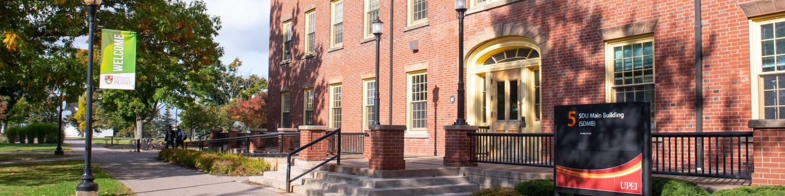
| 파견 기간 | 봄(Winter) 1월 초~4월 말 가을(Fall) 9월 초~12월 하순 |
|---|---|
| 단국대 정원 | 2027 봄 3명 · 2차까지 3명 남음 2026 가을은 모집 없음 |
| 어학 | TOEFL ITP 550 (단국대 목록, UPEI 인정 확인 필요) IELTS 6.5 (Writing 6.5) · DET 120 |
| 숙소 | Blanchard Hall 2인 아파트 · 각자 침실 CAD 4,181.50 / 1인·학기 · 배정 보장 없음 |
| 1인 예산 | 약 1,226만 원 (1,200–1,350) |
| 관심 과목 | 봄 DSJS2050 · PSY3910 · DSJS3140 가을 PSY4350 · DSJS2420 |
| 교환 문의 | exchangein@upei.ca |
UPEI(University of Prince Edward Island)는 캐나다 동부 프린스에드워드아일랜드의 주도 샬럿타운에 있는 공립대학이다. 1969년에 설립됐으며 작은 섬의 교육·연구와 학생생활이 모이는 곳이다. 이 가이드는 겨울학기(1–4월, 단국대 1학기 파견)와 가을학기(9–12월, 단국대 2학기 파견)의 선발·기숙사·비용을 먼저, 수업과 학교·지역 생활을 이어서 다룬다. 과목 전체는 부록에 모았다.
한 줄로 요약하면 단국대 영어권 후보 중 비용이 가장 낮은 축이고, 둘이 아파트형 기숙사에서 같이 살 수 있으며, 젠더·다양성 과목이 풍부한 학교다. 대신 우리 학기는 1년 중 가장 춥고, 섬의 관광지 대부분이 문을 닫는 시기다. 학교의 제도와, 실제로 살면서 매일 결정해야 할 일을 함께 읽는 문서로 쓰면 좋다.
작은 [숫자]는 출처가 아니라 용어 설명이다. 누르면 그 자리에서 열린다. 출처는 부록에 모았다. 학교끼리 비교는 홈의 비교표에서 한다.
세부 항목
세부 항목
세부 항목
세부 항목
1. 한눈에 보기목차로
사진을 누르면 크게 볼 수 있다. 확대 화면의 이전·다음 버튼으로 다른 사진도 넘겨 볼 수 있다.
1.1. 프린스에드워드아일랜드(PEI)
PEI는 캐나다에서 가장 작은 주로, 뉴브런즈윅·노바스코샤와 함께 '해양 주(Maritimes)'로 묶인다. 『빨간 머리 앤』의 배경으로 유명하고, 붉은 사암 해안과 모래사장, 감자밭이 이어지는 농촌 풍경이 섬의 인상이다.
섬이지만 고립된 곳은 아니다. 12.9km 길이의 컨페더레이션 다리(Confederation Bridge)가 뉴브런즈윅과 섬을 잇고, 노바스코샤로 가는 페리와 샬럿타운 공항(YYG)의 국내선도 있다. 다만 차 없이 사는 교환학생에게 섬 밖 이동은 매번 '여행'에 가깝다.
1.2. 샬럿타운과 UPEI
샬럿타운은 PEI의 주도이자 섬에서 가장 큰 생활권이다. UPEI 본 캠퍼스와 공항이 모두 여기 있다. 걸어서 다닐 만한 작은 도시지만, 관광객이 보는 다운타운과 학생이 사는 캠퍼스 주변은 서로 다른 생활권이라 동선을 따로 생각해야 한다.
UPEI는 인문·사회, 경영, 교육, 과학뿐 아니라 수의학·간호·의학·지속가능 설계공학까지 갖춘 종합대학이다. 샬럿타운 외에 세인트피터스 베이(St. Peter's Bay)에 기후변화 교육·연구 거점이 따로 있으므로, 과목을 고를 때 수업이 어느 캠퍼스에서 열리는지도 확인해야 한다. 학교에 어떤 전공이 있다는 것과 교환학생이 그 전공 수업을 들을 수 있다는 것은 별개의 문제다(→ 5.1).
1.3. 시간대
PEI는 대서양 시간(Atlantic Time)을 쓴다. 겨울에는 UTC−4라 한국보다 13시간 늦고, 3월 둘째 일요일에 서머타임이 시작되면 UTC−3이 되어 12시간 차이로 줄어든다. 2028년에는 3월 12일이 그날이다. 토론토·밴쿠버와도 시간대가 다르므로, 항공권과 학교 일정에는 항상 현지 날짜·시간을 같이 적어 두자.
1.4. 여행지와 생활 공간을 함께 보기
PEI는 관광지로 유명하지만, 한 학기 동안의 매일은 수업·장보기·버스 시간표에 맞춰 돌아간다. 계획을 세울 때 "어느 명소에 갈까"와 함께 "추운 저녁에 어떻게 집에 돌아올까"를 같이 생각하는 게 좋다. 시골 명소는 도심처럼 버스로 바로 오갈 수 있다고 가정하지 않는다.
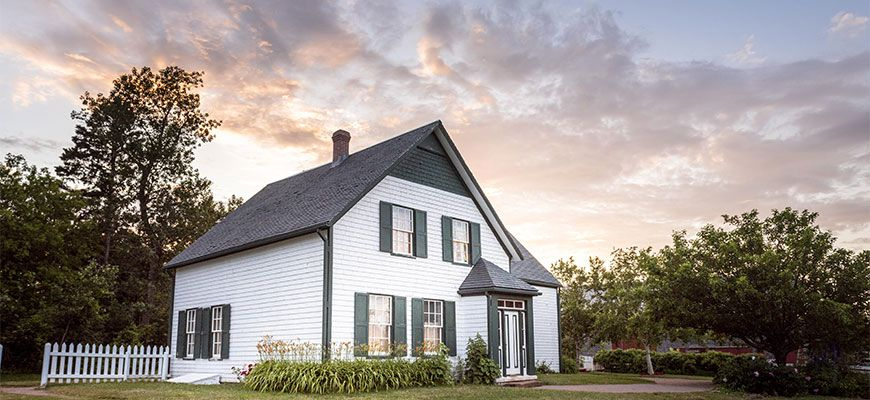
1.5. 학기 이름 맞추기
UPEI는 1년을 세 학기로 나눈다. 한국 대학의 1학기(3–6월)·2학기(9–12월)와 시기가 딱 맞지 않아서 헷갈리기 쉽다.
| UPEI 학기 | 기간 | 단국대 기준으로 보면 |
|---|---|---|
| Winter | 1–4월 | 1학기 파견. 한국 겨울방학 중인 1월 초에 출국해 4월 말에 돌아온다. 한국 1학기(3–6월)와 반쯤 겹친다. |
| Summer | 5–8월 | 교환학생 파견 학기가 아니다. 재학생용 계절학기로, 5–6월·7–8월에 나뉘어 열리는 짧은 집중·온라인 과목이 중심이다. |
| Fall | 9–12월 | 2학기 파견. 한국 2학기와 시기가 거의 같다. (→ 9.2) |
교환학생 Fact Sheet의 지원 일정도 가을·겨울 두 학기만 안내한다.
그래서 1학기(Winter) 파견이면 4월 말에 귀국한 뒤 9월 2학기 복학까지 약 4개월이 빈다. 단국대 1학기는 이미 진행 중이라 중간에 들어갈 수 없다. 이 기간을 인턴, 계절학기, 여행 등 어떻게 쓸지 미리 계획해 두면 좋다. 반대로 2학기(Fall) 파견은 한국 학기와 거의 맞물려서 공백이 짧다.
2. 선발·일정·지원 절차목차로
2.1. 세 개의 절차
교환학생 지원은 한 번에 끝나지 않고 서로 다른 세 개의 절차로 나뉜다. 하나를 끝냈다고 다음이 자동으로 처리되지 않으며, 마감도 각각 다르다.
- 단국대 선발·추천 — 단국대 국제처 모집에 지원해 선발되면, 국제처가 UPEI에 학생을 추천한다. 단국대 선발과 UPEI 입학 승인은 같은 단계가 아니다.
- UPEI 입학 지원 — 추천이 접수되면 UPEI가 안내 메일을 보내고, 그 안내대로 계정을 만들어 지원서를 낸다. 여권 영문명·생년월일·파견 학기가 정확한지 대조하고, 제출 확인 메일과 입학허가서를 보관한다.
- 수강·기숙사·입국 준비 — 과목 신청서, 기숙사 신청, 입국 서류를 각각 준비한다. 기숙사는 입학 지원과 별도로 신청한다.
협정 교환학생은 등록금을 단국대에 낸다. UPEI에는 수업료를 내지 않는다. UPEI에 직접 수업료를 내고 오는 'visiting student'와는 신분이 달라서, 보험과 비용 규정도 다르게 적용된다.
| 2027–28 Fact Sheet | 2027 가을 파견 | 2028 겨울 파견 |
|---|---|---|
| 본교 추천 마감 | 2027.06.15 | 2027.10.01 |
| UPEI 지원 기간 | 2027.02.10–06.30 | 2027.02.10–10.30 |
| 기숙사 신청 마감 | 2027.06.01 | 2027.10.01 |
2.2. 어학 조건
단국대 교환학생 모집표가 UPEI에 TOEFL ITP 550을 명시했으므로, 현재 준비 기준은 ITP 550으로 잡는 것이 타당하다. 일반 안내서에 ITP라는 이름이 따로 없다는 이유만으로 이 경로를 불인정·확인 전 보류로 처리하지 않는다. 아래 표는 제공된 2027-1학기 단국대 UPEI 모집표 기준이다.
| 시험 | 총점 | 영역별 기준 |
|---|---|---|
| TOEFL ITP | 550 | 해당 항목에 별도 최저점 표기 없음 |
| Duolingo English Test | 120 | 각 영역 115 이상 |
| IELTS Academic | 6.5 | 각 영역 6.0 이상 |
| TOEFL iBT | 80 | 각 영역 20 이상 · 모집표의 기존 점수체계 |
단국대 파견대학 모집표는 실제 지원하는 협정 경로의 안내다. UPEI도 교환학생 추천을 소속 대학 국제처를 통해 받도록 설명한다. 따라서 ITP가 명시된 모집에서 그 성적을 준비·제출하는 것은 근거 있는 선택이다. 2028년 실제 모집표가 나오면 학기별 기준을 갱신하면 된다.
UPEI 공통 안내서와 다른 부분은?
2027–28 Fact Sheet에는 IELTS 쓰기 6.5(나머지 6.0), TOEFL paper-based 550 + TWE 5.5가 적혀 있다. ITP에는 이 TWE 쓰기 시험이 포함되지 않는다. 공통 문서의 표현만으로 단국대의 ITP 안내를 무효로 보거나, 반대로 UPEI가 모든 지원 경로에서 ITP를 받는다고 확대할 수는 없다.
확인한 2024년 가을 단국대 후기 2편은 각각 토플(유형 미기재)과 IELTS 준비 경험이었다. ITP로 최종 파견된 사례는 이 두 후기에서는 확인되지 않았다. 이는 모집표의 명시와 별개의 사실이다. 국제처의 개별 회신을 받은 상태는 아니다.
UPEI는 ITP 550 경로, Edge Hill은 DET 105(각 100) 또는 IELTS 6.0(각 5.5) 경로를 구분한다. 두 학교를 한 시험으로 준비하려면 공통 인정 시험에서 더 높은 학교 기준을 적용한다. Edge Hill 어학 상세
단국대 2024년 가을 파견후기 두 편
두 글 모두 PAC 계열의 4인 스위트(2인 침실 2개·주방·욕실 2개)에서 지낸 경험을 적었다. 한 글은 약 1,000만 원, 다른 글은 여러 여행을 포함해 약 1,500만 원을 보고했다. 과거 개인 지출이므로 현재 기숙사 요금이나 2028년 예산을 대체하지 않는다.
2.3. 일정
2028년 봄학기 파견을 기준으로 2027년부터 귀국까지를 순서대로 정리했다. 빨간 글씨는 놓치면 되돌리기 어려운 마감이다.
지원까지 (2027년)
| 언제 | 무엇을 |
|---|---|
| 2027년 초 | UPEI가 2027–28학년도 정식 학사일정(Academic Calendar)을 공개한다. 이때 2028년 개강일·시험일·입퇴실일이 확정된다. 그 전까지는 2026–27 날짜로만 추정할 수 있으니, 항공권은 이 일정을 본 뒤에 산다. 어학시험 준비도 이때부터 시작한다. |
| 2027.02.10 | UPEI의 Winter 2028 온라인 지원 기간이 열린다. 단, 단국대 추천을 받은 뒤에야 지원할 수 있다. |
| 2027년 8월경 | 단국대 2028-1학기 파견 교환학생 모집에 지원한다. |
| 선발 직후 | 국제처에 추천용 정보(영문명, 전공·학년, 어학 성적, 생년월일, 이메일)를 전달한다. 학과에 과목 학점 인정을 상담하고, 듣고 싶은 과목과 대체 과목으로 Course Request Form을 쓴다. |
| 2027.10.01 | 단국대 추천 마감 + 기숙사 신청 마감 |
| 2027.10.30 | UPEI 입학 지원 마감 |
가장 헷갈리기 쉬운 점은 기숙사 마감이 입학 지원 마감보다 한 달 빠르다는 것이다. 입학 결과를 기다렸다가 기숙사를 신청하면 이미 늦는다. 추천을 받는 즉시 기숙사 신청을 같이 준비해야 한다.
출국 준비 (2027년 11–12월)
- 입학허가서(Letter of Acceptance)와 교환학생 확인서(Exchange Letter)를 받으면 eTA를 신청한다. (→ 10.1)
- GuardMe 보험에 가입하고 증빙을 학교에 낸다. 도착 전에 끝나야 한다. (→ 10.4)
- 비행기표는 학사일정과 퇴실 규정(→ 3.7)을 확인한 뒤 산다.
- 입실일 전에 도착하게 되면 임시 숙소를 따로 잡는다.
- 겨울옷, 특히 방수 부츠를 준비한다. (→ 9)
- International Buddy 프로그램을 신청한다. (→ 3.3)
학기 중 (2028년 1–4월)
| 언제 | 무엇을 |
|---|---|
| 1월 초 | 입실 → 다음 평일에 학생증 발급과 교환 담당자 체크인 → 개강. 2027년 기준으로는 1월 10일 입실, 11일 개강이었다. |
| 개강 후 약 11일 | 수강 변경 마감. 2027년 기준 1월 22일. 바꾸려는 과목은 이 전에 단국대 인정 여부까지 확인한다. |
| 2–3월 | 공부하면서 주말에 도심 공연·스키파크 같은 겨울 외출. 과제 마감 전에 Writing Centre를 예약한다. |
| 3월 12일 | 서머타임 시작. 한국과의 시차가 12시간으로 줄어든다. 가족·학교와 통화하는 시간을 다시 맞춘다. |
| 4월 중순 | 수업 종료 → 기말시험. 2026–27 기준 수업은 4월 13일 종료, 시험은 4월 16–26일이었다. |
| 4월 말 | 퇴실. 마지막 시험 다음 날과 4월 27일 중 빠른 날(2026–27 계약 기준). |
귀국 2–3주 전부터 귀국 후까지
귀국 2–3주 전에는 각자의 마지막 시험일과 퇴실일을 확정하고, 짐 부치기·은행·휴대폰 자동결제 해지를 정리한다. 퇴실할 때 방 점검과 열쇠 반납, 미납금 정산을 마친다.
귀국 후에는 최종 성적이 나온 뒤 학생 포털 MyUPEI에서 본인이 직접 단국대로 성적표 발송을 신청해야 한다. 자동으로 가지 않는다. 출국 전에 단국대에서 성적표를 받을 부서·이메일·방식을 미리 물어 두면 편하다.
3. 기숙사와 둘이 함께 살기목차로
3.1. 고르는 법
UPEI 기숙사는 네 건물이다. 건물 이름보다 방 구조로 고르는 게 중요하다. 예를 들어 같은 'double'이라도 Bernardine에서는 한 침실을 둘이 쓴다는 뜻이고, Andrew에서는 개인 침실 두 개짜리 스위트라는 뜻이다. PAC도 방 유형에 따라 침실 공유 여부가 갈린다.
다음 세 질문에 답하면 후보가 두세 개로 줄어든다.
- 내 침실이 따로 있어야 하나? → 그렇다면 Bernardine double과 PAC 4인형은 제외.
- 직접 요리할 건가? → 그렇다면 주방이 있는 Blanchard·PAC. 요리를 안 할 거면 식사가 포함된 Andrew·Bernardine.
- 둘이 한 공간을 쓸 건가? → 그렇다면 2침실 아파트형에 상호 룸메이트 요청.
세 질문에 모두 '그렇다'라면 Blanchard 2침실이 1순위, PAC 2침실이 2순위가 된다. 정리하면 이렇다: 취사 + 개인 침실은 Blanchard·PAC, 혼자만의 공간은 PAC 스튜디오, 개인 침실 + 식사 플랜은 Andrew.
| 방 유형 (2026–27) | 침실 | 욕실 | 요리 | 식사 | CAD/학기 |
|---|---|---|---|---|---|
| Blanchard 2침실 | 개인 | 2명이 1개 공유 | 주방 | 별도 | 4,181.50 |
| PAC 2침실 4인형 | 2인 1실 | 2개 | 주방 | 별도 | 4,166.00 |
| PAC 2·3침실 | 개인 | 1·2개 | 주방 | 별도 | 4,880.00 |
| PAC 스튜디오 / 2침실 프리미엄 | 1인 공간 / 개인 | 1 / 2개 | 주방 | 별도 | 5,080.00 |
| Bernardine double | 2인 1실 | 옆방과 공유 | 층 공용 | 7일 | 6,312.00 |
| Bernardine single | 개인 | 옆방과 공유 | 층 공용 | 7일 | 7,163.50 |
| Bernardine premium single | 개인 | 확인 필요 | 층 공용 | 7일 | 7,363.50 |
| Andrew 2·3침실 스위트 | 개인 | 스위트 내 공유 | 간이 | 7일 | 7,662.00 |
| Andrew 1인 스위트 | 개인 | 전용 | 간이 | 7일 | 7,762.00 |
Andrew·Bernardine 가격에는 주 7일 무제한 식사 플랜이 이미 포함되어 있다. 주 5일 플랜을 고르면 표의 금액에서 CAD 63.50이 줄어든다. 2027–28 요금은 다시 확인한다.
3.2. Blanchard Hall
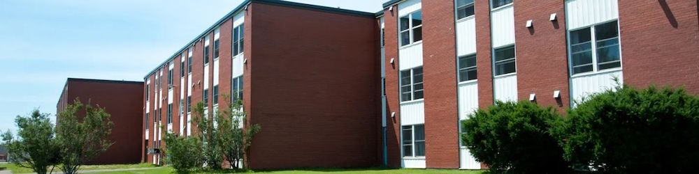
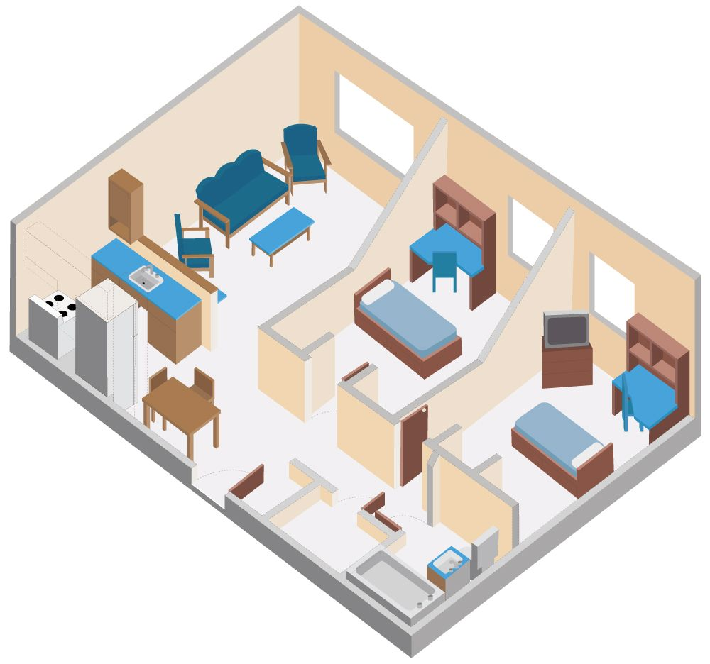
침실은 각자 하나씩, 거실·주방·욕실은 둘이 함께 쓰는 아파트다. 직접 요리하면서 개인 침실을 유지하고 싶은 학생에게 맞고, 기숙사 중 가장 싼 편이며 식사 플랜을 의무로 사지 않아도 된다. 둘이 쓰면 합계 CAD 8,363(약 795만 원)이다.
| 공간 | 제공되는 것 |
|---|---|
| 각 침실 | Twin XL 침대(38×80인치, 약 97×203cm), 책상·의자, 서랍장, 잠금 협탁, 옷장 |
| 거실·주방 | 소파·테이블, 4구 레인지, 냉장고, 식탁. 전자레인지와 식기세척기는 없다. |
| 공용 | 욕실 1개, 수납 공간. 1층에 공용 세탁실과 라운지 |
| 포함 비용 | 난방·온수·전기·와이파이. 건물 출입문은 항상 잠겨 있다. |
자율성이 큰 만큼 책임도 있다. 식기·냄비·프라이팬을 준비하고, 장보기·설거지·욕실 청소를 어떻게 나눌지 처음에 정해 두자. 일부 구역은 조용한 구역(quiet section)으로 운영되니 조용한 배정을 원하면 문의할 수 있다.
3.3. PAC
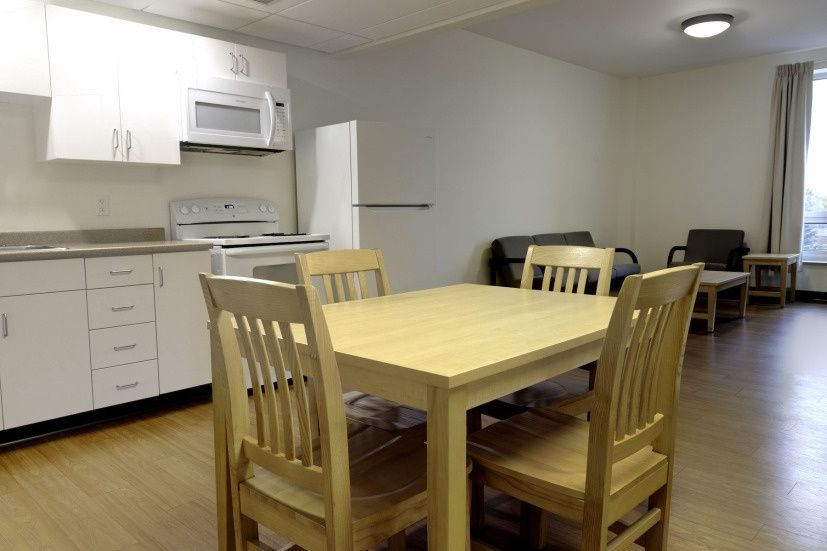
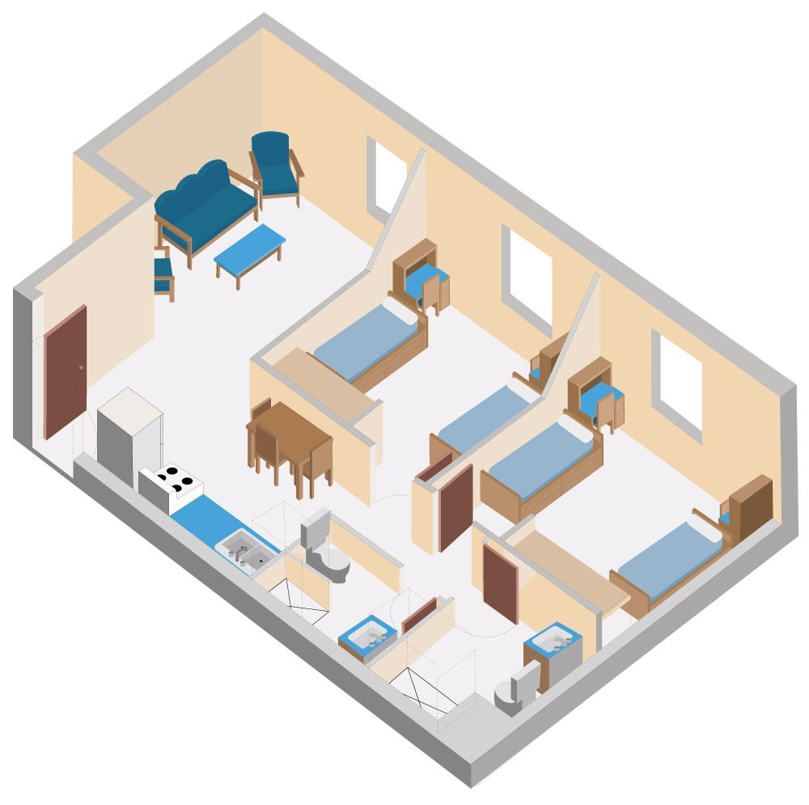
PAC는 Performing Arts Centre and Residence의 약자로, 공연장과 붙어 있는 기숙사다. 같은 건물 안에 생활 방식이 다른 방이 섞여 있어서 유형을 정확히 구분해야 한다.
| 유형 | 침대 | 욕실 | 침실 |
|---|---|---|---|
| 스튜디오 | Double XL 1개 | 1개 | 혼자 쓰는 원룸 |
| 2침실 | 각 방 Double XL | 1개 | 개인 |
| 2침실 4인형 | 한 방에 Twin XL 2개 | 2개 | 2인 1실 |
| 2침실 프리미엄 | 각 방 King | 2개 | 개인 |
| 3침실 | 각 방 Double XL | 2개 | 개인 |
모든 유형에 레인지·냉장고·전자레인지와 책상·서랍장·옷장이 있고, 다침실형에는 거실 가구가 있다. 방마다 온도를 조절하는 지열 냉난방, 카드 출입, 공용 세탁실·라운지·와이파이가 안내된다. 침대 크기는 Twin XL 약 97×203cm, Double XL 약 137×203cm, King 약 193×203cm다.
주로 2–4학년에게 선착순으로 배정된다. 욕실이 2개라고 해서 각 침실에 딸린 전용 욕실이라고 단정하지는 말자. 건물 북쪽 108N호는 기숙사 생활지원(Residence Life), 남쪽 109S호는 배정·학생증 창구다.
3.4. Andrew Hall
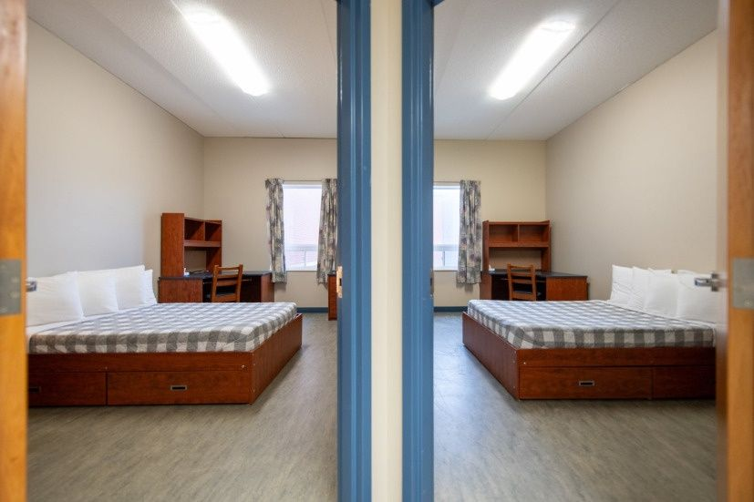
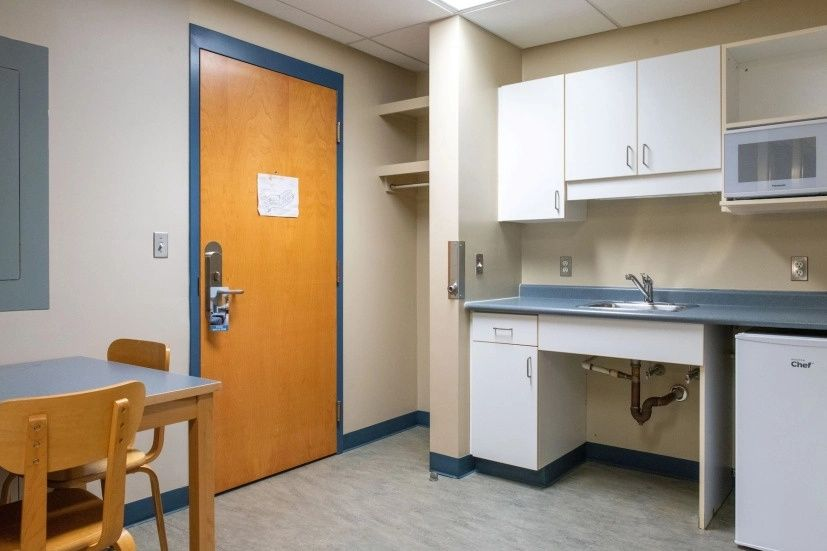
1·2·3침실 스위트가 있고, 모든 침실이 1인실이다. 침대는 Double XL(약 137×203cm)이고 책상·의자·서랍장·잠금 협탁·옷장이 있다. 1침실 중에는 접근성을 고려한 스위트도 있다.
스위트에 싱크대·전자레인지·미니 냉장고·테이블이 있지만 제대로 된 주방(full kitchen)은 아니어서 간식이나 간단한 조리 정도만 가능하다. 대신 주 7일 식사 플랜이 포함되어 있고, 식당(Wanda Wyatt)과 실내로 연결되어 있어 겨울에 밖에 나가지 않고 밥을 먹을 수 있다. 2·3침실은 샤워/욕조와 변기 공간이 분리되어 있다. 개인 방이 있어도 욕실과 냉장고는 공유하므로 보관·청소·손님·취침 시간을 합의하자.
3.5. Bernardine Hall
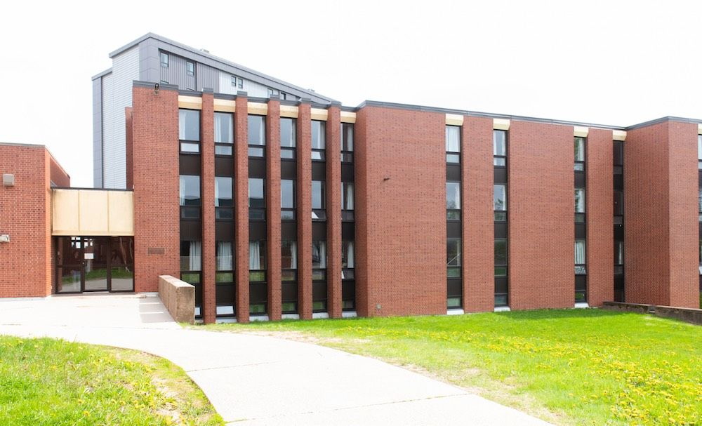
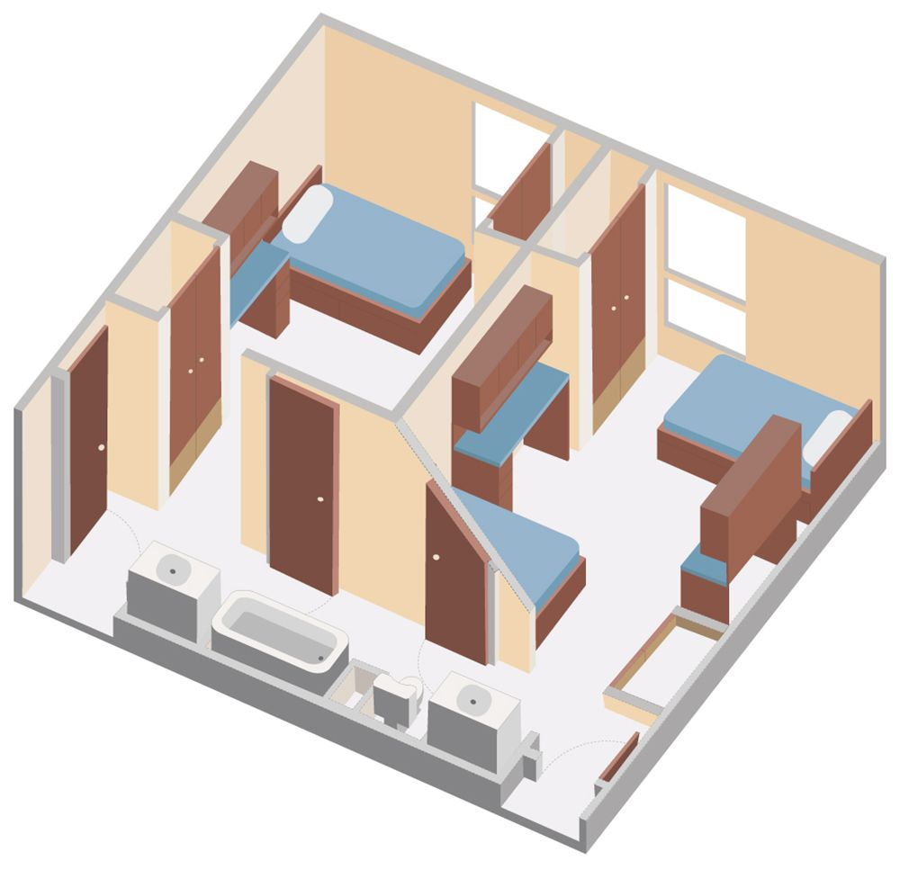
전통적인 기숙사형이다. 일반형은 옆방과 욕실을 연결해 쓰는 구조로, 보통 인접한 두 방의 3–4명이 욕실 하나를 공유한다. Single은 침실을 혼자, Double은 같은 침실을 둘이 쓴다. 침대는 Single·Double이 Twin(약 97×191cm), Premium single이 Double XL이다. Premium이 욕실을 혼자 쓰는지는 공개 자료로 확정되지 않으니 배정 때 확인한다.
방에는 책상·의자, 옷장과 선반, 세면대가 있다. 층마다 TV 라운지·공부방·간이주방·세탁시설이 있고, 건물 출입문은 항상 잠겨 있다. 방을 고를 때 "single인가?"만 보지 말고 욕실을 몇 명이 쓰고 청소는 어떻게 하는지도 물어보자.
3.6. 사진과 배정서 읽는 법
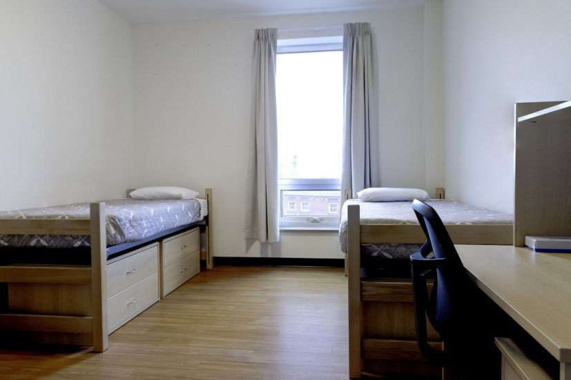
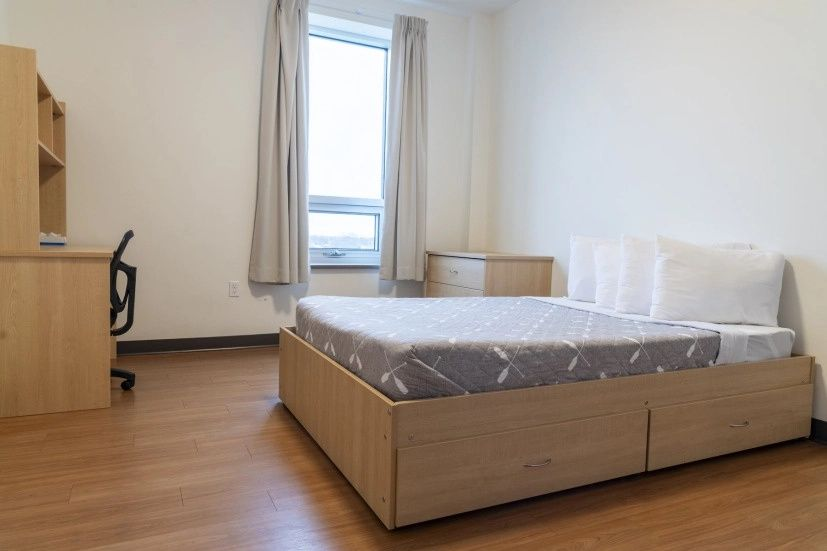
위 객실 사진은 UPEI가 여름 숙박 손님용(Conference Accommodations)으로 공개한 실제 객실 사진이다. 그래서 사진 속 침구·수건·식기·장식품이 학생에게 제공된다는 뜻은 아니다.
사진으로는 침실에 문이 따로 있는지, 책상 사이 거리, 옷장 위치, 냉장고 크기, 조리 기구를 살펴볼 수 있다. 반면 욕실 실제 사용 인원, 침대 크기, 호실마다 다른 구조는 배정받은 유형의 공식 안내로 확정해야 한다. 대표 사진이 모든 방의 전망·면적·가구 배치를 보장하지는 않는다.
3.7. 계약 조건
한 학기 교환학생은 일반 1년 계약이 아니라 계약서 3조의 개별 기간·비용 결정 대상이다. 신청할 때 residence@upei.ca에 한 학기 계약(custom term)을 요청하고, 내 입퇴실 날짜와 금액을 서면으로 받아 두자.
| 항목 | 내용 (2026–27 기준) |
|---|---|
| 예약금 CAD 500 | 기숙사비에 충당된다(예산에 따로 더하지 않는다). 원칙적으로 환불되지 않지만, 학생비자가 거절된 경우는 예외다. |
| 입실 | 2027년 겨울 공식 입실일은 1월 10일이었다. 계약서 PDF에 시작 연도 오기가 있어 개별 서명본으로 확인한다. |
| 퇴실 | 겨울학기 마지막 시험 다음 날과 4월 27일 중 빠른 날. "시험 기간이 끝날 때까지 있을 수 있겠지" 하고 비행기표를 사면 안 된다. 개인 계약서의 날짜가 우선이다. |
| 취소·중도 퇴실 | 입실 취소는 시작일 전에 서면으로 알린다. 겨울학기 중 스스로 나가면 환불이 없다. |
| 겨울방학 잔류 | 일반 계약에는 포함되지 않는다. 서면 신청·승인과 CAD 250 연장비가 필요하다. (1월 입실이면 해당 없음) |
출처: 기숙사 계약서 1–3·10–14·17·27–28조 계약 §§1–3·10–14·17·27–28, 입퇴실 날짜 입퇴실 날짜
3.8. 준비물과 입실 직후
기숙사는 가구만 있고 침구는 없다. 침대 규격과 제공 물품을 확인한 뒤 사는 게 좋다.
- 가져가거나 현지에서 살 것: 이불·베개·수건, 옷걸이, 세면·청소용품, 세제. 요리하는 방이면 식기·냄비·프라이팬까지.
- 가져가면 안 되는 것: 개인 에어컨, 핫플레이트, 튀김기, 초. Bernardine·Andrew는 토스터도 제한된다.
입실하자마자 할 일은 세 가지다. 첫째, 원래 있던 파손을 사진으로 기록해 바로 신고한다. 퇴실할 때 내 책임이 되지 않게 하기 위해서다. 둘째, 같이 사는 사람과 청소·취침 시간·손님·공용 물품 규칙을 합의한다. 셋째, 세탁실 위치와 결제 방식·1회 요금을 확인한다.
룸메이트에게 이름·이메일을 공유하고 싶지 않다면 신청서의 거부 항목을 확인한다. 학생증을 잃어버리면 먼저 비활성화부터 한다.
3.9. 둘이 함께 가기
둘이 같이 가려면
둘이 함께 파견 가서 같은 집에 살려면 세 개의 관문을 차례로 넘어야 한다. 하나라도 어긋날 수 있으니 각 단계의 대안을 미리 정해 두자.
- 둘 다 UPEI에 선발되기. 단국대 정원이 3명이라 둘이 함께 붙어야 한다. 한 명만 붙는 경우에 둘 다 다른 학교로 바꿀지, 따로 갈지 미리 이야기해 둔다.
- 같은 아파트로 배정받기. 기숙사 신청서에 서로를 룸메이트로 적는 '상호 요청(mutual request)'을 한다. 다만 상호 요청은 배정을 보장하지 않는다. 성별 포괄 배정이 가능한지, 요청 내용을 누가 볼 수 있는지 기숙사 사무실에 먼저 물어보자. 메일 템플릿은 18.1에 있다.
- Blanchard 배정받기. Blanchard는 공식 소개에서 19세 이상, 2학년 이상 학생에게 적합한 곳으로 설명되고 고학년 우선순위가 있다. 교환학생에게 자동으로 배정되지 않으므로 2순위로 PAC 2침실을 함께 적어 둔다.
참고로 Blanchard 2침실은 각 방에 1인용 침대(Twin XL)가 있는 구조다. 커플용 큰 침대 방이 아니라 방 두 개를 각자 쓰는 아파트라는 점을 알고 고르자.
4. 한 학기 비용목차로
금액은 CAD, 시간은 현지 시각이다. 기존 예산의 1 CAD≈950원은 계획 계산값이며 실시간 환율이 아니다. 날짜·요금에는 자료의 해당 학년도를 표시했다. 겨울학기 기준의 상세 준비 사례와 가을에 달라지는 조건을 구분해 읽는다.
4.1. 1인 예산
Blanchard 기준 1인 약 1,226만 원(계획 범위 1,200–1,350만 원), 2인 합계 약 2,450만 원이다. 항공과 어학시험까지 포함한 금액이고, 단국대 등록금과 섬 밖 장거리 여행은 빠져 있다.
단위: 만 원 (1인)
| 항목 | 1인 | 2인 | 설명 |
|---|---|---|---|
| 기숙사 | 406 | 812 | Blanchard CAD 4,181.50. 식사 플랜 의무 없음 |
| 왕복 항공 | 230 | 460 | 캐나다 대도시에서 한 번 이상 갈아탄다 |
| 식비 | 160 | 320 | 직접 요리하는 기준 |
| 예비비 | 150 | 300 | 가격 인상·돌발 지출 |
| 교통·통신·정착 | 110 | 220 | 침구, 주방용품, 휴대폰 |
| 보험·서류·교재 | 100 | 200 | GuardMe, eTA 등 |
| 어학시험 | 70 | 140 | 약 2회 응시 (출국 전 지출) |
| 합계 | 1,226 | 2,452 |
4.2. 현지 생활비를 기숙사별로 보면
항공·보험을 빼고 현지에서 4개월 사는 데 드는 돈만 기숙사 유형별로 비교하면 아래와 같다. 기숙사비가 싸도 요리를 하면 식비가 늘고, 식사 포함 기숙사는 비싸도 식비가 줄어든다. 결국 차이는 생각보다 작다.
| CAD | Blanchard 요리·개인 침실 | Bernardine double·식사 포함 | PAC 스튜디오·요리 |
|---|---|---|---|
| 기숙사 | 4,181.50 | 6,312.00 | 5,080.00 |
| 식비·외식 | 1,800 | 800 | 1,800 |
| 통신 | 200 | 200 | 200 |
| 생활·교통 | 600 | 600 | 600 |
| 교재 | 300 | 300 | 300 |
| 정착용품 | 350 | 250 | 350 |
| 소계 | 7,431.50 | 8,462.00 | 8,330.00 |
| +15% 여유 | ≈ 8,550 | ≈ 9,740 | ≈ 9,580 |
| 원화 | ≈ 812만 | ≈ 925만 | ≈ 910만 |
기숙사 칸은 포함 식사까지 낸 금액이다. 식비는 월 450(Bernardine은 식사 포함이라 월 200), 통신 월 50, 생활·교통 월 150을 4개월로 곱했고, 원화는 1 CAD ≈ 950원으로 환산했다. 식비·통신·생활교통·교재·정착용품은 공식 견적이 아니라 계획용 가정이다. 여유비 합계는 CAD 10 단위로 올림했다.
4.3. 첫 달이 가장 비싸다
도착 직후에는 기숙사 청구, 침구, 주방용품, 휴대폰 개통비가 한꺼번에 나간다. '한 달 생활비 × 4'로만 계산하면 출국 직후 돈이 모자랄 수 있다. 출국 전에 결제할 돈과 첫 달에 필요한 목돈을 따로 떼어 두자. 식사 포함 기숙사라도 외식·간식, 연휴 운영 변경 때문에 추가 식비가 생긴다.
표에 들어가지 않은 돈도 있다: 단국대 등록금, 개인별 UPEI 부대비용, 섬 밖 장거리 여행, 병원비, 입실 전후의 임시 숙박. 이것들은 각자 따로 더한다.
4.4. 세금과 환율
PEI에서는 물건값에 HST(통합판매세) 15%가 붙는다. 캐나다는 가격표에 세금을 빼고 적기 때문에, CAD 20짜리 물건은 계산대에서 CAD 23이 된다. 다만 우유·빵·채소 같은 기본 식료품은 세율 0%라서 장바구니 전체에 15%를 붙여 계산하면 안 된다. 식당에서는 세금과 팁이 따로 붙으니 영수증에서 항목을 구분해 보자.
환율은 2026년 9–10월에 1 CAD당 940–990원 사이에서 움직였다. 실제 결제에는 카드·송금 수수료가 붙으므로 원화 예산에 2–3% 여유를 두는 게 안전하다.
5. 수강 방식과 관심 과목목차로
5.1. 기본 규칙
교환학생은 한 학기에 3–5과목을 듣는다. 과목 하나는 대부분 3 semester-hours다. semester-hour는 우리 '학점'과 비슷한 단위인데, 단국대에서 몇 학점으로 인정받을지는 자동으로 정해지지 않고 따로 확인해야 한다. 최소 3과목(9 semester-hours)을 들어야 정규 학생(full-time)으로 인정된다.
교환학생이 들을 수 없거나 제한되는 과목도 있다.
- 5000번 이상 과목은 대학원 과목이라 학부생에게 열리지 않는다.
- 간호·수의학·EMBA·운동학·공학은 원칙적으로 교환학생 수강이 제한된다. 개별 심사 가능성은 있다.
- 시간표에 FULL·CLOSED로 표시된 과목은 들어가기 어려우니 대체 과목을 준비한다.
- 다행히 심리학(PSY)과 DSJS는 제한 목록에 없다.
어떤 과목을 듣기 전에 먼저 이수해야 하는 과목이다. 예를 들어 UPEI 심리학 3000번대 과목은 대부분 '심리학 연구방법' 과목(PSY 2700·2730·2750)을 먼저 들었어야 한다. 비전공자는 통계 과목(PSY 2510)으로 대신하는 경로가 있다. 우리는 UPEI에서 그 과목들을 들은 적이 없으므로 한국에서 들은 비슷한 과목의 영문 강의계획서와 이수 내역을 보여 주고 동등성 인정이나 교수 허가를 받아야 한다. DSJS와 교차 개설된 과목이라도 각자 선수과목이 따로 있어서, 다른 학과 번호로 우회해 들을 수 있다고 가정하면 안 된다.
5.2. 신청 순서
- 과목 설명 읽기 — UPEI 학사편람(Academic Calendar)에서 과목 내용과 선수과목을 읽는다.
- 이번 학기에 열리는지 확인 — 해당 학기 시간표(Course Catalogue)에서 샬럿타운 캠퍼스 개설 여부, 학부 수준, 분반과 시간을 확인한다.
- 신청서 쓰기 — Course Request Form에 희망 과목을 우선순위대로 적고, 대체 과목도 함께 적는다. 단국대 담당자의 확인·서명을 받아 제출한다.
- 등록 결과 받고 다시 맞추기 — 희망 과목을 적었다고 자리가 확보되지는 않는다. 실제로 등록된 과목을 받은 뒤 단국대 인정 조건을 다시 맞춘다.
강의계획서는 담당 교수에게 개별로 요청할 수 있다. 학점 인정 상담에 강의계획서가 필요하면 미리 메일로 부탁하자.
5.3. 학점 인정
교환 학점을 어디에 넣을지는 출국 전에 정해야 한다. 심리 계열 부전공 학점을 채울 계획이라면 해당 학과에 과목별로 사전승인을 받는다. 한 과목을 두 학과(예: 주전공과 부전공)에 동시에 인정받을 수는 없다. UPEI 3 semester-hours가 단국대 몇 학점이 되는지도 같이 물어본다.
5.4. 조합 예시
4과목 기준으로 짜 본 예시다. 둘이 겹치는 과목이 하나쯤 있으면 과제와 영어를 같이 준비할 수 있다. 각자 단국대 인정 조건에 맞춰 바꾼다.
| 1순위 | 대체 | |
|---|---|---|
| 심리 전공 쪽 | PSY 3910 · PSY 4720 · DSJS 4060 Queer Theory · DSJS 3140 Masculinities | PSY 2730 · PSY 3850 |
| 비전공 쪽 | DSJS 2050 · DSJS 1120 · DSJS 2160 · 본인 전공 관련 1과목 | DSJS 2610(온라인) |
5.5. 첫 주와 마지막 주에 남길 기록
첫 주에는 각 과목의 강의계획서(syllabus)에서 평가 비중, 읽기 과제, 에세이·시험 일정, 그리고 AI와 번역기 사용 허용 범위를 정리해 둔다. 캐나다 대학은 학업 윤리 기준이 엄격한 편이라 과목마다 다른 규칙을 처음부터 알아 두는 게 안전하다. 과목을 바꾸려면 변경 전에 단국대 승인을 받고, 바뀐 계획을 저장해 둔다.
6. 캠퍼스 생활목차로
UPEI에서의 생활은 수업이 있는 본 캠퍼스, University Avenue의 상점가, 항구와 문화시설이 모인 다운타운을 오가는 형태다. 관광 사진에 나오는 해변과 붉은 절벽은 대개 이 일상 동선 밖에 있다. 평일에는 걸어서 공부·식사·운동을 해결하고, 버스로 시내에 나가며, 섬의 다른 지역은 별도의 외출로 잡는 생활에 가깝다.
6.1. 학교의 크기와 분위기
공식 소개 기준 학생 수는 5,500명 이상, 출신 국가는 92개국 이상이다. PEI의 유일한 대학이자 지역의 교육·연구 거점으로, 인문사회 분야와 함께 수의학·간호·공학 등 여러 분야가 한 학교에 있다. 교환학생이 체감할 특징은 거대한 도심 대학의 수많은 선택지보다, 자주 가는 건물과 모임에서 사람을 반복해서 만날 수 있는 규모라는 점이다. 이는 학생 수와 시설 배치에서 읽을 수 있는 생활상의 장점이지, 모든 수업이 소규모라는 뜻은 아니다.
캠퍼스 안에서도 분위기가 다르다. Robertson Library는 공부하는 시간이 길어지는 곳이고, W. A. Murphy Student Centre는 학생회·먹거리·모임이 겹치는 곳이다. Chi-Wan Young Sports Centre와 그 옆 Bell Aliant Centre는 수업이 없는 날에도 캠퍼스로 나올 이유가 된다. 기숙사에 산다면 이 세 공간을 익히는 것만으로도 집과 강의실만 오가는 생활에서 벗어나기 쉽다.
6.2. 공강에 어디에 있을까?
| 하고 싶은 일 | 맞는 공간 | 이용 장면 |
|---|---|---|
| 혼자 읽고 정리하기 | Robertson Library의 조용한 구역·개인 학습실 | 다음 수업 전 읽기 과제를 하거나, 영어 문장을 소리 내지 않고 천천히 정리할 때. 좌석 구역의 소음 안내를 보고 고른다. |
| 팀 과제·발표 연습 | 도서관 그룹 학습실 | 시간을 예약해 만나고 화면·자료를 함께 보며 이야기한다. 방음실은 아니므로 큰 소리로 장시간 연습하는 공간과는 다르다. |
| 혼자 왔지만 대화도 하고 싶을 때 | 학생회관의 Campus Life Lounge | 보드게임이나 카드 한 판을 같이 하며 말을 시작한다. 처음부터 친한 사람을 데려가야 하는 모임이 아니라 학생 교류를 위해 열어 둔 공간이다. |
| 밥을 먹으며 쉬기 | The Fox & Crow·교내 카페 | 짧은 공강에 캠퍼스 밖까지 나가지 않고 식사나 커피를 해결한다. 식사 플랜의 무제한 식당과 카페·펍 결제는 구분한다. |
| 과제를 미루지 않으면서 사람도 만나기 | Campus Life의 함께 공부하기 모임 | 각자 공부를 하되 같은 공간에 있는 방식. 친목만을 위한 대화가 부담스러울 때 진입점이 된다. |
도서관은 2026년 가을 재개관 안내에서 중앙 로비·계단과 함께 로비 옆 올젠더 화장실 정비를 소개했다. 현재 예약 화면에는 개인 방, 그룹 방, 스터디 포드가 함께 나온다. 옛 블로그의 호실만 외우기보다 도착 후 실제 출입구와 원하는 공부 자리를 한 번 돌아보는 편이 유용하다.
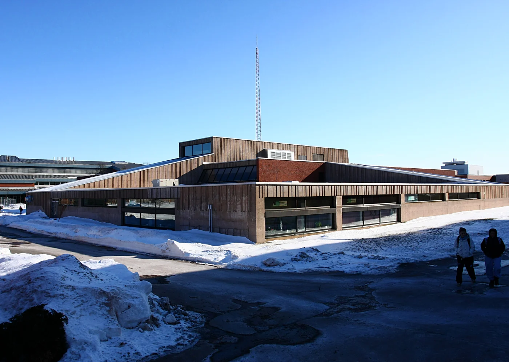
교수에게 수업 내용을 묻고 싶다면 강의계획서의 office hours를 이용할 수 있다. 예를 들어 ‘이 논문에서 정체성의 안정성을 어떻게 측정한 것인지 이해가 안 된다’처럼 수업에서 생긴 질문 하나를 들고 가면 된다. 영어로 완성도 높은 질문을 길게 준비하기보다, 읽은 부분과 막힌 부분을 보여주는 방식이 실제 대화를 시작하기 쉽다. 이 문단은 학교별 연구 참여 보장이 아닌 학업 활용 예시다.
6.3. 대화가 자연스럽게 생기는 모임
Campus Life Program은 게임·대화·휴식·공동 공부·가벼운 체육 활동을 운영한다. 현재 안내의 Daily Lounge는 학기 중 학생회관 Day Lounge에서 월–목 11:00–13:00에 열리고, 별도의 체육관 Rec Time과 그룹 공부 시간이 있다. 특정 행사 한 번보다 같은 요일에 몇 번 돌아가면 먼저 본 사람과 다시 인사할 기회가 생긴다. 이 시간은 2026–27 안내의 사례이며 파견 학기의 운영표를 확인한다.
International Buddy는 먼저 학교에 다닌 국내·국제학생과 새 국제학생을 연결한다. 길 찾기나 학교생활 질문으로 시작하기 좋지만, 개인별 만남의 빈도는 다르므로 친목의 유일한 통로로 삼기보다는 수업·동아리와 함께 이용하는 편이 낫다.
Psychology Society는 심리학 학생의 학업을 돕는 행사뿐 아니라 전공자가 아닌 학생도 참여할 수 있는 웰빙 활동을 소개한다. 같은 수업을 듣는 사람을 만나고 심리학을 공부하는 학생들의 관심사를 듣는 통로다. 학생회 목록에는 문화·취미 모임과 지역사회 활동도 있다. 예를 들어 Extra Awesome은 다운증후군이 있는 지역 주민·형제자매와 학생들이 미술·볼링 등의 활동을 함께하는 모임이다. 상담 실습이나 임상 경력으로 치환할 활동은 아니지만, 지역 사람들과 정기적으로 만나는 경험이라는 성격은 분명하다.
처음 연락할 때는 “한 학기 교환학생인데 이번 학기 행사에 참여할 수 있나요?” 정도로 시작하면 된다. drop-in 모임, 한 번 참여하는 행사, 매주 책임이 따르는 봉사 활동은 참여 부담이 다르다. 관심은 있지만 영어가 걱정된다면 게임·운동·요리처럼 함께 하는 행동이 있는 자리부터 고르기 쉽다.
6.4. 돈을 많이 쓰지 않고 운동하기
Chi-Wan Young Sports Centre의 학생 혜택에는 헬스장, 실내외 트랙, Open Gym, 피트니스 수업이 포함된다. 혜택은 학생 계정의 Fitness and Admin Fee와 연결된다. 교환학생은 처음 방문할 때 Campus Card를 보여 주고 자신의 이용 범위를 확인하면 된다. 일반 성인 회원권부터 새로 결제할 필요는 없다.
수영은 옆의 Bell Aliant Centre에서 한다. 운영기관 안내는 해당 체육비가 부과된 UPEI 정규 학생에게 9–4월 open swim 시간 무료 입장을 제공한다고 명시한다. 학생증을 수영장 데스크에서 스캔한다. 헬스장 회원권에 수영·빙상 시설의 모든 프로그램이 포함되는 구조는 아니므로, 강습을 신청할 때는 별도 요금을 본다.
운동을 잘해야만 즐길 수 있는 것은 아니다. 실내 트랙을 걷고, 자유 이용 시간에 가볍게 공을 던지거나, 다른 학생과 피트니스 수업 한 번을 함께 들을 수 있다. 겨울에는 바깥 산책이 어려운 날에도 실내에서 몸을 움직일 곳이 있다는 것이 기숙사 생활의 장점이다. UPEI Panthers 경기 관람도 저녁 외출의 한 선택지다. 학생 무료 관람 안내가 있는 홈경기를 고르고, 실제 경기별 입장 방식은 일정 페이지에서 확인한다.
6.5. 차 없이 장보고 돌아오기
U-Pass는 Charlottetown·Stratford·Cornwall을 잇는 시내 교통에 쓴다. 버스가 지나가는 University Avenue를 기본 축으로 익히면 캠퍼스, 일반 마트, 쇼핑몰, 다운타운의 위치를 이해하기 쉽다. 시내 이동과 섬 외곽으로 가는 TransitPEI 노선은 별도로 본다.
여기에 학생회의 Panther Patrol을 보조 수단으로 쓸 수 있다. 현재 공식 안내는 월–목 캠퍼스에서 귀가하는 이동, 금요일 캠퍼스↔Walmart 장보기 이동을 무료로 운영한다. 모든 UPEI 학생이 학생증으로 이용할 수 있고, 당일에 명단에 신청하는 방식이다. 원하는 순간 호출하는 택시나 매일 모든 마트를 도는 순환버스는 아니다.
| 현재 Panther Patrol 안내 | 시간·접수 | 활용하기 좋은 상황 |
|---|---|---|
| 월–목 귀가 | 첫 이동 15:30, 마지막 22:30. 학생회 사무실 또는 오후의 Fox & Crow 앞 접수표에 당일 신청. | 교외 거주자가 캠퍼스에서 늦게 돌아가는 날. 픽업·하차 가능 범위를 접수 때 확인한다. |
| 금요일 장보기 | 09:00 시작, 17:00 종료. Fox & Crow 앞 접수. Walmart 하차 후 버스 정류장에서 돌아오는 편을 연결. | 침구·세제·쌀처럼 무겁거나 부피 큰 물건을 사는 날. 먼저 이용 가능 편을 확인하고 쇼핑한다. |
운영 시간은 2026년 11월 6일 학생회 페이지 기준이다. 이 서비스가 쉬는 날에는 U-Pass 버스로 돌아올 수 있도록 일정을 잡는다. ‘마트까지 가는 길’보다 ‘짐을 들고 방까지 돌아오는 길’이 장보기의 실제 난도를 결정한다.
6.6. 요리하는 기숙사의 식사 운영
Blanchard나 PAC의 주방을 쓴다면 큰 장보기와 중간 보충을 나누기 좋다. 생활 예시로, 금요일에는 쌀·파스타·냉동채소·달걀·고기와 세제 같은 무거운 품목을 사고, 평일에는 우유·과일·빵만 보충하는 방식이다. 이 방식은 특정 가격을 보장하는 절약 공식이 아니라, 차 없이도 들고 올 수 있는 양으로 나누는 방법이다.
두 사람이 함께 요리해도 모든 물건을 처음부터 대용량으로 살 필요는 없다. 냉동실 한 칸의 크기, 냄비·팬의 유무, 룸메이트와 나누는 선반을 먼저 본다. 고기를 한 번에 사면 한 끼 분량으로 소분하고, 기본 재료를 볶음밥·파스타·샌드위치처럼 여러 메뉴에 돌려 쓰면 같은 음식만 먹는 느낌이 줄어든다. 수입 식재료는 한 번에 많이 사기보다 현지에서 자주 먹는 메뉴와 섞어 장바구니를 구성하는 편이 운영하기 쉽다.
마트의 flyer를 비교할 때는 가격표의 단위를 함께 읽는다. 고기나 채소가 파운드(lb)당 가격으로 표시되면 1lb는 약 454g이다. 작은 숫자 하나만 보고 kg당 가격으로 받아들이면 계산이 크게 달라진다. 할인 매장 두 곳을 도느라 왕복 시간이 길어지면, 당장의 장보기는 가까운 한 곳에서 마치는 편이 나을 수도 있다.
과제가 몰린 주에는 매번 배달을 주문하는 대신 식당 이용과 간단한 집밥을 섞을 수 있다. 식사 플랜이 없는 학생도 식당에서 한 끼를 결제하거나 회수형 플랜을 선택할 수 있다는 점이 유용하다. 현재 메뉴·가격표는 이 가이드의 식사 절에서 비교하고, 직접 요리하는 날과 외출하는 날이 어느 정도인지 본 뒤 구매한다.
생활비가 예상보다 빠르게 줄어 식사에 어려움이 생기면 Campus Food Bank도 학생 지원 창구다. 2026년 학교 공지는 학생회관의 푸드뱅크를 가을·겨울학기 모든 학생에게 열린 서비스로 소개한다. 예산을 처음부터 기부 식품에 의존해 짜기보다, 식비가 부족해졌을 때 연결할 곳으로 알아 두면 된다.
6.7. 가을과 겨울, 같은 학교에서 달라지는 일상
| 생활 장면 | 가을 파견 · 9–12월 | 겨울 파견 · 1–4월 |
|---|---|---|
| 처음 적응하기 | 학년 시작 행사와 신입생 활동을 만날 기회가 많다. 따뜻한 시기에 캠퍼스와 버스 동선을 먼저 익힐 수 있다. | 도착부터 방한·제설·버스 운행을 함께 익힌다. 국제학생 안내와 상시 운영 모임이 첫 연결점이 된다. |
| 공강과 저녁 | 초반에는 밖에서 걷고 앉아 있을 수 있는 시간이 길다. 11–12월로 갈수록 실내 활동의 비중이 커진다. | 도서관·라운지·체육시설처럼 실내에서 반복해 만날 장소가 생활의 중심이 된다. |
| 장보기 | 날씨가 괜찮을 때 필요한 생활용품과 겨울 준비물을 나누어 구입하기 좋다. | 빙판과 눈길에 짐을 오래 들지 않도록 이동 수단을 먼저 정한다. 폭설 전에는 먹을 것을 조금 여유 있게 둔다. |
| 특유의 재미 | 학기 초 야외 행사, 산책, 해변·섬 여행을 시도할 여지가 크다. | 수영·체육관, 실내 공연과 모임, 스케이트·스노슈잉처럼 겨울에 맞는 활동을 찾는 쪽이다. |
겨울이라고 모든 여가가 사라지는 것은 아니다. 샬럿타운시는 시청에서 무료 스노슈 대여를 안내하고, 공공 스케이팅·겨울 산책로 상태도 게시한다. 스노슈처럼 장비를 빌려 한 번 경험하는 활동은 긴 여행보다 준비 부담이 작다. 이용 가능 수량과 그날의 눈 상태를 보고 정하면 된다.
한 학기를 상상할 때는 특별한 여행만 채우기보다 ‘수업 뒤 어디에서 한 시간 쉬고, 누구와 저녁을 먹고, 다음 주에도 다시 만날 곳은 어디인가’를 함께 그려 보면 좋다. UPEI는 큰 도시의 선택지를 매일 소비하는 생활보다, 익숙해지는 장소와 사람을 조금씩 늘리는 생활에 더 잘 맞는 후보로 볼 수 있다.
이 절의 자료와 확인 범위
2026년 11월 6일 대학·학생회·시설 운영기관의 공개 안내를 확인했다. 기관이 제공하는 서비스와 공간은 아래 자료에 근거한다. 장보기 분담·공강 활용·한 학기의 분위기에 대한 설명은 이를 바탕으로 구성한 생활 예시와 해석이다. 시간표는 현재 사례를 적었으며 2028년 운영표를 대신하지 않는다.
- UPEI 소개 — 학생 수·국제학생 구성·학교의 지역 내 역할.
- Campus Life Program — 라운지·게임·체육·함께 공부하기, 현재 운영 시간.
- Be Involved at UPEI — 교내 참여 경로와 International Buddy.
- 학생회 동아리 목록 — Psychology Society와 Extra Awesome의 활동 목적.
- 도서관 2026년 재개관 안내 · 현재 학습실 예약 화면 · 예약 규칙 — 공간 정비, 개인·그룹 방, 예약 시간과 방음 범위.
- UPEI 체육시설 이용 범위 · Bell Aliant 수영장 — 학생 혜택·무료 입장 대상과 기간.
- Recreation and Wellness — 학생 경기 관람·체육 활동 안내.
- U-Pass · Panther Patrol · 샬럿타운 대중교통 — 이용권 범위, 무료 장보기·귀가 서비스의 당일 신청과 운영 시간, 시내·섬 교통 구분.
- 학교 푸드뱅크 안내 — 2026년 공식 안내의 위치·대상.
- 시 겨울 여가 안내 — 스노슈 대여, 스케이팅·산책로 운영 정보.
6.8. 캠퍼스 시설 이용하기
캠퍼스 지도
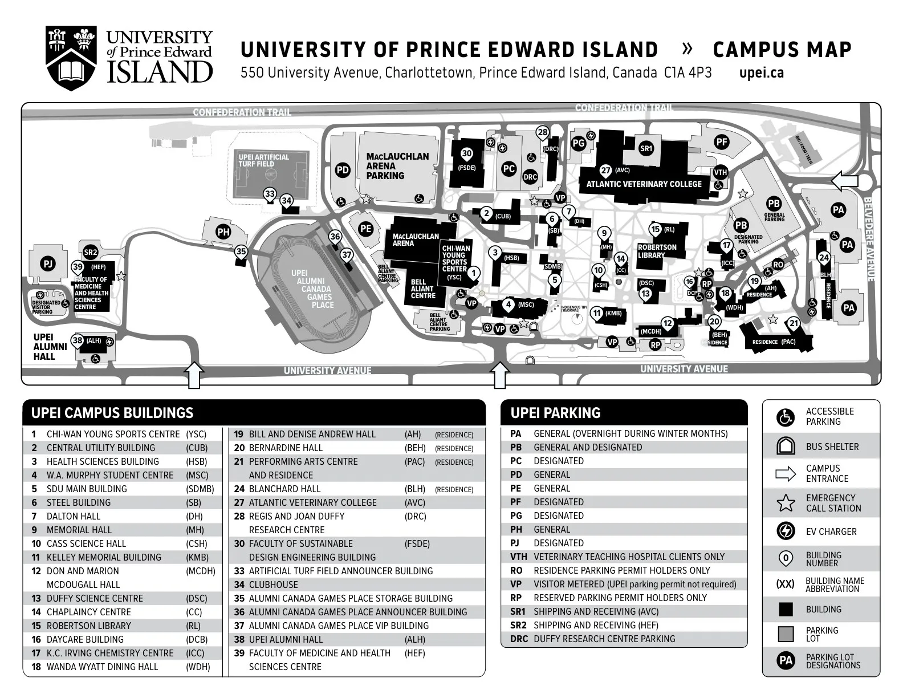
시간표에는 건물 이름이 약자로 나온다. 약자를 지도 번호와 연결해 두면 첫 주 동선이 훨씬 쉬워진다. 먼저 이것만 익혀 두자.
| 번호·약자 | 건물 | 여기서 하는 일 |
|---|---|---|
| 15 RL | Robertson Library (도서관) | 공부, 스터디룸, Samuel's Café, 올젠더 화장실 |
| 4 MSC | W. A. Murphy Student Centre (학생회관) | Tim Hortons, 건강센터·SV-PRO(2층 북쪽) |
| 1 YSC | Chi-Wan Young Sports Centre (체육관) | 학생증 발급, 운동 |
| 7 DH | Dalton Hall | 학생 상담실(5층) |
| 18 WDH | Wanda Wyatt Dining Hall (식당) | 메인 식당 |
| 19 AH · 20 BEH | Andrew Hall · Bernardine Hall | 식사 포함 기숙사 |
| 21 PAC · 24 BLH | PAC · Blanchard Hall | 요리형 기숙사. PAC 109S는 배정·학생증 창구 |
출처: 건물별 소개
공부
Robertson Library 스터디룸은 30분–3시간 단위로 온라인 예약한다. 하루 1건, 앞으로 2주 안에 최대 3건까지 잡을 수 있다. 팀플이라면 팀원 시간을 먼저 맞추고, 계획이 바뀌면 다른 학생이 쓸 수 있게 취소한다. 혼자 공부하는 자리와 대화해도 되는 공간은 현장 표지로 구분한다.
Writing Centre(글쓰기 센터)는 영어 과제를 들고 가면 대면·온라인으로 최대 45분 상담해 주는 곳이다. 과제 이해, 주장 구성, 글의 순서, 인용 방식을 같이 봐 준다. 완성본을 대신 고쳐 주는 곳은 아니다. 과제 설명, 초안, 질문을 준비해 가면 효과가 크다. 예약은 upei.mywconline.com에서 하고, 대면 상담 장소는 예약 확인서의 안내를 따른다.
사람 사귀기
International Buddy는 새로 온 국제학생을 먼저 살아 본 재학생과 짝지어 주는 프로그램이다. 학교생활과 PEI 적응 경험을 나누고 관련 행사에도 참여한다. 공식 페이지에서 신규 학생용 신청을 고르고, 파견 학기 모집 여부와 배정 안내를 확인한다.
동아리는 학생회(UPEISU)의 Clubs & Societies 목록에서 학술·문화·취미 모임과 연락처를 찾을 수 있다. 예를 들어 심리학에 관심 있다면 Psychology Society(psychsociety@upeisu.ca)에 행사 참여가 가능한지 물어볼 수 있다. 첫 연락에는 교환학생이라는 것과 머무는 학기를 적자.
체육관에는 헬스장, 실내외 트랙, 자유 이용 체육관(Open Gym), 피트니스 수업이 있다. 학생 혜택은 체육관 이용료(Fitness and Admin Fee)와 연결되므로 교환학생은 Panther Central에서 학생증 적용 여부를 확인한다. 이용 시간·수업 예약, 행사로 인한 트랙 제한도 살핀다.
도서관에 내 자리 하나 익히기 → 과제 마감 전에 글쓰기 상담 예약 → 동아리나 Buddy 활동 한 번 참여 → 다음 주에도 반복할 일정 정하기.
스몰토크와 합의의 말
인사 뒤에는 수업·날씨·주말 계획처럼 답하기 쉬운 주제로 시작하면 된다. 이 섬에서는 날씨가 가장 무난한 대화거리다.
- "Is it always this windy here?"
- "Which class are you heading to?"
- "Any plans for the weekend?"
같이 사는 사람과는 조용한 시간, 청소, 냉장고 공간, 방문객 규칙을 일찍 정해 두면 편하다. 구체적으로 말하는 게 좋다.
- "Could we agree on quiet hours?"
- "Should we split the cleaning by week?"
한 사람의 반응을 현지 문화 전체로 일반화하지 않는 것도 중요하다.
식사
기숙사 식사 플랜의 중심은 Wanda Wyatt Dining Hall이다. Andrew Hall과 실내로 연결되어 있다. AYCE(All You Care to Eat), 즉 들어가서 먹고 싶은 만큼 먹는 뷔페 방식이고, 점심·저녁에는 음료와 디저트가 포함된다. 그날 메뉴는 @UPEI_Eats 주간 메뉴로 확인한다.
| 운영 (2026–27) | 시간 |
|---|---|
| 평일 | 07:30–22:00 |
| 주말·공휴일 | 09:00–22:00 |
| 입장 | 학생증에 등록한 식사 플랜, 또는 현장에서 직불·신용카드 |
영업시간이 길다고 모든 음식이 그 시간 내내 나오는 건 아니다. 첫날 실제 배식 방식과 끼니별 시간을 확인하자. 겨울방학이나 특별 운영 기간에는 따로 공지된다.
| 현장 결제 | 세전 | 세후 (HST 15%) |
|---|---|---|
| 아침 | 10.76 | ≈ 12.37 |
| 점심 | 14.69 | ≈ 16.89 |
| 저녁 | 16.77 | ≈ 19.29 |
식사 플랜
| 플랜 | 가격 (CAD) | 계산·이용 범위 |
|---|---|---|
| 주 7일 무제한 | 3,247 / 학기 | 세금 없음, 모든 요일 |
| 주 5일 무제한 | 3,183.50 / 학기 | 세금 없음, 월–금 |
| 10회 / 25회 | 135 / 335 + 세금 | 끼니당 세전 13.50 / 13.40 |
| 50회 / 80회 | 655 / 1,035 + 세금 | 끼니당 세전 13.10 / 약 12.94 |
7일과 5일 무제한의 차이는 학기당 CAD 63.50이다. 주말에도 캠퍼스에 자주 있다면 이 차액과 주말 식비를 비교해 보자. Andrew·Bernardine 요금에는 선택한 플랜이 이미 들어 있으니 다시 더하지 않는다.
Blanchard·PAC처럼 요리하는 기숙사는 식사 플랜이 의무가 아니다. 평소엔 직접 해 먹고, 시험 기간이나 폭설 날을 대비해 10회권이나 25회권을 사 두는 정도가 적당하다. 플랜 등록은 PAC 109S나 residence@upei.ca로 문의한다.
채식·비건·할랄·글루텐 프리 선택지가 안내되어 있다. 알레르기가 있다면 메뉴 이름만 보고 판단하지 말고 담당 셰프에게 재료와 교차오염 여부를 직접 물어보자.
교내 카페
| 매장 | 건물 | 평일 |
|---|---|---|
| Samuel's Café | Robertson Library | 07:30–15:00 |
| Tim Hortons | W. A. Murphy Student Centre | 07:30–18:00 |
| AVC Café | Atlantic Veterinary College | 07:30–15:00 |
| Micromarket | Sustainable Design Engineering | 07:30–15:00 |
| Bodega | Medicine and Health Sciences | 07:30–15:00 |
무제한 플랜에는 교내 매장에서 쓰는 Dana Dollars가 포함되지만, 카페 주문까지 무제한이라는 뜻은 아니다. 잔액·유효기간·사용처를 따로 확인한다. 학생회관의 Fox & Crow도 별도 식음료 공간으로, 식사 플랜 무제한 이용처가 아니다.
7. 쉬는 날: 샬럿타운과 섬의 문화목차로
PEI의 매력은 『빨간 머리 앤』 배경지에만 있지 않다. 농어업과 작은 도시의 일상, 공연·미술·원주민 예술, 해안과 숲을 함께 경험하는 곳이다. 차가 없는 학생에게는 샬럿타운에서 반복해서 찾을 장소와 교통을 마련해 한 번씩 나가는 섬 여행을 나눠 보는 것이 유용하다. 특히 겨울학기에는 대도시처럼 즉흥적으로 갈 곳이 촘촘하지 않지만, 공연·영화·도서관·커뮤니티 행사까지 모두 사라지는 것은 아니다.
7.1. 샬럿타운에서 시간을 보내는 장소
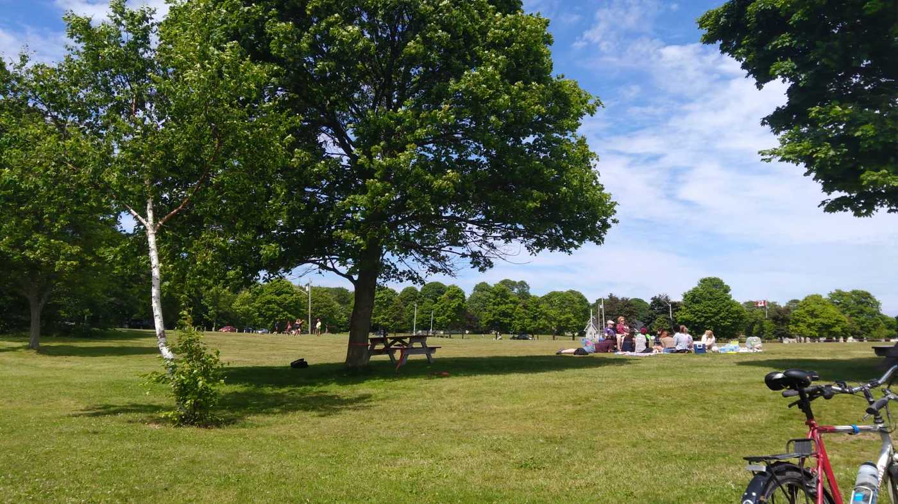
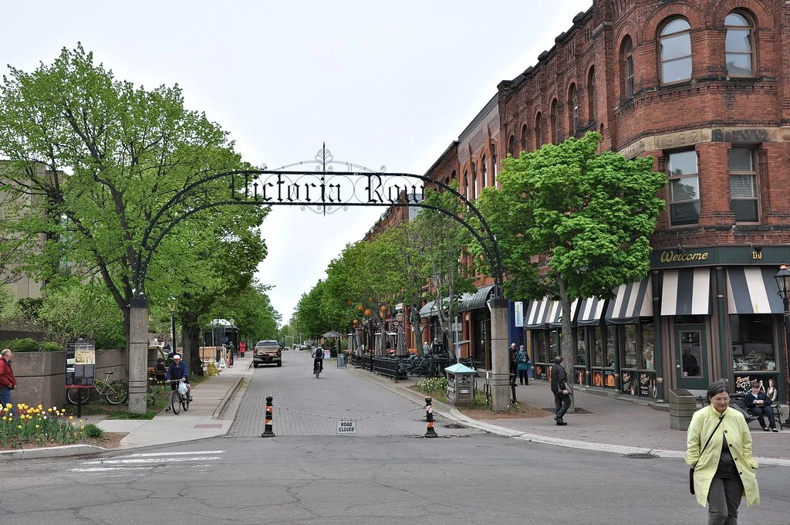
| 장소 | 무엇을 경험하나 | 생활에서 이용하는 법 |
|---|---|---|
| Confederation Centre 145 Richmond St | 캐나다의 역사·현대 시각예술과 공연. 회화뿐 아니라 사진·영상·설치 작품을 만날 수 있다. | 갤러리와 저녁 공연은 별도 일정으로 생각한다. 2026년 안내상 여름 학생 입장과 10월13일 이후 겨울 입장은 기부제다. |
| Charlottetown Library Learning Centre | 책을 읽고 쉬거나 도서관 프로그램을 찾아보는 도심 실내 거점. | 기숙사·교내 도서관과 다른 분위기에서 오후를 보내고 싶을 때. 구매를 전제로 하지 않는 외출 선택지다. |
| Victoria Row·주변 거리 | 카페·식당·가게와 오래된 거리 풍경. 공연 전후 약속을 잡기 편한 중심부. | 겨울에는 긴 야외 테라스 시간을 기대하기보다 실내 한 곳과 짧은 산책을 묶는다. |
| Founders’ Food Hall & Market 6 Prince St | 여러 식음료 판매점이 모인 푸드홀. 선택한 행사일에는 음악·계절 프로그램도 열린다. | 먹고 싶은 메뉴가 서로 달라도 같은 곳에서 식사하기 좋다. 공연 시작·음식점 영업시간은 각각 확인한다. |
| Peake’s Wharf·Victoria Park | 항구와 해안 산책, 벤치에서 쉬기, 사진 찍기. Victoria Park에는 해안 보드워크가 있다. | 상점 영업과 야외 산책 가능 여부는 별개다. 강풍·결빙 때에는 실내 방문 뒤 산책을 짧게 줄인다. |
| City Cinema·The Guild·Trailside | 영화, 공연, 지역 음악을 선택하는 창구. 유명 관광지보다 그날 작품이 방문 이유가 되는 공간. | 프로그램과 귀가 버스를 함께 확인해 저녁 외출을 만든다. 모든 장소에 같은 요금·연령 조건을 적용하지 않는다. |
기부제(by donation)는 정액 요금과 다르다. Confederation Centre를 ‘항상 무료’ 또는 ‘항상 CAD 15’라고 적으면 학생·계절 조건을 놓치게 된다. 갤러리 관람과 공연 티켓도 같은 상품이 아니다. 예를 들어 2026년 11~12월 공식 공연 목록에는 재즈 트리오, 코미디, 합창, 지역 음악가의 크리스마스 공연이 있었다. 겨울 문화생활이 어떤 모습인지 보여주는 사례이며 미래 학기의 동일 공연을 뜻하지 않는다.
7.2. 일정표보다 취향으로 고르는 반나절
조용히 쉬는 날, 2~3시간: 도서관에서 읽기 → 주변 카페나 서점 → 짧은 거리 산책. 미술과 항구를 보는 날, 4~5시간: 갤러리 → Victoria Row에서 점심 → Founders 또는 항구 → 버스로 귀가. 저녁 공연을 보는 날: 저녁식사 → 공연 한 편 → 귀가. 매번 모든 명소를 한꺼번에 잇기보다 목적 하나를 정하고 나머지는 날씨에 따라 더하는 편이 편하다.
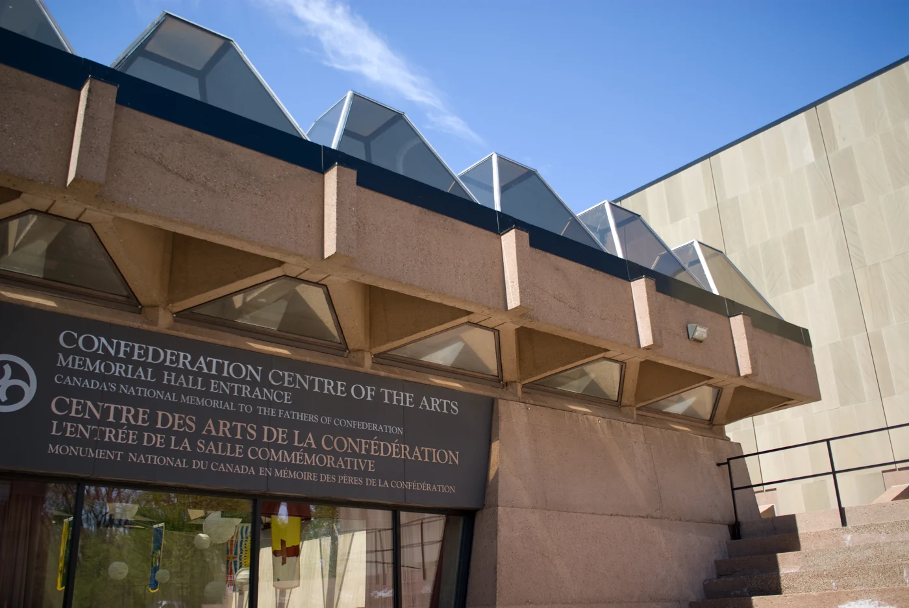
Province House 주변은 캐나다 연방 형성과 연결되는 역사 공간으로 함께 걸을 수 있다. 건물 내부의 관람·공사 상태는 별도 확인 항목이다. 위 동선은 도심에서 걷는 구간을 제안한 것으로, 캠퍼스에서 출발해 돌아오는 버스 시간까지 포함한 확정 일정은 아니다. 공연이 늦게 끝나면 낮 외출 때와 귀가 선택지가 달라진다.
7.3. 음식과 음악으로 만나는 섬
지역 시장에서 감자·채소·빵·유제품을 구경하는 날과, 굴·홍합·랍스터 같은 해산물을 별도 예산으로 맛보는 날을 나눌 수 있다. 랍스터 서퍼는 여행 경험에 가까우며 평소 식비 기준으로 삼을 필요는 없다. 계절 영업하는 식당은 겨울에 닫을 수 있다.
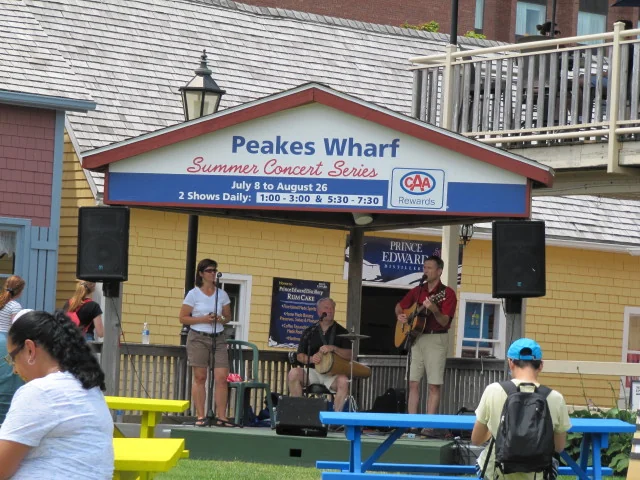
케일리(ceilidh)나 소규모 라이브는 PEI의 다른 얼굴이다. 공연을 듣는 동안 모든 대사를 이해해야 하는 연극과 달리 음악 자체로 즐길 수 있고, 휴식 시간에 같은 자리에 앉은 사람과 짧은 대화를 나눌 여지도 있다. 입장료·좌석 예약·연령 제한·공연장의 위치를 보고 고른다.
이 섬은 미크마크(Mi’kmaq) 사람들의 땅이며 에펙위트(Epekwitk)라는 이름으로도 불린다. 원주민 예술은 기념품의 한 종류로만 보기보다 오늘날 이 섬에서 활동하는 제작자의 작업으로 접하면 좋다. Indigenous PEI Store는 현지 원주민 제작자의 상품과 이야기를 소개하고, 특정 날짜에는 시연·행사도 마련한다. 제작자와 재료를 물어보며 작품을 보는 방식이 가능하다. 별도 워크숍이나 공동체 방문은 그 주최자의 일정·참여 안내를 따른다.
Charlottetown Farmers’ Market은 현재 614 North River Road의 임시 장소에서 운영 중이다. 연중 토요일 09~14시, 7~8월에는 수요일 09~14시에도 연다는 공식 안내가 있다. 예전 후기의 Belvedere 주소로 바로 찾아가기보다 당일 운영 장소를 확인하는 것이 좋다.
7.4. 퀴어 커뮤니티의 실제 활동
Pride PEI의 Community Calendar에는 퍼레이드 외에도 창작·영화·사교 프로그램이 올라온다. 2026년에는 매월 첫 토요일의 Queer Poetry Club, PEERS Alliance의 성인 모임에서 즉흥극을 해보는 활동, BUDS Trans Social Group의 할로윈 영화 밤 등이 확인됐다. 시를 직접 쓰거나 발표하는 것만이 참여 방식은 아니며, 행사 안내에 따라 읽거나 듣는 형태의 모임도 있다.
이는 수업 밖에서 정체성과 자기표현을 다른 사람의 일상과 연결해 볼 수 있는 접점이다. 여름 Pride 기간에 체류하지 않아도 학기 중 행사 목록을 살펴볼 이유가 있다. 행사에 따라 특정 공동체만 참여하는 공간, 누구나 관람하는 전시, 성인 대상 모임이 구분되므로 제목보다 참가 대상과 등록 방식을 함께 읽는다. 지역에서 모든 사람을 한 번에 만나려 하기보다 관심 가는 프로그램 한두 곳을 반복 방문하는 방식도 가능하다.
7.5. 『빨간 머리 앤』의 배경을 직접 보는 날
앤은 실존 인물이 아니라 소설 인물이다. Green Gables는 작가 L. M. Montgomery의 친척 Macneill 가족이 살던 실제 농가이며, 소설의 집과 풍경에 영감을 주었다. 작가는 가까운 곳에서 자랐고 이 농가를 알고 지냈지만 이곳이 본인의 생가나 성장한 집은 아니다. 오늘날 집 내부는 소설 속 Cuthbert 가족의 집을 상상할 수 있게 꾸며져 있다.
| 이름 | 무엇이 다른가 |
|---|---|
| Green Gables Heritage Place | Parks Canada가 운영하는 농가·방문자센터·숲길. 소설 속 풍경의 영감과 작가 이야기를 함께 본다. |
| Site of L. M. Montgomery’s Cavendish Home | 작가가 살던 집터를 다루는 인접한 별도 장소. Green Gables 입장과 운영을 한 묶음으로 생각하면 안 된다. |
| Anne of Green Gables Museum | Park Corner 쪽에 있는 별도 박물관. 이름이 비슷해도 Green Gables 농가와 같은 장소가 아니다. |
Green Gables에서는 집·전시와 짧은 숲길을 묶어 1.5~2.5시간 정도 머무는 구성을 생각할 수 있다. 공식 숲길은 Haunted Wood 900m 순환, Balsam Hollow 800m 왕복이다. 후자는 Lovers Lane으로 시작한다. ‘유령의 숲’은 공포 체험 놀이시설이 아니라 작품의 상상과 연결되는 산책로다. 날씨가 좋으면 캐번디시 해안이나 North Rustico 어촌을 같은 방향의 여행에 더할 수 있다. North Rustico Beach는 공식 관광 안내에서 안전요원이 없는 해변으로 분류하므로, 해안 구경과 수영은 구분해 계획한다.
2026년 Green Gables 정규 개관은 5월 1일~10월 31일, 매일 09~17시였다. 4월15~30일과 11월은 별도 예약 방문으로 안내됐으며 연락처는 greengables@pc.gc.ca다. 그래서 가을학기 9~10월은 정규 관람과 맞추기 쉽고, 1~4월 학기는 일반 개관 전에 끝날 수 있다. ‘봄 파견’이라는 한국식 표현이 곧 PEI 관광 성수기를 뜻하지 않는 이유다.
7.6. 차가 없을 때 갈 수 있는 범위
| 준비 정도 | 후보 | 이동의 핵심 |
|---|---|---|
| 시내 버스+도보 | 다운타운 갤러리·도서관·푸드홀·공연·짧은 해안 산책 | 상점·공연 영업시간과 돌아오는 버스만 맞추면 비교적 가볍게 나갈 수 있다. |
| 사전 교통 계획 | Greenwich 사구·국립공원 | 공식 관광 예시는 St. Peters까지 버스, 이후 자전거 대여다. 사구 입구까지 버스 한 번으로 끝나지 않는다. |
| 차량·투어를 마련한 날 | Green Gables–캐번디시–North Rustico, Brookvale 겨울 스포츠 | 여러 지점을 묶거나 장비를 옮길 때 유리하다. 동행이 있어도 현지 운전·대여 조건과 실제 왕복편부터 정한다. |
Greenwich에는 숲·옛 농경지·Bowley Pond·사구가 이어지고 1.25~4.5km 길이의 세 산책로가 있다. 현지에서 2.5~4시간을 쓰는 방문을 생각할 수 있지만, 이동은 별도다. 샬럿타운에서 St. Peters까지 약 52km, 그 뒤에도 약 10km가 남는다. 관광청의 버스+자전거 예시는 자전거 구간만 왕복 20.4km다. 버스 운행일·대여점 영업·예약·날씨가 모두 맞는 날에 적합하다.
Greenwich 해설센터는 29 Wild Rose Road에 있다. 자연·문화사를 설명하는 20개 넘는 전시와 12분 영상이 있어, 단순히 사구 사진을 찍는 것보다 풍경이 만들어진 과정을 이해하는 방문이 된다. 센터가 여는 시기와 산책로 접근 가능 시기는 별도로 확인한다.
Greenwich의 주차장·길·보드워크·계단은 추수감사절 이후부터 다음 Victoria Day까지 관리되지 않는다고 공식 안내한다. 겨울에 여름 사진 속 코스를 그대로 걷는 계획은 피하고, 관리되는 겨울 활동 장소를 고르는 편이 낫다. 서쪽 Summerside는 별도의 해안 도시 나들이 후보로 두면 된다. 동쪽 Greenwich와 같은 날 한꺼번에 왕복하는 구성보다 방향별로 하루씩 나누는 편이 이동을 줄인다.
7.7. 겨울에는 무엇을 하고, 가을에는 무엇이 늘어나나
겨울에는 도심 실내 문화생활에 눈 활동을 더한다. Mark Arendz Provincial Ski Park at Brookvale는 스키·스노보드·스노슈잉·튜빙 등의 창구다. 스노슈잉·노르딕 스키처럼 처음 접하는 종목은 장비·강습 여부와 그날 개장 상태를 함께 본다. 시내 스케이트나 겨울 축제도 선택지지만, 자연 결빙과 당해 행사 운영에 따라 달라진다.
가을은 9~10월 관광시설과 단풍, 수확철 음식 행사를 더하기 쉽다. 샬럿타운은 Farm Day in the City, Scarecrow Festival 등 가을 프로그램을 소개한다. 11~12월에는 해안 관광이 줄어드는 대신 공연·실내 모임·연말 행사가 이어진다. 봄·가을 모두 문화생활은 가능하되, 풍경과 관광시설을 많이 보고 싶은 쪽에는 가을의 첫 두 달이 유리하고, 눈과 실내 커뮤니티 생활을 경험하는 쪽에는 겨울학기의 비중이 커진다.
이 절의 자료와 확인 범위
2026-11-07 확인. 프로그램과 입장 조건은 아래 공식 안내를 사용했다. 시간 배분과 묶음 동선은 편집자의 제안이며, 2026년 행사 사례를 2028년 확정 일정으로 옮기지 않았다.
- Confederation Centre 갤러리 · 전시 유형·학생 및 겨울 기부제. 공연 목록 · 2026년 11~12월 재즈·코미디·합창 사례.
- Discover Charlottetown 겨울 문화생활 · 영화·푸드홀·서점·공연·도서관. 주정부 도서관 안내 · 도심 실내 공간.
- Farmers’ Market 공식 홈페이지 · 임시 주소·요일·시간. Founders 공식 방문 안내 · 주소와 접근.
- Indigenous PEI Store · 현지 제작자·시연·문화활동. Tourism PEI 겨울 활동 · 음악·케일리 등.
- Pride PEI Community Calendar · 2026년 시 모임·즉흥극·트랜스 영화 모임 사례.
- Green Gables 집의 유래 · 작가·실제 농가·소설 구분. 숲길 · 거리·집터의 별도 운영. 개관일 · 2026년 정규·예약 방문.
- Anne of Green Gables Museum · Park Corner의 별도 박물관. North Rustico Beach · 해변·안전요원 안내.
- Greenwich 공식 안내 · 길이·거리·비수기 관리. 버스+자전거 여행 · St. Peters 이후 왕복20.4km.
- Tourism PEI 겨울 스포츠 · Brookvale와 종목. 샬럿타운 가을 · 수확철·축제 유형.
숲길·사구를 더 자세히: 길이와 이동 구간
PEI 국립공원의 동쪽 구역으로, 숲과 옛 농경지, 연못(Bowley Pond), 포물선 모양 사구가 이어진다. 29 Wild Rose Road의 해설센터에서 20개 넘는 전시와 12분 영상으로 자연·문화사를 먼저 보고, 1.25–4.5km 길이의 산책로 세 개 중 하나를 고른다. 현장에서 2.5–4시간 잡는다. 사진을 찍으려고 보호 사구를 가로지르지 않는다.
샬럿타운에서 세인트피터스(St. Peters)까지 약 52km, 거기서 10km를 더 가야 한다. 공식 관광 예시는 세인트피터스행 버스 + 현지 자전거 대여인데, 자전거 왕복 구간이 약 20.4km라 버스가 사구 입구까지 가는 코스는 아니다. 2026년 센터 운영은 6월 8일–9월 7일이었고, 겨울에는 화장실·휴식시설이 닫히고 보드워크가 관리되지 않는 기간이 있다.
8. 젠더 지원과 웰빙목차로
제도가 있다는 것은 어디에 도움을 청할지 알려 줄 뿐, 모든 사람의 태도나 개별 생활 공간의 분위기까지 보장하지는 않는다. 이 장은 '어디서 어떤 이름을 쓸지', '누구와 무엇을 공유할지', '문제가 생기면 어디로 갈지'를 미리 정해 두기 위한 내용이다.
8.1. 이름과 대명사
UPEI 시스템에서 선택한 이름(chosen name)과 대명사를 설정할 수 있다. 설정하면 수강생 명단과 Moodle에 반영된다. 하지만 성적표·학생증·일부 공식 문서에는 법적 이름이 남는다. 바꾼 뒤에는 수업 명단, Moodle, 학생증 표시를 각각 확인하고, 단국대로 보낼 성적표의 영문명도 맞춰 둔다.
교환학생 지원서에도 Preferred Name·Pronouns·Gender Identity 항목이 있다. 저장 후 수정이 제한된다는 안내가 있으니 제출 전에 정해 두자.
교수에게는 필요한 정보만 짧게 알리면 된다. 대명사를 밝히고 싶지 않으면 그 문장은 빼도 된다. 이름을 설명하려고 정체성이나 의료 이력을 모두 이야기할 필요는 없다.
- "I use [name] in class. My pronouns are [pronouns]. My student ID is [ID]."
다른 사람을 소개할 때도 그 사람이 쓰는 이름을 따르고, 예전 이름이나 정체성을 대신 밝히지 않는 것이 기본 예의다.
8.2. 화장실
캠퍼스에 올젠더(성별 구분 없는) 화장실이 있다. 자주 다니는 동선에 있는 곳을 저장해 두자.
| 건물 | 위치 | 형태 |
|---|---|---|
| W. A. Murphy Student Centre | 216·217·235·236·260호 | 1인실 |
| Chi-Wan Young Sports Centre | 216·218호 | 1인실 |
| Robertson Library 메인층 | 247·248호 | 여러 칸 |
학교는 성별 구분 화장실도 그 성별로 정체화하는 사람 누구나 쓸 수 있다고 안내한다. 다만 이 목록을 샤워실·탈의실 규정으로까지 넓혀 해석하지 말고, 현장 표지와 전체 목록을 확인한다.
8.3. 기숙사 배정과 정보 공개
UPEI의 EDI(형평·다양성·포용) 보고서는 젠더 포용 공간에 대한 학생의 의사를 반영하는 룸메이트 배정을 설명한다. 2023 진행보고서에서도 모든 학생의 선택과 직원의 매칭 지원을 확인했다. 실제 신청에서는 성별 포용 선호와 상호 룸메이트 요청을 함께 전달하고, 같은 Blanchard 유닛 배정 가능 여부를 확인한다.
residence@upei.ca에 문의할 때는 침실·욕실을 몇 명이 공유하는지, 배정 기준, 1인실 비용, 변경 가능성과 함께 내 요청을 볼 수 있는 직원이 누구인지, 룸메이트에게 어떤 정보가 전달되는지를 같이 묻자. 민감한 기록은 필요한 서류와 제출 방법을 안내받은 뒤에 보낸다.
8.4. 권리와 신고
PEI 법은 성적 지향·젠더 정체성·젠더 표현에 따른 차별을 금지한다. 주거, 고용, 학교 같은 공공 서비스와 시설에 적용된다. 구체적인 사건이 법적으로 어떻게 판단되는지는 내용과 영역에 따라 다르다.
관계에서의 경계도 중요하다. UPEI는 성적 동의를 자발적이고, 분명하고, 계속 확인하는 합의로 설명한다. 침묵이나 저항하지 않는 것, 이전의 동의를 다음 행동의 허락으로 여기지 않는다. 잠들었거나 판단할 수 없을 만큼 취한 사람과는 진행하지 않는다. 친구·룸메이트 사이에서도 사진 게시, 방 출입, 손님 숙박은 먼저 허용 범위를 합의하자.
| 상황 | 첫 창구 | 연락처 |
|---|---|---|
| 학교 안 차별·괴롭힘 | Human Rights Office | hro@upei.ca · +1 902-566-0610 |
| 성희롱·성폭력 피해 지원 | SV-PRO | sv-pro@upei.ca · +1 902-620-5090 |
| 학교 밖(집주인 등) 차별 | PEI 인권위원회 | contact@peihumanrights.ca · +1 902-368-4180 |
| 즉각적인 위험·응급 | 911 | |
아니다. 상담(disclosure)은 지원과 절차 안내를 받기 위해 경험을 이야기하는 것이고, 신고(complaint)는 조사와 조치를 요청하는 서면 절차로 따로 있다. 신고를 결정하지 않아도 상담과 지원을 받을 수 있다. 수업과 주거에서 필요한 도움부터 말하면 된다. 학업 조정, 기숙사 이동, 상대와 마주치지 않게 하는 안전계획, 의료·상담 연결 등을 요청할 수 있다.
정식 신고를 하면 상대방에게 내용이 전달되고 조사 과정에서 정보가 공유될 수 있다. 또 임박한 위험이나 법적 의무가 있을 때는 비밀보장에 예외가 있고, 대학이 자체적으로 조치할 수도 있다. 그래서 첫 상담에서 기록과 공유 범위부터 묻는 것이 좋다. SV-PRO 사무실은 학생회관 2층 북쪽에 있다.
PEI 인권위원회 진정은 무료이고 변호사가 필요 없다. 다만 익명으로는 접수되지 않고, 원칙적으로 사건 후 1년 안에 서면으로 내야 한다. 날짜·장소·관련 메시지를 안전하게 보관해 두자.
8.5. 의료
캐나다에서 진료를 받으려면 세 가지를 각각 따로 확인해야 한다.
| 구분 | 확인할 것 |
|---|---|
| 학교 건강센터 | 등록 학생을 위한 진료소로, 학생회관 2층 북쪽에 있다. PEI 정부는 UPEI 학생이 교내에서 젠더 확정 의료(gender-affirming care)를 받을 수 있다고 안내한다. 다만 특정 처방을 바로 받을 수 있다거나 교환학생 보험이 비용을 보장한다는 뜻은 아니다. 교환학생의 예약 가능 시점, 필요한 영문 기록, 대기 기간, 비용을 확인한다. |
| GuardMe 보험 | 응급의료 위주다. 계획된 진료, 원래 앓던 질환, 약값이 보장되는지는 개인 약관으로 확인한다. |
| PEI 주정부 의료보험 | 한 학기 교환학생은 해당되지 않는다. 1년 중 6개월+1일 이상 거주, 교외 근로 자격이 적힌 학생비자 등의 요건이 있다. 두 학기여도 자동으로 충족되지 않는다. |
한국에서 받던 진료를 이어 받으려면 이 순서를 따른다.
- 한국 의료진과 상의 — 영문 약 이름, 처방, 진료 요약을 준비한다.
- 학교에 알리기 — 체류기간, 보험, 필요한 진료 종류를 알리고 예약·기록 요건을 확인한다.
- 보험사에 묻기 — 진료·검사·약값이 각각 보장되는지, 사전 승인이 필요한지, 먼저 내고 청구하는 방식인지.
- 양쪽 조율 — 첫 예약 전까지 필요한 준비를 양쪽 의료진과 맞춘다. 처방을 스스로 바꾸지 않는다.
건강센터 예약: healthcentre@upei.ca · +1 902-566-0616. 방문할 때는 보험증서, 현재 먹는 약 목록, 증상이 시작된 시점, 필요한 진료 기록을 챙긴다.
8.6. 상담
학생 상담실은 Dalton Hall 5층에서 단기 개인상담을 한다. 등록 학생은 진단서나 의뢰서 없이 예약할 수 있고, 관계·감정·자기 이해·대학 생활의 어려움을 다룬다. 학년도당 최대 10회까지 안내된다. 예약 메일에는 교환학생이라는 것과 가능한 시간을 적는다.
정체성이나 관계 이야기를 꺼낼 때, 첫 면담에서 모든 걸 설명할 필요는 없다. 지금 생활에 영향을 주는 고민부터 말하고, 기록에 누가 접근하는지와 가족·본교에 대한 정보 공개 범위를 물어볼 수 있다. 상담의 비밀보장에는 심각하고 임박한 위험, 진행 중인 아동학대, 법적 절차, 전문가 자문 같은 예외가 안내되어 있다.
8.7. 커뮤니티
교내 상담·의료·인권 창구와 교외의 또래 모임은 서로 다른 도움을 준다. 학교 밖 샬럿타운에도 성소수자 커뮤니티가 있다.
| 모임 | 대상과 참여 방법 | 연락 |
|---|---|---|
| PEERS Alliance 성인 Drop-In | 성인 2SLGBTQ+ 모임. 250 B Queen St. 현재 안내는 매월 셋째 수요일 18–20시. | josie@peersalliance.ca +1 902-566-2437 |
| PEERS Buds | 18세 이상 트랜스·젠더다양성 당사자 또래 모임. 같은 사무실에서 열리고 전용 페이지에서 등록한다. 9–6월 운영, 7–8월 휴식. | anastasia@peersalliance.ca |
| PEI Transgender Network | 서비스 연결, 학교·직장 차별에 대한 개별 옹호, 커뮤니티 모임. 무료 퀴어 합창단(Queer Choir)은 지지자(ally)도 참여할 수 있다. | info@peitn.com (필요한 지원과 체류기간을 적어 문의) |
| 교내 2SLGBTQIA+ Peer Support | 1:1 동료 지원. 최신 일정은 공식 안내가 연결하는 SNS에서 확인한다. | UPEI 학생지원 |
기관 페이지끼리 요일이 다르게 적힌 경우가 있으니 실제 날짜를 확인하자. 첫 방문 전에는 대상, 등록, 비용, 사진 공개, 동반인 규칙과 귀가 교통편을 확인한다. 일반 성인 모임과 당사자만 참여하는 모임의 자격을 구분한다. 2SLGBTQ+는 캐나다에서 쓰는 성소수자 총칭으로, 앞의 2S는 원주민 전통의 투스피릿(Two-Spirit)을 뜻한다.
9. 학기·계절·날씨목차로
| 실제 시기 | 단국대 파견 | Edge Hill | UPEI |
|---|---|---|---|
| 1월부터 봄까지 | 1학기 파견 | 봄 · Semester 2 대략 1–5월 | 겨울 · Winter 대략 1–4월 |
| 9월부터 연말까지 | 2학기 파견 | 가을 · Semester 1 대략 9–12월 | 가을 · Fall 대략 9–12월 |
두 나라 모두 북반구라 계절이 뒤집히지 않는다. 영국의 ‘2학기’는 학년을 가을에 시작해서 붙은 번호다.
우리 학기(1–4월)는 1년 중 가장 추운 시기다. 1–2월은 낮 최고기온도 영하이고, 4월에도 밤에는 영하로 내려간다.
위 숫자는 샬럿타운 공항 관측소의 30년 평균이다. 특정 해의 예보도, 가장 추운 날의 기록도 아니다. 실제로는 이보다 훨씬 추운 날도 있다.
기온보다 더 중요한 건 바람과 얼음이다. 바닷바람 때문에 체감온도가 크게 떨어지고, 젖은 눈이 얼어 길이 미끄럽다. 그래서 짐에서 가장 중요한 건 방수되고 미끄럼 방지되는 겨울 부츠다. UPEI도 여러 겹으로 입는 옷, 겨울 재킷, 두꺼운 부츠를 안내한다.
출국하는 날부터 필요한 것:
- 방수·접지력 좋은 겨울 부츠
- 보온 내의 2–3벌, 두꺼운 양말
- 모자·장갑·목도리
- 바람 막는 두꺼운 외투 (현지에서 사도 된다)
- 실내에서 벗기 쉬운 중간층(플리스·니트). 건물 안은 따뜻해서 겹쳐 입고 벗는 방식이 편하다.
- 4월용 가벼운 겉옷 일부
외출 전에는 기온만 보지 말고 체감온도와 바람을 같이 확인하는 습관을 들이자.
겨울 생활
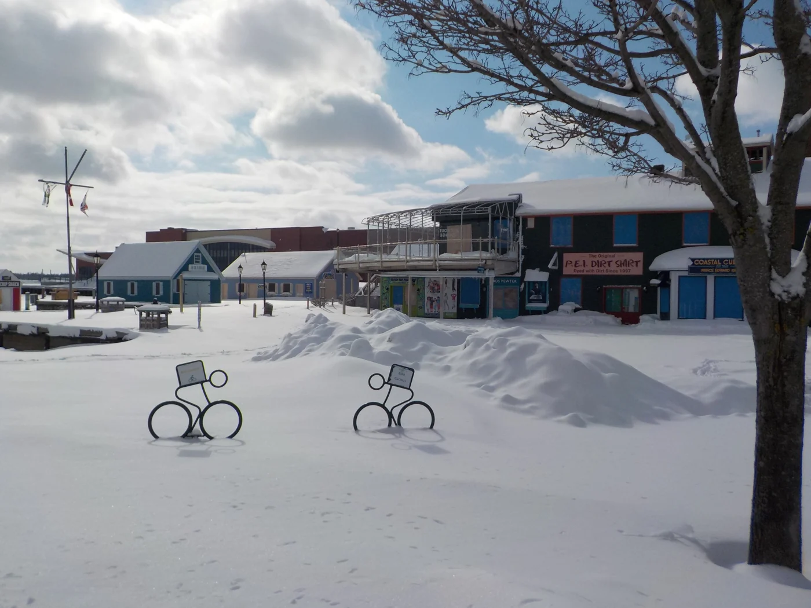
해가 짧다
PEI 정부의 계절 비교값으로 동지 무렵 일출은 07:50, 일몰은 16:30이다(하지는 05:20–21:10). 겨울에는 오후 수업이 끝날 때 이미 어둡다. 처음 가는 집이나 정류장은 밝을 때 미리 찾아가 보고, 수업 후 모임에 가기 전에 돌아오는 버스부터 확인하자.
눈 오는 날
샬럿타운은 눈이 오면 차도를 먼저 치우기 때문에 보도 제설이 늦어질 수 있다고 안내한다. 눈·진창·결빙이 있는 날에는 평소보다 일찍 나선다. 폭설로 학교가 휴교하거나 늦게 여는 소식은 학교 안전 앱 UPEI SAFE와 학교 공지로 오고, 버스 운행 여부는 T3 공지로 따로 확인한다.
일상을 만드는 장소
캠퍼스와 기숙사만 오가면 겨울이 길게 느껴진다. 일주일에 한두 번 갈 곳을 정해 두자.
- 시립 도서관(Charlottetown Library Learning Centre, 100-97 Queen St) — 와이파이와 충전, 책. 학교 밖에서 잠깐 머물 곳.
- Farmers' Market — 토요일 09:00–14:00. 현재는 임시 장소(614 North River Rd)에서 연다. 예전 주소(100 Belvedere)로 가지 말고 공식 사이트의 현 위치를 확인하자.
- Victoria Park와 해안 산책로 — 짧은 산책을 일주일 루틴에 넣기. 겨울엔 산책로 상태를 그날 확인하고, 강풍·결빙이면 짧게.
가을학기(2학기)에 간다면
단국대 2학기에 파견되면 UPEI의 가을학기(Fall, 9–12월)에 다니게 된다. 학교·기숙사·비용의 기본 구조는 같지만 마감, 날짜, 날씨, 열리는 과목, 계약 조건이 달라진다. 이 장은 위 본문(겨울학기 기준)과 달라지는 점만 모았다.
한눈에 비교
| 항목 | 겨울학기 (1–4월, 1학기 파견) | 가을학기 (9–12월, 2학기 파견) |
|---|---|---|
| UPEI 마감 | 추천·기숙사 10/1, 지원 10/30 (전년도) | 추천 6/15, 기숙사 6/1, 지원 6/30 (같은 해) |
| 입실·개강 | 1월 10일 입실, 11일 개강 | 9월 4일 입실, 8일 개강 |
| 수강 변경 마감 | 1월 22일 | 9월 18일 |
| 학기 중 휴식 | 2월 중순 휴식 기간 | 10월 12일 추수감사절 + 13–16일 휴식 (사실상 일주일) |
| 시험·퇴실 | 시험 4/16–26, 퇴실 4/27까지 | 시험 12/11–20, 가을학기 퇴실 12/21 |
| 날씨 | 1–2월 한겨울 → 3–4월 해빙기 (1월 평균 최저 −11.5°C) | 9월 최고 19°C로 시작 → 12월 최저 −6.3°C로 끝남 |
| 단풍·관광 | 단풍 없음, 명소 대부분 휴업 | 단풍철, 그린 게이블즈 10/31까지 개관 |
| 시차 | 13시간 → 3월 중순부터 12시간 | 12시간 → 11월 첫 일요일부터 13시간 |
날짜는 모두 2026–27학년도(가을은 2026년 가을) 기준이다. 실제 연도의 날짜는 해당 학년도 학사일정으로 바꾼다.
마감이 훨씬 이르다
가장 큰 차이는 지원 마감이 파견 몇 달 전인 6월이라는 점이다. 2027년 가을 파견 기준으로 기숙사 신청이 6월 1일, 단국대 추천이 6월 15일, UPEI 지원이 6월 30일 마감으로 안내되어 있다. 겨울학기처럼 '전년도 가을'에 여유 있게 준비하는 일정이 아니라, 그해 상반기 안에 단국대 선발과 어학 점수까지 끝나 있어야 한다.
2028년 가을에 간다면 2028–29 Fact Sheet가 나와야 정확한 날짜를 알 수 있지만, 같은 패턴이면 2028년 6월 초가 기숙사 마감이 된다. 단국대의 2학기 파견 모집도 그만큼 앞당겨 진행되니 국제처 공지를 일찍 확인하자.
계약 함정: 12월에 떠나면 겨울학기 비용이 청구될 수 있다
UPEI 기숙사 기본 계약은 9월부터 다음 해 4월까지 1년 단위다. 계약서 14조(d)는 10월 1일부터 12월 21일 사이에 기숙사를 떠나면 가을학기 비용은 환불되지 않고 겨울학기 비용의 50%가 청구된다고 정한다.
가을 한 학기만 있는 교환학생이 일반 계약으로 들어가면 이 조항에 걸릴 수 있다는 뜻이다. 그래서 가을 파견이면 계약서 3조의 개별 기간(custom term)을 신청할 때 "12월에 떠나는 가을 한 학기 계약이며 겨울학기 비용은 없다"는 내용을 서면으로 받아 두는 것이 특히 중요하다. 문의: residence@upei.ca
12월 일정과 겨울방학
2026년 기준 가을학기 기숙사 퇴실일은 12월 21일이고, 12월 21일부터 1월 10일까지는 겨울방학 기간이다. 이 기간에는 건물이 닫히고 식당도 운영하지 않는다. 남아 있으려면 별도 신청과 승인, CAD 250 연장비가 필요하다.
시험은 12월 11–20일 사이에 과목마다 다른 날 잡힌다. 개인 시험 일정이 나오기 전에 귀국 항공권을 사지 말고, 마지막 시험 다음 날 이후로 잡는다. 크리스마스 직전이라 항공권이 비쌀 수 있으니 시험 일정이 나오는 대로 바로 예약하자.
열리는 과목이 다르다
과목 목록(→ 부록 A.1)에서 가을 표시가 있는 과목이 가을학기 후보다. 젠더·심리 쪽에서는 이렇게 갈린다.
| 구분 | 과목 |
|---|---|
| 가을에만 기록 있음 (가을 파견의 장점) | PSY 4350 Gender and Sexuality · PSY 4620 Psychotherapy(심리치료) · PSY 3500 Clinical and Applied Psychology · PSY 3330 Ecopsychology · PSY 3740 Advanced Qualitative Research · PSY 4130 Psychology of Social Class · PSY 4630 Critical Issues · DSJS 1130 Bodies and Power · DSJS 1140 Love and Labour · DSJS 2420 Philosophies of Love and Sexuality · DSJS 3130 Disability Studies |
| 두 학기 모두 기록 | PSY 2010 · PSY 2420 · PSY 2730 · PSY 4610 · DSJS 2610 |
| 겨울에만 기록 있음 (가을에 가면 놓침) | PSY 3910 Psychology of Women and Gender · PSY 4720 Social Justice · PSY 3850 Cultural Psychology · PSY 3520 Psychological Disorders · DSJS 4060 Queer Theory · DSJS 3140 Masculinities · DSJS 2050 Sex and Culture · DSJS 1120 Identities and Place |
가을에는 임상·심리치료 계열(PSY 4620, 3500)과 젠더 상위 과목(PSY 4350)이 열리는 대신, 퀴어 이론·남성성처럼 겨울에만 열린 과목은 놓친다. PSY 4350과 4620은 선수과목(PSY 3910, 3520)이 겨울 과목이라 교수 허가가 필요할 가능성이 높다. 선수과목 없이 들을 수 있는 가을 과목은 DSJS 1130·1140·2420이다.
날씨와 짐
9월 평균 최고 19.1°C로 가볍게 시작해서, 10월 12.6°C, 11월 6.7°C로 떨어지고, 12월에는 최저 −6.3°C까지 내려간다. 도착할 때는 가을옷이면 충분하지만 11월부터는 겨울 외투와 부츠가 필요하다. 처음부터 다 가져가기보다 현지에서 11월 전에 사는 것도 방법이다. 동지 무렵인 학기 말에는 오후 4시 반이면 해가 진다.
놀거리는 훨씬 많다
가을학기의 가장 큰 장점이다. 9–10월은 섬의 관광 시즌 끝자락이라 시즌 밖 명소(→ 앤 배경지와 섬 여행)를 대부분 갈 수 있다.
- 그린 게이블즈: 2026년 기준 10월 31일까지 정규 개관. 9–10월 주말에 캐번디시·노스 러스티코와 묶어서.
- 그리니치: 해설센터는 9월 초(2026년 9월 7일)에 닫으므로 도착 직후가 아니면 센터는 어렵다. 산책로와 해변은 날씨 좋은 9월에.
- 단풍: 10월 중순 휴식 주간(추수감사절 연휴 포함)이 단풍과 섬 여행에 가장 좋은 시기다. 핼리팩스나 몬트리올까지 다녀올 수도 있다.
- 항공: 8월 말–9월 초 도착이면 포터항공의 토론토·몬트리올(YHU) 여름 노선이 아직 운행 중일 수 있다(2026년엔 9월 7일 종료).
비용
기숙사비는 한 학기 기준이라 가을이든 겨울이든 같다(Blanchard CAD 4,181.50). 1인 총예산 약 1,226만 원도 그대로 쓸 수 있다. 다만 8월 말 출국은 여름 성수기, 12월 말 귀국은 연말 성수기라 항공권은 겨울학기보다 비쌀 수 있어 미리 비교해 두자. 대신 9–10월에는 겨울옷을 늦게 사도 되고, 난방 걱정이 적은 기간이 길다.
10. 입국 서류·도착·연락처목차로
여기서는 한국 여권으로 비행기를 타고 들어가 한 학기(4개월)를 공부하는 일반적인 경우를 다룬다. 개인별 허가 조건은 다를 수 있으니 최종 판단은 캐나다 이민부(IRCC) 안내와 승인서를 따른다.
10.1. eTA
eTA(Electronic Travel Authorization, 전자여행허가)는 비자가 면제되는 나라 국민이 캐나다에 비행기로 들어가거나 경유할 때 필요한 온라인 허가다. 한국 여권 소지자도 필요하다.
- 비용: CAD 7 (환불 불가). 신용·체크카드로 낸다.
- 처리: 대부분 몇 분 안에 승인 메일이 온다. 추가 심사로 며칠 걸리는 경우도 있다.
- 유효기간: 최대 5년. 여권이 먼저 만료되면 함께 만료된다.
- 여권 연결: eTA는 여권에 전자적으로 연결된다. 신청한 그 여권으로 비행기를 타야 한다.
검색하면 대행 사이트가 많이 나오는데 수수료를 부풀려 받는다. 반드시 캐나다 정부(canada.ca) 공식 페이지에서 신청한다. 또 eTA는 비행기에 타기 위한 서류일 뿐, 학업 허가나 입국 자체를 보장하는 것은 아니다.
10.2. 학생비자(study permit)는 필요 없나
캐나다는 6개월 이하 과정이면 학생비자(study permit) 없이 공부할 수 있게 해 준다. 한 학기 교환은 이 경우에 해당하고, UPEI도 한 학기 학생에게는 방문자로 입국하는 방법과 학생비자 경로를 함께 안내한다.
두 학기 교환이라면 이야기가 다르다. UPEI는 두 학기 학생에게 학생비자를 요구하며, 입학허가서와 Exchange Letter를 받은 뒤 출국 전에 승인받아야 한다. 해외에서 학생비자를 신청하면 필요한 입국 서류(eTA 등)가 함께 발급되기도 하니 승인서를 먼저 확인한다.
캐나다가 유학생 수를 관리하려고 도입한 주정부 확인서(Provincial/Territorial Attestation Letter)다. 본교와의 교환협정으로 오고 캐나다 학교에 수업료를 내지 않는 학생은 면제 대상이다. 다만 학생비자를 신청할 경우 면제에 해당한다는 증빙을 내야 한다.
10.3. 서류 준비 순서
- 여권 유효기간이 넉넉한지, 입학허가서의 영문명·체류기간이 여권과 같은지 대조한다.
- IRCC에서 필요한 서류와 처리기간을 확인해 신청한다. 학생비자 경로라면 생체정보(biometrics)·신체검사·PAL 면제 증빙이 요구될 수 있다.
- 승인 내용, 학교 서류, 보험증서, 첫 숙소 주소를 기내 가방과 오프라인 파일 두 곳에 보관한다. 입국 심사에서 바로 보여 줄 수 있어야 한다.
문의처: 학교 이민 안내 sacheng@upei.ca · 입학·교환 서류 exchangein@upei.ca
10.4. 보험 (GuardMe)
UPEI 학생은 보통 학교 단체보험에 들어 있지만, 수업료를 내지 않는 교환학생은 그 대상이 아니다. 대신 학교가 지정한 GuardMe 응급의료보험에 직접 가입하고, 도착 전에 가입 증빙을 학교에 내야 한다.
- 가입할 때 입력하는 UPEI access code는 2456이다.
- 보험 기간을 입국일부터 귀국일까지 정확히 맞춘다. 하루라도 비면 그날 사고는 보장받지 못한다.
- 청구 방법과 보험사 긴급 연락처를 휴대폰에 저장해 둔다.
- 응급 위주의 보험이다. 원래 앓던 질환, 정기적으로 먹는 약, 상담 치료가 보장되는지는 각자 약관에서 확인한다.
10.5. 일할 수 있나
결론부터 말하면 못 한다. 방문자 신분으로 입국한 학생은 캐나다에서 일할 수 없다. 학생비자가 있어도 교내·교외 근로 자격은 별개다. 교외 근로는 정규 등록, 6개월 이상이면서 학위·디플로마·자격증으로 이어지는 과정, 허가증의 근로 조건, 사회보장번호(SIN) 같은 요건을 갖춰야 한다. 일반 유학생의 근로시간 규정만 보고 교환학생도 될 거라고 가정하지 말자. 현지 아르바이트 수입 없이 예산을 짠다.
10.6. 도착 후
첫 주
| 언제 | 할 일과 이유 |
|---|---|
| 도착 전 | 공항 도착편 → 공항 이동 → 열쇠 받기를 한 줄로 연결해 둔다. 밤 도착이나 항공 지연에 대비해 연락처를 오프라인으로 저장한다. |
| 첫날 | 방 상태와 원래 있던 파손을 사진 찍어 신고한다. 침구·수건·먹을 것부터 산다. 방 번호와 주소를 적어 둔다(보험·학교 연락에 필요). |
| 다음 평일 | 교환학생 담당자 체크인 → 학생증(Campus Card) 발급 → MyUPEI·Moodle 로그인 → 보험 증빙과 미납 청구 확인. |
| 첫 수업 주 | 모든 강의실을 직접 찾아가 본다. 과제·시험 날짜를 달력에 옮긴다. 바꿀 과목은 변경 마감 전에 단국대 인정 여부까지 확인한다. |
첫 주에는 통학·장보기·연락 수단만 익히고, 둘째 주부터 매주 반복해서 만나는 수업 스터디·동아리·모임을 하나씩 만들어 보자. 둘이 함께 갔다면 각자 혼자 가는 정기 일정도 하나씩 있는 게 좋다. 둘만의 생활로 닫히지 않게 하는 장치다.
학생증 (Campus Card)
학생증은 그냥 신분증이 아니라 생활 도구다. 버스 승차권(UPASS), 건물 출입, 식당 결제, 도서관, 체육관이 모두 이 카드로 된다. 신분증을 들고 체육관(Chi-Wan Young Sports Centre)이나 PAC 109S호(평일 08:00–16:00)에서 발급받는다. 발급받은 뒤엔 버스·출입·식사·도서관에서 카드가 실제로 잘 작동하는지 하나씩 확인해 보자.
교통
한국에서 샬럿타운까지
샬럿타운 공항(YYG)은 작은 공항이라 한국에서 오는 직항이 없다. 토론토·몬트리올·오타와 같은 대도시에서 한 번 더 갈아탄다. 1년 내내 다니는 노선은 에어캐나다의 토론토·몬트리올편과 포터항공의 오타와편이 중심이고, 포터의 토론토·몬트리올(YHU)편과 WestJet·Flair는 여름 계절편이다. 1월에는 폭설로 지연·결항이 잦으니 환승 시간을 넉넉히(3시간 이상) 잡자.
공항에서 숙소까지
UPEI가 공항 픽업을 운영하는 학기도 있다. 그 학기에 운영하는지, 사전 승인이 필요한지 확인하고, 픽업 안내 메일·숙소 주소·늦은 입실 연락처를 저장해 둔다. 픽업이 없으면 공항 택시를 탄다. 택시는 도착 출입구 옆에서 타고, 샬럿타운 구역 기본요금은 CAD 20이다. 인원 등 추가 조건은 현장에서 확인한다.
핼리팩스 공항(YHZ)으로 들어오는 방법도 있다. 다만 Maritime Bus의 공항 급행 셔틀은 없어졌고, 정규 버스가 공항에 서는데 미리 예약한 승객이 있을 때만 정차한다. 입국 심사와 지연을 감안해 예약하고, 샬럿타운 터미널(7 Mt. Edward Road)에서 숙소까지 이동도 따로 생각한다.
시내버스 (T3)
정규(full-time) UPEI 학생은 버스 이용권 UPASS가 학생 비용에 포함되어 있다. 교환학생도 학생증에 적용되는지 첫 주에 확인한다. 안 되면 현금 CAD 2를 내는데 거스름돈이 없으니 정확한 금액을 준비한다. 환승하려면 처음 탈 때 기사에게 말한다. 정류장에는 5분 일찍 나가는 게 T3의 안내다.
| 노선 | 주요 연결 | 운행 요일 |
|---|---|---|
| 1 | 다운타운 – University Ave – UPEI – Royalty Crossing 쇼핑몰. 가장 중요한 생활 노선 | 월–일 |
| 2 / 3 | West Royalty / Sherwood–St. Peters Rd | 월–일 |
| 11 | 공항 – Brackley Point Road | 월–일 |
| 7B / 7K | 강 건너 Stratford의 Bunbury / Kinlock | 월–토 (일요일 없음) |
요일별·시간대별 배차와 휴일 운행은 공식 시간표로 확인한다. 시내버스 밖의 섬 각지는 Rural Transit을 따로 예약·확인한다.
장보기
UPEI(550 University Ave)에서 University Avenue를 따라 남쪽으로 내려가면 다운타운과 항구, 북쪽으로 올라가면 Royalty Crossing 쇼핑몰이 나온다. 1번 버스가 이 축을 오가고, 마트도 대부분 이 길에 있다.
| 가게 | 주소 | 용도 |
|---|---|---|
| Sobeys | 400 University Ave | 캠퍼스 남쪽의 일반 마트. 일요일은 정오에 연다. |
| Royalty Crossing | 670 University Ave | 쇼핑몰, 버스 환승 지점 |
| Walmart | 80 Buchanan Dr | 식료품·침구·주방·생활용품. 입실 첫 장보기에 좋다. |
| Panda Mart | 306 University Ave | 아시아 마트. 라면·간장·쌀·냉동식품 등 |
| Spring Park Plaza | 339 University Ave | 아시아 마트가 입점한 상가 |
아시아 마트 두 곳은 원래 가이드북에 없던 정보라 따로 찾아 보강했다. 가기 전에 영업 여부를 확인하자.
처음에는 2–3일 먹을 만큼만 사서 냉장고 공간과 식사 패턴을 파악하는 게 좋다. 주말·공휴일 영업시간도 미리 확인한다.
통신, 은행, 세탁
- 휴대폰: 현지 번호나 eSIM이 필요한지 정하고, 월 요금 외에 개통비·세금·해지 조건을 비교한다. 그리고 한국 번호를 유지할 방법도 정해야 한다. 한국 본인인증 문자를 받아야 하기 때문이다.
- 은행: 시민권자가 아니어도 적절한 신분 서류로 계좌를 만들 수 있다. 여권·주소·학교 증빙 등 지점에서 요구하는 원본을 확인하고, 무료 기간이 끝나는 시점과 귀국 후 해지 방법을 미리 묻는다.
- 세탁: 세탁기 위치, 결제 방식, 1회 요금, 건조기 유무를 입실할 때 묻는다. 세탁이 끝나는 시간에 알람을 맞춰 두면 공용 시설을 쓸 때 서로 편하다.
기숙사 대신 교외에 산다면
기숙사 배정이 안 되거나 교외 숙소를 알아볼 경우를 위한 정보다. 지역 이름보다 문 앞에서 강의실까지의 실제 동선으로 비교해야 한다.
| 생활권 | 생활의 중심 | 차 없이 살 때 확인할 점 |
|---|---|---|
| 캠퍼스·University Ave | 수업·도서관·운동시설, 1번 버스 | 집 출입구에서 강의실까지 걸어 보기. 큰 도로 건너는 위치 |
| 다운타운·워터프런트 | Queen St·Victoria Row·항구 | 통학과 저녁 귀가편 추가 계산. 시내와 캠퍼스는 다른 생활권 |
| Sherwood·Parkdale | 캠퍼스 동쪽, Mount Edward·St. Peters Rd | 3번 정류장과 진행 방향. 같은 지역이어도 걷는 거리가 다르다 |
| West Royalty | 쇼핑몰·큰 상점, 북서쪽 주거지 | 쇼핑몰 근처 집과 안쪽 주거지 구분. 2번 환승 필요 여부 |
| Stratford | 강 건너 Bunbury·Kinlock | 7B·7K 연결과 환승. 월–토만 다니니 일요일 대안 필요 |
계약 전에 지도 앱으로 네 번의 길찾기를 해 보자: 평일 첫 수업, 평일 저녁 귀가, 토요일 장보기, 일요일 외출. 집주인에게는 난방·전기·인터넷 포함 여부, 세탁비, 가구·침구, 눈 치우는 책임, 계약 종료일을 묻는다.
UPEI는 실제로 집을 확인하고 서명된 계약서를 받기 전에 돈을 보내지 말라고 경고한다. 교외 주거 상담: offcampushousing@upei.ca · +1 902-894-2850
10.7. 비상 연락처
캐나다 번호는 +1부터 저장한다. 급한 상황에서는 이메일 답장을 기다리지 말고 전화한다.
| 상황 | 연락처 |
|---|---|
| 보안실 · 밤길 동행(Safe Walk) | +1 902-566-0384 · security@upei.ca |
| 교환학생 지원·수강·보험 | exchangein@upei.ca |
| 기숙사 계약·배정 | residence@upei.ca · +1 902-566-0330 |
| 건강센터 예약 | healthcentre@upei.ca · +1 902-566-0616 |
| 학생 상담 예약 | studentserv@upei.ca · +1 902-566-0488 |
| 차별·괴롭힘 상담 | hro@upei.ca · +1 902-566-0610 |
| 성폭력 관련 지원 | sv-pro@upei.ca · +1 902-620-5090 |
| 교외 주거 상담 | offcampushousing@upei.ca · +1 902-894-2850 |
| 이민 안내 | sacheng@upei.ca |
Safe Walk는 보안 직원이 캠퍼스 안 건물·주차장 사이를 같이 걸어 주는 서비스다. 긴급 업무가 우선이라 기다릴 수 있다. 밤에 불편하거나 혼자 이동하기 부담되면 보안실에 요청하면 된다.
각자 휴대폰에 함께 저장해 둘 것: 기숙사 이름·방 번호·주소, GuardMe 증서 번호와 보험사 긴급 연락처, 단국대 국제처 담당자, 항공 예약 번호, 서로의 수업 시간표.
10.8. 메일 템플릿
둘이 같은 아파트를 요청할 때
기숙사 신청 전에 보낸다. 방·욕실 공유 방식, 배정 선택지, 요청 내용에 접근하는 사람, 필요한 서류를 먼저 확인하는 메일이다.
To: residence@upei.ca Subject: Two exchange students — shared apartment request (Winter 2028) Hello Residence Services, We are two exchange students from Dankook University coming for Winter 2028. We would like to request the same Blanchard 2-bedroom apartment as mutual roommates (PAC 2-bedroom as our second choice). Could you tell us: - how mutual and gender-inclusive roommate requests are handled, - whether a custom one-term contract applies to exchange students, - and who can see the information in our requests? Please let us know what information is necessary before we send personal details. Thank you, [Name 1 / ID] and [Name 2 / ID]
신고 전에 상담만 받고 싶을 때
사건 내용을 처음부터 쓰지 않고, 상담 범위와 안전한 연락 방법부터 조율하는 메일이다. 즉각적인 위험이 있으면 메일 대신 긴급 연락처로 전화한다.
To: sv-pro@upei.ca Subject: Request for a confidential support appointment Hello SV-PRO, I am an exchange student and would like support for an experience affecting my studies or living situation. I have not decided whether to make a formal complaint. Before I share details, could you explain confidentiality, its limits, and available support? Please contact me by [email/phone].
부록 A. 과목 사전목차로
관심 분야로 추린 과목 전체와 학기별 개설 기록이다. 결정용 요약은 5장과 홈의 과목 찾기에 있다.
과목 목록
심리·젠더 관련 과목을 2028년 겨울학기에 열릴 가능성이 높은 순으로 묶었다. 겨울은 최근 겨울학기(1–4월)에 열린 기록이 있다는 뜻이고, 가을은 가을학기 기록이다. DSJS는 Diversity and Social Justice Studies(다양성·사회정의학)의 약자로, 젠더·인종·장애·섹슈얼리티를 사회정의 관점에서 다루는 학제 과목군이다.
A. 명시된 선수과목 없음 — 교환 수강 승인 필요
| 과목 | 무엇을 배우나 | 개설 기록 |
|---|---|---|
| DSJS 1120 Identities and Place | 같은 장소라도 누가 이용하느냐에 따라 편안함, 이동의 자유, 소속감이 달라지는 이유를 본다. 주거·학교·일터·국경 같은 공간에서 젠더·인종·장애·섹슈얼리티가 포함과 배제로 연결되는 방식을 다룬다. | 겨울 |
| DSJS 2050 Sex and Culture | 섹슈얼리티가 문화와 사회에 따라 어떻게 다르게 이해되고 규정되는지. | 겨울 |
| DSJS 2160 Rebel Kids and Wild Futures | 청소년과 사회정의. 어린 세대가 만들어 가는 다른 미래에 대한 과목. | 겨울 |
| DSJS 1150 Bromance | 남성 사이의 우정과 친밀성이 사회정의·남성성과 어떻게 연결되는지. | 기록 없음 |
| DSJS 1130 Bodies and Power | 운동·식사·머리 모양처럼 개인의 선택처럼 보이는 몸 관리에도 평가와 규칙이 작용하는 방식. | 가을 |
| DSJS 1140 Love and Labour | 사랑과 돌봄, 노동과 젠더. | 가을 |
| DSJS 2420 Philosophies of Love and Sexuality | 사랑과 섹슈얼리티의 철학 (PHIL 2420과 교차 개설). | 가을 |
B. 조건이 가벼움 — 학년 조건 또는 교수 허가
| 과목 | 무엇을 배우나 | 조건 | 개설 기록 |
|---|---|---|---|
| DSJS 3140 Masculinities | 남성성이 하나가 아니라 여러 형태로 만들어지는 과정. | 2학년 이상 또는 교수 허가 | 겨울 |
| DSJS 4060 Queer Theory | 퀴어 이론과 정체성 이론. | 3학년 이상 또는 교수 허가 | 겨울 |
| DSJS 2610 Sex, Gender, and Society | 신체의 차이와 사회가 기대하는 역할을 구분하면서, 둘이 실제 생활에서 어떻게 이어지는지 문화 비교로 본다. 온라인 분반 기록. | DSJS 1000번대 1과목 또는 교수 허가 | 겨울 가을 |
| DSJS 3130 Disability Studies | 장애를 개인의 몸이 아니라 환경과 제도가 만드는 장벽까지 함께 보는 관점. | 2학년 이상 또는 교수 허가 | 가을 |
C. 심리학 2000번대 — 심리학개론 이수자
| 과목 | 내용 | 개설 기록 |
|---|---|---|
| PSY 2010 Developmental Psychology | 발달심리학. 생애 전반의 발달. | 겨울 가을 |
| PSY 2420 Intro. to Social Psychology | 사회심리학 입문. 관계와 집단 속의 마음. | 겨울 가을 |
| PSY 2730 Qualitative Methods and Analysis | 질적 연구방법과 분석. 면담·주제분석 등. | 겨울 가을 |
선수과목은 PSY 1010·1020(심리학개론 1·2)이다. PSY 2420은 사회학개론(SOC 1010·1020) 경로도 적혀 있다. 한국에서 들은 심리학개론으로 대신 인정받아야 한다.
D. 심리학 3000–4000번대 — 교수 허가가 필요할 가능성이 큼
공통 선수과목: 심리학개론 + 연구방법 과목(전공자 PSY 2700·2730·2750 / 비전공자 PSY 2510). 예외적인 경우 3·4학년 비전공자가 교수에게 선수과목 면제를 신청할 수 있다고 안내된다. 신청할 수 있다는 것과 승인되는 것은 별개다.
| 과목 | 내용 | 비고 | 개설 기록 |
|---|---|---|---|
| PSY 3910 | 여성과 젠더의 심리학. 여성의 발달과 사회화, 개인·관계·사회 수준의 젠더. | 교수 허가 경로 있음 | 겨울 |
| PSY 4720 | 심리학과 사회정의. 해방·탈식민 관점의 심리학. | PSY 3330 또는 3910 포함, 교수 허가 경로 | 겨울 |
| PSY 3850 | 문화심리학. 문화와 자아·정체성. | 겨울 | |
| PSY 3520 | 심리장애. | 2027 겨울 개설 계획(교수 모집공고) | 겨울 |
| PSY 3930 | 건강심리학. | 2027 겨울 개설 계획 | 겨울 |
| PSY 3510 | 성격 이론. | 겨울 | |
| PSY 3090 | 성인 발달. | 2027 겨울 개설 계획 | 겨울 |
| PSY 4610 | 심리평가. 면접·측정. | PSY 3520 선수 또는 교수 허가 | 겨울 가을 |
| PSY 4350 | 젠더와 섹슈얼리티의 개인·사회적 구성. | PSY 2420·3910 등 추가 선수 | 가을 |
| PSY 4370 | 젠더 기반 폭력, 관계·제도와 피해 경험. | 기록 없음 |
심리학·DSJS 전체 목록과 타과 관련 과목
2026–27 공식 카탈로그의 심리학 58코드와 DSJS 57코드를 모두 대조했다. 두 전공 사이에 중복 등재된 6개 수업은 한 항목으로 묶고, 사회학·종교학의 관련 5과목을 더해 114개 수업 항목으로 정리했다. 기존 목록 40개에서 74개가 늘었다. Honours 전용 3과목과 개별연구·실습도 빠뜨리지 않고, 제한을 따로 적었다.
DSJS는 젠더뿐 아니라 인종·장애·환경·사회정의도 다루는 전공이다. 젠더·성 관련 필터는 설명에 그 주제가 확인되는 과목만 보여 준다. 과목을 누르면 공식 설명 요약, 이해용 예시, 선수요건과 출처가 펼쳐진다. 카탈로그 등재는 실제 학기 개설을 뜻하지 않는다. 연도 배지는 공개된 실제 분반 기록이 있는 항목에만 붙였으며, 교수 채용공고의 조건부 개설 계획은 배지에서 제외했다.
부전공에 속한 과목도 개별 수강을 신청할 수 있다. Course Request Form에서 과목별 승인을 받고 선수요건을 심사받는 방식이다. 이 목록의 일반 과목은 그 신청 후보이며, Honours 전용 과목은 일반 교환 수강 후보에서 제외한다. 원하는 주제로 개별연구를 하려면 지도교수와 먼저 합의해야 한다.
PSY1010 · 심리학개론 IIntroduction To Psychology: Part I2025 가을2026 가을
공식 설명 요약
연구방법, 행동의 생물학적 기초, 감각·지각, 학습·동기, 기억·인지를 소개한다.
같은 장면을 보고도 서로 다르게 기억하는 이유를 감각과 기억의 과정으로 나누어 생각해 본다.
선수요건·신청 경로
선수과목 표기 없음.
개설·수업 방식
2026–27 카탈로그 등재 확인. 2025·2026·2027 실제 분반의 학기·대면 여부는 이 점검에서 추가 확인하지 않았다.
PSY1020 · 심리학개론 IIIntroduction To Psychology: Part Ii2025 겨울2026 겨울
공식 설명 요약
발달, 성격, 정서, 적응과 치료, 사회심리학을 소개한다.
친구 앞의 모습과 혼자 있을 때의 모습이 다른 현상을 성격과 사회적 상황으로 설명해 본다.
선수요건·신청 경로
PSY 1010.
개설·수업 방식
2026–27 카탈로그 등재 확인. 2025·2026·2027 실제 분반의 학기·대면 여부는 이 점검에서 추가 확인하지 않았다.
PSY2010 · 발달심리학Developmental Psychology2025 가을2025 겨울2026 가을2026 겨울
공식 설명 요약
생애의 신체·인지·사회정서 발달과 교육·정책·상담·건강의 적용을 다룬다.
사람이 태어나고 성장하며 나이 드는 동안 몸, 생각, 감정, 관계가 어떻게 바뀌는지를 함께 살펴보는 과목이다. 발달을 단순한 능력 증가로 보기보다 생애 단계와 환경 속에서 나타나는 변화와 차이를 이해하는 데 초점을 둔다.
상황 가상의 유아가 친구와 장난감을 나누는 이유를 설명할 때 규칙보다 상대의 감정에 주목하기 시작한다고 가정한다.
생각해 볼 질문 이 변화에는 생각하는 능력과 사회정서적 이해가 어떻게 함께 작용할까?
상황 같은 연령의 가상 학생 두 명이 학교 전학 이후 서로 다른 방식으로 친구 관계를 형성한다고 가정한다.
생각해 볼 질문 발달을 설명할 때 나이 외에 어떤 경험과 환경을 비교해야 할까?
선수요건·신청 경로
PSY 1010·1020.
개설·수업 방식
아래 실제 분반 기록에서 확인한다. 기록이 있는 해와 학기에 한하며 2028년 개설표는 아니다.
학기별 근거 4건
- 2025W · 실제 분반 기록 — UPEI 공개 Moodle의 학기별 분반·수업 일정: 2025W Developmental Psychology (PSY-2010-01); 06-01-2025-31-03-2025 Lecture Monday 01:30PM - 04:20PM, Kelley Memorial Bldg, Room 237
- 2025F · 실제 분반 기록 — UPEI 공개 Moodle의 학기별 분반·수업 일정: 2025F Developmental Psychology (PSY-2010-01); 04-09-2025-04-12-2025 Lecture Tuesday, Thursday 02:30PM - 03:45PM, Performing Arts Ctr, Room 110S
- 2026W · 실제 분반 기록 — UPEI 공개 Moodle의 학기별 분반·수업 일정: 2026W Developmental Psychology (PSY-2010-01); 12-01-2026-13-04-2026 Lecture Monday 11:30AM - 02:15PM, Kelley Memorial Bldg, Room 237
- 2026F · 실제 분반 기록 — UPEI 공개 Moodle의 학기별 분반·수업 일정: 2026F Developmental Psychology (PSY-2010-01); 08-09-2026-08-12-2026 Lecture Tuesday, Thursday 10:00AM - 11:15AM, Kelley Memorial Bldg, Room 237
PSY2120 · 약물과 행동Drugs And Behaviour2025 가을2025 겨울2026 가을2026 겨울
공식 설명 요약
중독·내성·금단과 향정신성 약물이 신경계와 행동에 미치는 영향을 다룬다.
같은 양의 카페인에도 시간이 지나면 효과가 달라지는 현상을 내성과 신경 작용으로 살펴본다.
선수요건·신청 경로
PSY 1010·1020.
개설·수업 방식
2026–27 카탈로그 등재 확인. 2025·2026·2027 실제 분반의 학기·대면 여부는 이 점검에서 추가 확인하지 않았다.
PSY2320 · 심리학 특수주제 2000Special Topics개설 기록 미확인
공식 설명 요약
교수 또는 방문강사가 정한 심리학의 전문 주제를 다룬다. 주제가 다르면 반복 이수가 가능하다.
같은 과목번호라도 그 학기에 붙은 부제와 강의계획서를 보고 연구주제를 고른다. 특정 젠더 주제가 정해진 과목은 아니다.
선수요건·신청 경로
PSY 1010·1020.
개설·수업 방식
2026–27 카탈로그 등재 확인. 2025·2026·2027 실제 분반의 학기·대면 여부는 이 점검에서 추가 확인하지 않았다.
PSY2420 · 사회심리학 입문Introduction to Social Psychology2025 가을2025 겨울2026 가을2026 겨울
공식 설명 요약
사회환경이 사고·감정·행동에 미치는 영향과 태도·젠더·동조·공격·도움 등을 다룬다.
개인의 생각과 행동이 다른 사람의 존재, 집단의 분위기, 사회적 기대에 따라 어떻게 달라지는지 살펴보는 과목이다. 태도나 도움 행동처럼 익숙한 일을 통해 사람의 성향과 상황의 영향을 구분해 생각한다.
상황 가상의 회의에서 한 학생이 혼자 생각할 때와 모두의 의견을 들은 뒤에 서로 다른 답을 낸다고 가정한다.
생각해 볼 질문 답의 변화에는 새로운 정보와 집단에 맞추려는 마음이 각각 어떻게 작용했을까?
상황 가상의 캠퍼스에서 도움을 요청하는 사람을 한 명이 볼 때와 여러 명이 함께 볼 때 반응이 다르다고 가정한다.
생각해 볼 질문 주변 사람의 수는 누가 행동해야 한다고 느끼는 판단과 어떻게 연결될까?
선수요건·신청 경로
원문: PSY 1010 and 1020 and/or SOC 1010 and 1020. 이 and/or 표기를 임의로 등가조건으로 바꾸지 않았으며 실제 인정 조합 확인 필요.
같은 수업의 다른 코드 SOC2820
SOC 2820 경로에는 SOC 1010이 선수과목으로 제시돼 있다.
개설·수업 방식
아래 실제 분반 기록에서 확인한다. 기록이 있는 해와 학기에 한하며 2028년 개설표는 아니다.
학기별 근거 5건
- 2025W · 실제 분반 기록 — UPEI 공개 Moodle의 학기별 분반·수업 일정: 2025W Intro. to Social Psychology (PSY-2420-01); 06-01-2025-04-04-2025 Lecture Monday, Wednesday, Friday 11:30AM - 12:20PM, Performing Arts Ctr, Room 110S
- 2025F · 실제 분반 기록 — UPEI 공개 Moodle의 학기별 분반·수업 일정: 2025F Intro. to Social Psychology (PSY-2420-01); 04-09-2025-04-12-2025 Web Tuesday, Thursday 11:30AM - 12:45PM, Room to be Announced
- 2026W · 실제 분반 기록 — UPEI 공개 Moodle의 학기별 분반·수업 일정: 2026W Intro. to Social Psychology (PSY-2420-01); 12-01-2026-14-04-2026 Web Days to be Announced, Times to be Announced, Room to be Announced
- 2026S · 실제 분반 기록 — UPEI 공개 Moodle의 학기별 분반·수업 일정: 2026S Intro. to Social Psychology (PSY-2420-01); 29-06-2026-06-08-2026 Web Days to be Announced, Times to be Announced, Room to be Announced
- 2026F · 실제 분반 기록 — UPEI 공개 Moodle의 학기별 분반·수업 일정: 2026F Intro. to Social Psychology (PSY-2420-02); 08-09-2026-08-12-2026 Lecture Tuesday, Thursday 04:00PM - 05:15PM, Kelley Memorial Bldg, Room 237
PSY2510 · 심리학 연구 비판적으로 읽기Thinking Critically About Psychological Research2025 가을2026 가을
공식 설명 요약
비전공자를 위한 연구 읽기 과목이다. 연구의 전제, 표집·편향, 상관과 인과, 조작적 정의와 실험 통제를 검토한다.
SNS에서 본 “어떤 습관이 행복을 높인다”는 주장이 상관관계만으로 인과를 말하는지 점검한다.
선수요건·신청 경로
비심리학 전공자 대상. PSY 1010·1020. PSY 2700·2730·2750 등의 기이수·동시수강 제한이 있다.
개설·수업 방식
2026–27 카탈로그 등재 확인. 2025·2026·2027 실제 분반의 학기·대면 여부는 이 점검에서 추가 확인하지 않았다.
PSY2600 · 감각과 지각Sensation And Perception2025 가을2026 가을
공식 설명 요약
시각·청각·촉각·화학감각 등 감각 정보가 신경 신호로 바뀌고 뇌에서 해석되는 원리를 다룬다.
향이나 소리가 음식의 느낌을 어떻게 바꾸는지 감각 정보의 결합으로 생각해 본다.
선수요건·신청 경로
PSY 1010·1020. 구 PSY 2610·2620 기이수 시 중복학점 불가.
개설·수업 방식
2026–27 카탈로그 등재 확인. 2025·2026·2027 실제 분반의 학기·대면 여부는 이 점검에서 추가 확인하지 않았다.
PSY2630 · 음악심리학Psychology Of Music2025 겨울2026 겨울
공식 설명 요약
음악의 기억·정서·기대, 연주와 창의성, 음악 발달과 문화 차이를 인지심리학으로 살펴본다.
영화 장면은 같아도 배경음악을 바꾸면 감정이 달라지는 이유를 분석한다.
선수요건·신청 경로
PSY 1010·1020 또는 교수 허가. PSY 4120 기이수·동시수강 제한. MUS 2630 교차등재.
개설·수업 방식
2026–27 카탈로그 등재 확인. 2025·2026·2027 실제 분반의 학기·대면 여부는 이 점검에서 추가 확인하지 않았다.
PSY2700 · 양적 연구방법Quantitative Research Methods2025 가을2026 가을
공식 설명 요약
실험·준실험·조사·관찰 연구, 신뢰도와 타당도, 조작적 정의, 양적 연구윤리를 배운다.
수면 시간과 기분의 관계를 조사할 때 무엇을 측정하고 어떤 변수를 통제할지 설계한다.
선수요건·신청 경로
PSY 1010·1020.
개설·수업 방식
2026–27 카탈로그 등재 확인. 2025·2026·2027 실제 분반의 학기·대면 여부는 이 점검에서 추가 확인하지 않았다.
PSY2710 · 행동과학 통계Statistics For The Behavioural Sciences2025 가을2026 가을
공식 설명 요약
간호학 학생을 위한 응용통계 입문이다. 기술통계, 확률, 가설검정, 상관과 분산분석을 다룬다.
두 집단의 점수 차이가 우연으로 설명되는 범위인지 통계적으로 판단한다.
선수요건·신청 경로
간호학부 재학생+PSY 1010·1020 또는 교수 허가. 심리학 주·부전공용 과목이 아니며 PSY 2750·2790과 중복학점 불가.
개설·수업 방식
2026–27 카탈로그 등재 확인. 2025·2026·2027 실제 분반의 학기·대면 여부는 이 점검에서 추가 확인하지 않았다.
PSY2730 · 질적 연구방법과 분석Qualitative Methods and Analysis2025 가을2025 겨울2026 가을2026 겨울
공식 설명 요약
면접·포커스그룹·관찰과 근거이론·현상학, 연구윤리 및 APA 보고를 다루는 질적연구 입문이다.
질적 연구는 사람의 경험을 숫자로만 줄이기보다 말과 행동, 맥락을 통해 이해하려는 연구 방식이다. 이 과목은 면접·집단 대화·관찰로 자료를 모으고 의미의 패턴을 분석하며, 참여자 보호와 연구 보고의 기본을 익히는 입문으로 이해할 수 있다.
상황 가상의 연구자가 신입생의 적응을 알아보려고 만족도 점수 대신 첫 한 달의 경험을 개방형 면접으로 듣는다고 가정한다.
생각해 볼 질문 정해진 선택지로는 놓칠 수 있는 경험을 듣기 위해 어떤 질문과 후속 질문이 필요할까?
상황 가상의 포커스그룹에서 통학 문제에 대한 한 참여자의 말에 다른 사람들이 동의하거나 반박한다고 가정한다.
생각해 볼 질문 서로의 말에 반응하는 과정은 개별 면접과 다른 어떤 자료를 만들어 낼까?
선수요건·신청 경로
PSY 1010·1020. PSY 2780 기이수자는 PSY 2730 학점 중복 취득 불가.
개설·수업 방식
아래 실제 분반 기록에서 확인한다. 기록이 있는 해와 학기에 한하며 2028년 개설표는 아니다.
학기별 근거 5건
- 2025S · 실제 분반 기록 — UPEI 공개 Moodle의 학기별 분반·수업 일정: 2025S Qualitative Methods & Analysis (PSY-2730-01); 12-05-2025-18-06-2025 Lecture Monday, Wednesday 08:30AM - 11:15AM, SDU Main Bldg, Room 213
- 2025F · 실제 분반 기록 — UPEI 공개 Moodle의 학기별 분반·수업 일정: 2025F Qualitative Methods & Analysis (PSY-2730-01); 08-09-2025-01-12-2025 Lecture Monday 08:30AM - 11:15AM, Kelley Memorial Bldg, Room 237
- 2026W · 실제 분반 기록 — UPEI 공개 Moodle의 학기별 분반·수업 일정: 2026W Qualitative Methods & Analysis (PSY-2730-01); 13-01-2026-14-04-2026 Lecture Tuesday, Thursday 02:30PM - 03:45PM, Performing Arts Ctr, Room 110S
- 2026S · 실제 분반 기록 — UPEI 공개 Moodle의 학기별 분반·수업 일정: 2026S Qualitative Methods & Analysis (PSY-2730-01); 12-05-2026-18-06-2026 Lecture Tuesday, Thursday 08:30AM - 11:15AM, McDougall Hall, Room 242
- 2026F · 실제 분반 기록 — UPEI 공개 Moodle의 학기별 분반·수업 일정: 2026F Qualitative Methods & Analysis (PSY-2730-01); 09-09-2026-09-12-2026 Lecture Wednesday 11:30AM - 02:15PM, Faculty Sustainable Design Eng, Room 128B
PSY2750 · 양적 자료 분석Quantitative Analysis2025 겨울2026 겨울
공식 설명 요약
기술통계와 추론통계, 카이제곱·상관·t검정·일원분산분석 및 APA 결과 보고를 익힌다.
상담 전후 점수 변화에 맞는 분석법을 고르고 표와 결과 문장으로 정리한다.
선수요건·신청 경로
PSY 1010·1020·2700. 구 PSY 2790과 중복학점 불가.
개설·수업 방식
2026–27 카탈로그 등재 확인. 2025·2026·2027 실제 분반의 학기·대면 여부는 이 점검에서 추가 확인하지 않았다.
PSY2910 · 현대 정신분석 사상Contemporary Psychoanalytic Thought2025 겨울
공식 설명 요약
프로이트의 무의식·섹슈얼리티·사례·서사와 여성관 및 문화적 유산을 다룬다.
정신분석 사상은 사람이 자신도 분명히 알지 못하는 동기와 갈등을 어떤 이야기로 이해해 왔는지 살펴보는 틀이다. 이 과목에서는 프로이트의 무의식과 섹슈얼리티, 사례 서술을 역사적 맥락과 여성관에 대한 비판, 문화적 영향과 함께 검토하는 것으로 이해할 수 있다.
상황 가상의 소설 인물이 원하지 않는다고 말한 선택을 반복하지만 그 이유를 잘 설명하지 못한다고 가정한다.
생각해 볼 질문 정신분석적 해석은 인물의 말과 행동 사이의 차이를 어떤 동기나 갈등으로 읽을까?
상황 가상의 독자가 오래된 정신분석 사례를 읽으며 사례 속 당사자의 말과 해석자의 설명을 구분해 표시한다고 가정한다.
생각해 볼 질문 당사자의 경험과 사례 작성자의 해석은 같은 정도의 근거로 읽어도 될까?
선수요건·신청 경로
PSY 1010·1020.
개설·수업 방식
아래 실제 분반 기록에서 확인한다. 기록이 있는 해와 학기에 한하며 2028년 개설표는 아니다.
학기별 근거 1건
- 2025W · 실제 분반 기록 — UPEI 공개 Moodle의 학기별 분반·수업 일정: 2025W Contemp Psychoanalytic Thought (PSY-2910-01); 07-01-2025-03-04-2025 Lecture Tuesday, Thursday 02:30PM - 03:45PM, Faculty Sustainable Design Eng, Room 128B
PSY3020 · 심리 개념과 실천의 역사Modern Psychological Concepts And Practice In Historical Perspective2025 겨울2026 겨울
공식 설명 요약
현재 쓰는 심리학 개념과 방법이 만들어진 역사를 검토한다. 자아·젠더·섹슈얼리티의 역사는 선택 가능한 주제에 포함된다.
시대에 따라 “정상적 성격”이나 “자아”를 설명하는 말이 왜 바뀌었는지 자료를 비교한다. 실제 주제는 담당교수에 따라 달라진다.
선수요건·신청 경로
PSY 1010·1020와 연구방법 선수과목. 심리학 전공자는 PSY 2700·2730·2750(또는 구 PSY 2780·2790), 비전공자는 PSY 2510. PSY 2020을 권장한다.
개설·수업 방식
2026–27 카탈로그 등재 확인. 2025·2026·2027 실제 분반의 학기·대면 여부는 이 점검에서 추가 확인하지 않았다.
PSY3030 · 노년심리학Psychology Of Aging2025 겨울2026 겨울
공식 설명 요약
성인기 후반의 신체적·심리사회적 변화와 노화 연구를 검토한다.
은퇴가 일상의 역할과 자기평가를 어떻게 바꾸는지 노년기 발달 이론으로 생각해 본다.
선수요건·신청 경로
PSY 1010·1020와 연구방법 선수과목. 심리학 전공자는 PSY 2700·2730·2750(또는 구 PSY 2780·2790), 비전공자는 PSY 2510. PSY 2010 추가 또는 교수 허가.
개설·수업 방식
2026–27 카탈로그 등재 확인. 2025·2026·2027 실제 분반의 학기·대면 여부는 이 점검에서 추가 확인하지 않았다.
PSY3050 · 청소년 발달과 적응Adolescent Development And Adjustment2025 가을2026 가을
공식 설명 요약
사춘기, 인지·사회인지, 정체성과 가치관, 섹슈얼리티 발달을 다룬다. 가족·또래·매체와 학교의 영향도 살핀다.
자신이 누구에게 끌리는지 알아가는 과정과 또래에게 인정받고 싶은 마음이 어떻게 만나는지 발달 관점에서 읽는다.
선수요건·신청 경로
PSY 1010·1020와 연구방법 선수과목. 심리학 전공자는 PSY 2700·2730·2750(또는 구 PSY 2780·2790), 비전공자는 PSY 2510. PSY 2010 추가.
개설·수업 방식
2026–27 카탈로그 등재 확인. 2025·2026·2027 실제 분반의 학기·대면 여부는 이 점검에서 추가 확인하지 않았다.
PSY3080 · 아동발달Child Development2025 가을
공식 설명 요약
출생부터 청소년기까지의 변화와 안정성을 발달 이론으로 분석하고 실천·정책과 연결한다.
아이의 감정 조절이나 친구 관계가 나이에 따라 달라지는 과정을 비교한다.
선수요건·신청 경로
PSY 1010·1020와 연구방법 선수과목. 심리학 전공자는 PSY 2700·2730·2750(또는 구 PSY 2780·2790), 비전공자는 PSY 2510. PSY 2010 추가.
개설·수업 방식
2026–27 카탈로그 등재 확인. 2025·2026·2027 실제 분반의 학기·대면 여부는 이 점검에서 추가 확인하지 않았다.
PSY3090 · 성인 발달Adult Development2025 겨울2026 겨울
공식 설명 요약
성인 초기부터 노년까지 신체·인지·사회·정서 영역의 변화와 안정성을 검토한다.
성인기는 발달이 끝난 뒤의 한 시기가 아니라 관계, 역할, 몸과 사고가 계속 달라지는 생애 과정이다. 이 과목은 성인 초기부터 노년까지 무엇이 변하고 무엇이 비교적 유지되는지, 변화가 생애 경험과 어떻게 연결되는지 살펴본다.
상황 가상의 직장인이 처음 독립해 살기 시작한 뒤 시간 관리와 가족 관계를 새롭게 조정한다고 가정한다.
생각해 볼 질문 성인 초기의 변화는 나이의 증가와 새로운 역할 중 무엇으로 설명할 수 있을까?
상황 가상의 중년 성인 두 명 중 한 명은 돌봄을 시작하고 다른 한 명은 새로운 직업 교육을 시작한다고 가정한다.
생각해 볼 질문 같은 연령대라도 경험하는 발달 과제가 다른 이유는 무엇일까?
선수요건·신청 경로
PSY 1010·1020 + 심리학 전공자: PSY 2700·2730·2750 모두 또는 PSY 2780·2790 모두 / 비전공자: PSY 2510.
개설·수업 방식
아래 실제 분반 기록에서 확인한다. 기록이 있는 해와 학기에 한하며 2028년 개설표는 아니다.
학기별 근거 3건
- 2025W · 실제 분반 기록 — UPEI 공개 Moodle의 학기별 분반·수업 일정: 2025W Adult Development (PSY-3090-01); 07-01-2025-01-04-2025 Lecture Tuesday 06:00PM - 08:50PM, Health Sciences Bldg, Room 104
- 2026W · 실제 분반 기록 — UPEI 공개 Moodle의 학기별 분반·수업 일정: 2026W Adult Development (PSY-3090-01); 13-01-2026-14-04-2026 Lecture Tuesday 05:30PM - 08:15PM, McDougall Hall, Room 246
- 2027W · 개설 계획·별도 근거 — Winter 2027 담당교수 모집공고의 예산 최종 승인 조건부 개설 계획. 실제 분반 시간표·좌석·운영 확인 근거와 구분.
PSY3110 · 생리심리학Physiological Psychology2025 가을2026 가을
공식 설명 요약
신경계의 구조와 신호 전달을 바탕으로 운동, 촉각·통증, 수면·각성을 이해한다. 실험실 활동이 포함된다.
통증이 단순한 자극의 세기만으로 결정되지 않는 이유를 신경계 수준에서 살펴본다.
선수요건·신청 경로
PSY 1010·1020와 연구방법 선수과목. 심리학 전공자는 PSY 2700·2730·2750(또는 구 PSY 2780·2790), 비전공자는 PSY 2510. PSY 2120 추가. 동등한 통계·연구방법 과목은 교수 허가로 인정 가능.
개설·수업 방식
2026–27 카탈로그 등재 확인. 2025·2026·2027 실제 분반의 학기·대면 여부는 이 점검에서 추가 확인하지 않았다.
PSY3120 · 뇌와 행동Brain And Behaviour2026 겨울
공식 설명 요약
PSY 3110을 바탕으로 동기, 성행동, 수면·각성, 정서, 정신장애와 학습·기억의 뇌 생리를 다룬다.
성적 욕구나 감정이 생리적 각성·동기 체계와 어떻게 연결되는지 읽는다. 성별정체성만을 다루는 전용 수업은 아니다.
선수요건·신청 경로
PSY 1010·1020와 연구방법 선수과목. 심리학 전공자는 PSY 2700·2730·2750(또는 구 PSY 2780·2790), 비전공자는 PSY 2510. PSY 2120·3110 추가 또는 교수 허가.
개설·수업 방식
2026–27 카탈로그 등재 확인. 2025·2026·2027 실제 분반의 학기·대면 여부는 이 점검에서 추가 확인하지 않았다.
PSY3130 · 신경심리학 입문Introduction To Neuropsychology개설 기록 미확인
공식 설명 요약
대뇌 손상과 퇴행성 질환을 통해 뇌 기능을 이해한다. 언어·기억·감각 장애, 반구 차이와 성차를 다룬다.
뇌 손상 위치가 다른 두 사람이 왜 서로 다른 기억·언어 문제를 겪는지 사례로 살펴본다.
선수요건·신청 경로
PSY 1010·1020와 연구방법 선수과목. 심리학 전공자는 PSY 2700·2730·2750(또는 구 PSY 2780·2790), 비전공자는 PSY 2510. PSY 2120 추가 또는 교수 허가. 동등 연구방법 과목 인정 경로가 있다.
개설·수업 방식
2026–27 카탈로그 등재 확인. 2025·2026·2027 실제 분반의 학기·대면 여부는 이 점검에서 추가 확인하지 않았다.
PSY3210 · 학습과 동기의 기초Learning And Motivation: Basic Processes2025 가을2025 겨울2026 가을
공식 설명 요약
조건형성·강화·처벌·일반화·변별과 동기를 주요 학습 이론으로 설명한다.
보상을 주는 시점이 달라지면 습관이 얼마나 오래 유지되는지 비교한다.
선수요건·신청 경로
PSY 1010·1020와 연구방법 선수과목. 심리학 전공자는 PSY 2700·2730·2750(또는 구 PSY 2780·2790), 비전공자는 PSY 2510. 또는 교수 허가. 실험실 활동 포함.
개설·수업 방식
2026–27 카탈로그 등재 확인. 2025·2026·2027 실제 분반의 학기·대면 여부는 이 점검에서 추가 확인하지 않았다.
PSY3310 · 창의성Creativity2025 겨울2026 겨울
공식 설명 요약
정신분석, 인지적 문제해결, 인본주의·실존주의 관점에서 창의성과 창의적 과정을 살핀다. 소집단 참여가 필요하다.
새로운 아이디어를 잘 내는 사람의 특성과, 아이디어가 나오는 상황을 나누어 생각한다.
선수요건·신청 경로
PSY 1010·1020와 연구방법 선수과목. 심리학 전공자는 PSY 2700·2730·2750(또는 구 PSY 2780·2790), 비전공자는 PSY 2510.
개설·수업 방식
2026–27 카탈로그 등재 확인. 2025·2026·2027 실제 분반의 학기·대면 여부는 이 점검에서 추가 확인하지 않았다.
PSY3320 · 심리학 특수주제 3000Special Topics2025 가을
공식 설명 요약
교수 또는 방문강사가 정한 심리학의 전문 주제를 다룬다. 주제가 다르면 반복 이수가 가능하다.
같은 과목번호라도 그 학기에 붙은 부제와 강의계획서를 보고 연구주제를 고른다. 특정 젠더 주제가 정해진 과목은 아니다.
선수요건·신청 경로
PSY 1010·1020와 연구방법 선수과목. 심리학 전공자는 PSY 2700·2730·2750(또는 구 PSY 2780·2790), 비전공자는 PSY 2510. 또는 교수 허가.
개설·수업 방식
2026–27 카탈로그 등재 확인. 2025·2026·2027 실제 분반의 학기·대면 여부는 이 점검에서 추가 확인하지 않았다.
PSY3330 · 생태심리학Ecopsychology2025 가을2025 겨울2026 가을
공식 설명 요약
자연과의 관계, 소비·기술에 따른 단절 및 자연 경험·복원·생태적 심리치료를 살피며 현장활동이 요구된다.
사람의 심리와 자연환경의 관계를 자연을 좋아하는 취향 이상의 문제로 살펴보는 과목이다. 소비와 기술이 자연과의 연결감을 어떻게 바꾸는지, 자연 경험과 환경 복원이 심리적 경험에 어떤 의미를 가지는지 탐구한다.
상황 가상의 학생이 화면을 보며 보낸 점심시간과 공원에서 보낸 점심시간의 경험을 서로 다르게 서술한다고 가정한다.
생각해 볼 질문 장소와 활동의 차이를 구분하면서 자연과 연결되었다는 경험은 어떻게 탐구할 수 있을까?
상황 가상의 가족이 새 물건을 자주 구매하면서도 생산 과정이나 폐기물이 향하는 장소는 거의 생각하지 않는다고 가정한다.
생각해 볼 질문 소비 생활은 자신과 자연환경의 관계를 느끼는 방식에 어떤 거리를 만들 수 있을까?
선수요건·신청 경로
PSY 1010·1020 + 심리학 전공자: PSY 2700·2730·2750 모두 또는 PSY 2780·2790 모두 / 비전공자: PSY 2510. 또는 교수 허가.
개설·수업 방식
아래 실제 분반 기록에서 확인한다. 기록이 있는 해와 학기에 한하며 2028년 개설표는 아니다.
학기별 근거 2건
- 2025F · 실제 분반 기록 — UPEI 공개 Moodle의 학기별 분반·수업 일정: 2025F Ecopsychology (PSY-3330-01); 03-09-2025-03-12-2025 Time: Monday, Wednesday 04:00PM - 05:15PM, Location: Performing Arts Ctr, Room 110AS (building #21)
- 2026F · 실제 분반 기록 — UPEI 공개 Moodle의 학기별 분반·수업 일정: 2026F Ecopsychology (PSY-3330-01); 09-09-2026-09-12-2026 Lecture Monday, Wednesday 02:30PM - 03:45PM, Performing Arts Ctr, Room 110AS
PSY3410 · 고급 사회심리학Advanced Social Psychology개설 기록 미확인
공식 설명 요약
사회심리학 개념·방법의 변화와 재현성 논쟁을 검토하며 학기 단위 탐구 프로젝트를 수행한다.
사회심리학의 설명을 아는 데서 더 나아가 그 설명이 어떤 연구와 방법으로 뒷받침되는지 검토하는 과목이다. 같은 연구가 반복될 때 비슷한 결과가 나오는지, 표본과 분석의 선택이 결론에 어떤 영향을 주는지를 비판적으로 살펴본다.
상황 가상의 유명 동조 연구를 다른 대학에서 반복했더니 효과의 크기가 다르게 나타났다고 가정한다.
생각해 볼 질문 결과 차이를 해석하기 전에 표본·상황·절차의 어떤 차이를 확인해야 할까?
상황 가상의 연구팀이 여러 분석 중 가장 뚜렷한 결과만 보고한 논문과 사전에 분석 계획을 정한 논문을 비교한다고 가정한다.
생각해 볼 질문 결과를 보기 전후에 이루어진 선택은 연구의 설득력에 어떤 차이를 만들까?
선수요건·신청 경로
PSY 1010·1020·2420 + 전공자: PSY 2700·2730·2750 모두 또는 PSY 2780·2790 모두 / 비전공자: PSY 2510 및 담당교수 허가.
개설·수업 방식
2026–27 카탈로그 등재 확인. 2025·2026·2027 실제 분반의 학기·대면 여부는 이 점검에서 추가 확인하지 않았다.
PSY3500 · 임상 및 응용심리학Clinical and Applied Psychology2026 가을
공식 설명 요약
정신건강·학교·스포츠·신경심리·법 등의 현장에서 심리학 이론과 근거가 적용되는 방식을 개관한다.
심리학이 실제 현장에서 어떤 문제를 다루고 어떤 근거로 판단을 돕는지 넓게 살펴보는 과목이다. 정신건강뿐 아니라 학교·스포츠·신경심리·법 등의 장면을 비교하며 같은 이론도 적용 목적과 맥락에 따라 다르게 쓰이는 점을 이해한다.
상황 가상의 학교가 학생의 수업 참여 감소를 이해하려고 학습 환경과 정서적 경험에 관한 자료를 함께 검토한다고 가정한다.
생각해 볼 질문 학교의 지원 결정을 위해 심리학은 어떤 종류의 정보를 제공할 수 있을까?
상황 가상의 운동팀에서 선수의 경기력 변화와 긴장 경험을 함께 살펴본다고 가정한다.
생각해 볼 질문 기술 훈련의 문제와 심리적 요인의 역할을 구분하려면 무엇을 알아야 할까?
선수요건·신청 경로
PSY 1010·1020 + 심리학 전공자: PSY 2700·2730·2750 모두 또는 PSY 2780·2790 모두 / 비전공자: PSY 2510.
상세 설명의 번호는 3500이지만 전공 영역표에는 3550으로 적혀 있다. 이 목록은 상세 설명과 기존 분반 기록의 3500을 썼다.
개설·수업 방식
아래 실제 분반 기록에서 확인한다. 기록이 있는 해와 학기에 한하며 2028년 개설표는 아니다.
학기별 근거 1건
- 2026F · 실제 분반 기록 — UPEI 공개 Moodle의 학기별 분반·수업 일정: 2026F Clinical, Applied Psychology (PSY-3500-01); 14-09-2026-07-12-2026 Hybrid Monday 02:30PM - 05:20PM, Duffy Science Ctr, Room 135
PSY3510 · 성격 이론Theories of Personality2025 겨울2026 가을2026 겨울
공식 설명 요약
정신역동·행동·인지·인본주의 관점의 성격 이론과 연구를 비교한다.
성격을 설명하는 이론들은 같은 행동에서도 서로 다른 원인과 의미에 주목한다. 이 과목은 내적 갈등, 학습 경험, 생각의 방식, 성장과 의미 같은 관점을 비교하며 각각이 무엇을 설명하고 어떤 근거를 필요로 하는지 살펴본다.
상황 가상의 학생이 발표를 자주 피하는 행동을 여러 성격 이론으로 설명해 본다고 가정한다.
생각해 볼 질문 과거의 갈등, 회피가 강화된 경험, 실패 예상 중 어느 요인에 주목하느냐에 따라 설명은 어떻게 달라질까?
상황 가상의 인물이 안정적인 직장과 자신에게 의미 있는 일을 두고 고민한다고 가정한다.
생각해 볼 질문 인간의 성장과 선택을 강조하는 이론은 이 고민을 어떻게 이해할까?
선수요건·신청 경로
PSY 1010·1020 + 심리학 전공자: PSY 2700·2730·2750 모두 또는 PSY 2780·2790 모두 / 비전공자: PSY 2510.
개설·수업 방식
아래 실제 분반 기록에서 확인한다. 기록이 있는 해와 학기에 한하며 2028년 개설표는 아니다.
학기별 근거 2건
- 2025W · 실제 분반 기록 — UPEI 공개 Moodle의 학기별 분반·수업 일정: 2025W Theories of Personality (PSY-3510-01); 06-01-2025-31-03-2025 Lecture Monday 06:30PM - 09:20PM, Health Sciences Bldg, Room 104
- 2026W · 실제 분반 기록 — UPEI 공개 Moodle의 학기별 분반·수업 일정: 2026W Theories of Personality (PSY-3510-01); 15-01-2026-09-04-2026 Lecture Thursday 05:30PM - 08:15PM, SDU Main Bldg, Room 213
PSY3520 · 심리장애Psychological Disorders2025 겨울2026 겨울
공식 설명 요약
심리장애의 진단·원인·유지·치료와 진단체계의 장단점 및 문화적 일반화 한계를 다룬다.
심리적 어려움을 어떻게 분류하고 원인과 지속 과정을 설명해 왔는지 살펴보는 과목이다. 진단명을 외우는 것뿐 아니라 분류가 주는 도움과 한계, 문화와 맥락에 따른 해석의 차이를 함께 이해한다.
상황 가상의 두 사례에서 모두 잠을 잘 못 자지만 지속 기간과 생활에 미친 영향, 관련 상황이 다르다고 가정한다.
생각해 볼 질문 겉으로 비슷한 경험을 이해하기 위해 증상 이름 외에 어떤 정보가 필요할까?
상황 가상의 사례에서 불안을 피하려는 행동이 당장은 안도감을 주지만 생활 범위를 점점 좁힌다고 가정한다.
생각해 볼 질문 어려움이 시작된 이유와 계속 유지되는 과정은 어떻게 다를 수 있을까?
선수요건·신청 경로
PSY 1010·1020 + 심리학 전공자: PSY 2700·2730·2750 모두 또는 PSY 2780·2790 모두 / 비전공자: PSY 2510.
개설·수업 방식
아래 실제 분반 기록에서 확인한다. 기록이 있는 해와 학기에 한하며 2028년 개설표는 아니다.
학기별 근거 3건
- 2025W · 실제 분반 기록 — UPEI 공개 Moodle의 학기별 분반·수업 일정: 2025W Psychological Disorders (PSY-3520-01); 07-01-2025-03-04-2025 Lecture Tuesday, Thursday 01:00PM - 02:15PM, Duffy Research Ctr, Room 212
- 2026W · 실제 분반 기록 — UPEI 공개 Moodle의 학기별 분반·수업 일정: 2026W Psychological Disorders (PSY-3520-01); 13-01-2026-14-04-2026 Lecture Tuesday, Thursday 08:30AM - 09:45AM, SDU Main Bldg, Room 117
- 2027W · 개설 계획·별도 근거 — Winter 2027 담당교수 모집공고의 예산 최종 승인 조건부 개설 계획. 실제 분반 시간표·좌석·운영 확인 근거와 구분.
PSY3530 · 아동기 심리장애Childhood Psychological Disorders2025 겨울2026 겨울
공식 설명 요약
아동의 발달·행동·정서·사회적 어려움과 여러 이해·치료 모델을 다룬다.
아동의 정서와 행동은 성장 단계, 가정·학교의 환경, 관계 속에서 함께 이해해야 하는 주제다. 이 과목은 발달 과정의 차이와 어려움을 구분하고, 여러 설명 모델이 아동의 경험과 지원을 어떻게 다르게 바라보는지 살펴본다.
상황 가상의 어린 아동과 청소년이 모두 보호자와 떨어지기를 어려워하지만 발달 단계와 생활 상황이 다르다고 가정한다.
생각해 볼 질문 같은 행동의 의미를 판단할 때 나이와 발달 맥락을 왜 함께 살펴야 할까?
상황 가상의 아동이 집에서는 조용하지만 교실에서는 자주 자리를 벗어난다고 가정한다.
생각해 볼 질문 서로 다른 환경에서의 행동을 이해하려면 어떤 요구와 반응을 비교해야 할까?
선수요건·신청 경로
PSY 1010·1020·3520 + 전공자: PSY 2700·2730·2750 모두 또는 PSY 2780·2790 모두 / 비전공자: PSY 2510.
개설·수업 방식
아래 실제 분반 기록에서 확인한다. 기록이 있는 해와 학기에 한하며 2028년 개설표는 아니다.
학기별 근거 2건
- 2025W · 실제 분반 기록 — UPEI 공개 Moodle의 학기별 분반·수업 일정: 2025W Childhood Psych. Disorders (PSY-3530-01); 08-01-2025-02-04-2025 Lecture Wednesday 06:30PM - 09:20PM, Health Sciences Bldg, Room 104
- 2026W · 실제 분반 기록 — UPEI 공개 Moodle의 학기별 분반·수업 일정: 2026W Childhood Psych. Disorders (PSY-3530-01); 13-01-2026-14-04-2026 Lecture Tuesday 05:30PM - 08:15PM, SDU Main Bldg, Room 213
PSY3710 · 고급통계Advanced Statistics2025 가을2026 가을
공식 설명 요약
분산분석과 선형회귀를 중심으로 다중회귀, 판별분석, 다변량분산분석 등을 다룬다.
여러 심리 특성을 함께 고려했을 때 어떤 변수가 적응 수준과 관련되는지 분석한다.
선수요건·신청 경로
PSY 1010·1020와 연구방법 선수과목. 심리학 전공자는 PSY 2700·2730·2750(또는 구 PSY 2780·2790), 비전공자는 PSY 2510. PSY 3710과 MATH 3120의 중복학점은 별도 허가 필요.
개설·수업 방식
2026–27 카탈로그 등재 확인. 2025·2026·2027 실제 분반의 학기·대면 여부는 이 점검에서 추가 확인하지 않았다.
PSY3740 · 고급 질적 연구Advanced Qualitative Research2025 가을2026 가을
공식 설명 요약
근거이론·현상학·민족지·서사·해석학 등 질적 패러다임의 이론·실행·윤리와 정치를 다룬다.
질적 연구의 기법을 고르는 데서 더 나아가 경험과 지식을 무엇으로 보는지에 따라 연구 전체가 어떻게 달라지는지 살펴보는 과목이다. 연구 질문, 연구자와 참여자의 관계, 해석의 근거, 결과가 사용되는 방식까지 이론·윤리·정치의 문제로 검토한다.
상황 가상의 연구자들이 같은 이주 경험 자료를 한쪽은 공통 과정의 모형으로, 다른 쪽은 개인이 살아 낸 경험의 의미로 분석한다고 가정한다.
생각해 볼 질문 근거이론과 현상학은 같은 자료에서도 무엇을 연구 결과로 만들려고 할까?
상황 가상의 연구자가 온라인 취미 공동체를 오랫동안 관찰하면서 자신도 활동에 참여하게 된다고 가정한다.
생각해 볼 질문 구성원이자 관찰자가 된 위치는 기록과 해석에 어떤 영향을 줄까?
선수요건·신청 경로
PSY 1010·1020 + PSY 2700·2730·2750 모두 또는 PSY 2780·2790 모두. 이 과목 설명에는 비전공자 PSY 2510 대체 경로나 일반적 교수허가 대안이 적혀 있지 않다.
개설·수업 방식
아래 실제 분반 기록에서 확인한다. 기록이 있는 해와 학기에 한하며 2028년 개설표는 아니다.
학기별 근거 2건
- 2025F · 실제 분반 기록 — UPEI 공개 Moodle의 학기별 분반·수업 일정: 2025F Advanced Qualitative Research (PSY-3740-01); 09-09-2025-02-12-2025 Lecture Tuesday 01:00PM - 03:45PM, SDU Main Bldg, Room 113
- 2026F · 실제 분반 기록 — UPEI 공개 Moodle의 학기별 분반·수업 일정: 2026F Advanced Qualitative Research (PSY-3740-01); 11-09-2026-04-12-2026 Lecture Friday 02:30PM - 04:50PM, Memorial Hall, Room 308
PSY3810 · 인간의 학습과 기억Human Learning And Memory2025 가을2026 가을
공식 설명 요약
기억의 구조, 부호화와 인출, 심상·기억술 등을 다루며 사람을 대상으로 실험 활동을 한다.
반복 읽기와 스스로 떠올리기 중 어떤 공부 방식이 기억에 도움이 되는지 실험을 설계한다.
선수요건·신청 경로
PSY 1010·1020 + PSY 2700·2730·2750 또는 구 PSY 2780·2790. 동등 통계·연구방법 과목은 교수 허가 가능.
개설·수업 방식
2026–27 카탈로그 등재 확인. 2025·2026·2027 실제 분반의 학기·대면 여부는 이 점검에서 추가 확인하지 않았다.
PSY3820 · 인지심리학Cognitive Psychology2025 가을2025 겨울2026 가을2026 겨울
공식 설명 요약
사고·추론·문제해결·의사결정의 이론과 연구를 살핀다.
조건은 같은데 문제를 표현하는 방식에 따라 선택이 달라지는 이유를 생각해 본다.
선수요건·신청 경로
PSY 1010·1020와 연구방법 선수과목. 심리학 전공자는 PSY 2700·2730·2750(또는 구 PSY 2780·2790), 비전공자는 PSY 2510. 또는 교수 허가.
개설·수업 방식
2026–27 카탈로그 등재 확인. 2025·2026·2027 실제 분반의 학기·대면 여부는 이 점검에서 추가 확인하지 않았다.
PSY3830 · 심리언어학Psycholinguistics2025 가을2026 가을
공식 설명 요약
말의 산출과 이해, 어휘·문법·의미·화용, 언어 습득과 의사소통의 심리를 다룬다.
같은 문장도 말하는 상황에 따라 농담이나 비난으로 받아들이는 이유를 살펴본다.
선수요건·신청 경로
PSY 1010·1020 + PSY 2700·2730·2750 또는 구 PSY 2780·2790, 또는 교수 허가.
개설·수업 방식
2026–27 카탈로그 등재 확인. 2025·2026·2027 실제 분반의 학기·대면 여부는 이 점검에서 추가 확인하지 않았다.
PSY3850 · 문화심리학Cultural Psychology2025 겨울2026 겨울
공식 설명 요약
문화가 자아·관계·발달·도덕·정서·인지·건강 및 심리학 연구에 미치는 영향을 다룬다.
문화는 개인을 바깥에서 둘러싼 배경일 뿐 아니라 자신을 설명하고 관계를 맺고 감정을 해석하는 방식에도 관여한다. 이 과목은 문화 간 평균 차이를 사람의 고정된 성격으로 바꾸지 않으면서, 심리 현상과 연구 결과가 어떤 맥락에서 만들어지는지 살펴본다.
상황 가상의 두 학생이 자신을 소개할 때 한 사람은 개인의 취향을, 다른 사람은 가족과 공동체의 관계를 먼저 말한다고 가정한다.
생각해 볼 질문 자기소개에 나타난 차이를 문화적 맥락과 개인차를 함께 고려해 어떻게 이해할 수 있을까?
상황 가상의 가족들 사이에서 화를 직접 말하는 행동을 솔직함으로 보는 경우와 관계를 해치는 행동으로 보는 경우가 있다고 가정한다.
생각해 볼 질문 같은 감정 표현의 의미는 관계의 규칙에 따라 어떻게 달라질까?
선수요건·신청 경로
PSY 1010·1020 + 심리학 전공자: PSY 2700·2730·2750 모두 또는 PSY 2780·2790 모두 / 비전공자: PSY 2510. DSJS 3840 학점 경로: 1000단위 DSJS 1과목과 2000단위 이상 DSJS 1과목 이상.
같은 수업의 다른 코드 DSJS3840
개설·수업 방식
아래 실제 분반 기록에서 확인한다. 기록이 있는 해와 학기에 한하며 2028년 개설표는 아니다.
학기별 근거 2건
- 2025W · 실제 분반 기록 — UPEI 공개 Moodle의 학기별 분반·수업 일정: 2025W Cultural Psychology (PSY-3850-01, DSJS-3840-01); 06-01-2025-02-04-2025 Lecture Monday, Wednesday 01:30PM - 02:45PM, Irving Chemistry Ctr, Room 104
- 2026W · 실제 분반 기록 — UPEI 공개 Moodle의 학기별 분반·수업 일정: 2026W Cultural Psychology (PSY-3850-01, DSJS-3840-01); 12-01-2026-14-04-2026 Web Days to be Announced, Times to be Announced, Room to be Announced
PSY3860 · 불교심리학Buddhist Psychology개설 기록 미확인
공식 설명 요약
불교와 심리학의 마음·인지·정서·동기·치료, 현상학·질적 탐구 등의 접점을 이론과 활동으로 다룬다.
불교의 마음에 대한 이해와 심리학의 인지·정서·동기 연구가 어떤 질문을 공유하고 어디에서 다른지 살펴보는 과목이다. 경험을 관찰하고 서술하는 방식과 치료에 대한 관점까지 비교하므로, 단순한 명상 방법 소개보다 넓은 주제로 이해할 수 있다.
상황 가상의 인물이 집중하려 할수록 자꾸 떠오르는 생각을 자신의 의도와 구분해 서술한다고 가정한다.
생각해 볼 질문 생각이 떠오르는 경험과 그 생각을 자신의 본질로 여기는 판단은 어떻게 다를까?
상황 가상의 연구자가 화가 난 순간의 신체 느낌, 생각, 행동 충동을 구분한 경험 서술을 읽는다고 가정한다.
생각해 볼 질문 정서를 하나의 이름으로 부를 때와 경험의 흐름으로 서술할 때 무엇이 다르게 보일까?
선수요건·신청 경로
PSY 1010·1020 + 심리학 전공자: PSY 2700·2730·2750 모두 또는 PSY 2780·2790 모두 / 비전공자: PSY 2510.
개설·수업 방식
2026–27 카탈로그 등재 확인. 2025·2026·2027 실제 분반의 학기·대면 여부는 이 점검에서 추가 확인하지 않았다.
PSY3910 · 여성과 젠더의 심리학Psychology of Women and Gender2025 겨울2026 겨울
공식 설명 요약
여성의 생애 발달, 생물학·사회화와 그 개인·관계·사회적 효과 및 대안적 관점을 다룬다.
여성의 경험을 하나로 묶기보다 생애 발달 속에서 생물학적 변화와 사회화가 어떤 관계를 맺는지 살펴보는 과목이다. 개인의 심리, 친밀한 관계, 사회적 기대를 함께 보며 기존 설명과 대안적 관점을 비교한다.
상황 가상의 학생들이 진로를 고를 때 능력에 대한 자기평가와 주변의 성별 기대를 함께 이야기한다고 가정한다.
생각해 볼 질문 자신의 가능성에 관한 판단은 실제 경험과 사회화의 영향을 어떻게 함께 받을 수 있을까?
상황 가상의 여성이 중년의 변화를 설명하면서 신체 경험과 가족 역할의 변화를 동시에 언급한다고 가정한다.
생각해 볼 질문 생물학적 변화만으로 설명할 때와 관계·사회적 조건까지 함께 볼 때 해석은 어떻게 달라질까?
선수요건·신청 경로
PSY 1010·1020 + 심리학 전공자: PSY 2700·2730·2750 모두 또는 PSY 2780·2790 모두 / 비전공자: PSY 2510. 또는 교수 허가. DSJS 3910 학점 경로: 1000단위 DSJS 1과목과 2000단위 이상 DSJS 1과목 이상, 또는 교수 허가.
같은 수업의 다른 코드 DSJS3910
개설·수업 방식
아래 실제 분반 기록에서 확인한다. 기록이 있는 해와 학기에 한하며 2028년 개설표는 아니다.
학기별 근거 2건
- 2025W · 실제 분반 기록 — UPEI 공개 Moodle의 학기별 분반·수업 일정: 2025W Psychology of Women (PSY-3910-01, DSJS-3910-01); 07-01-2025-03-04-2025 Lecture Tuesday, Thursday 04:00PM - 05:15PM, McDougall Hall, Room 243
- 2026W · 실제 분반 기록 — UPEI 공개 Moodle의 학기별 분반·수업 일정: 2026W Psychology of Women (PSY-3910-01, DSJS-3910-01); 13-01-2026-14-04-2026 Lecture Tuesday, Thursday 02:30PM - 03:45PM, WEB
PSY3930 · 건강심리학Health Psychology2025 겨울2026 겨울
공식 설명 요약
건강·질병의 심리·사회·생물학적 상호작용과 건강증진·예방·치료·보건체계·정책을 다룬다.
건강과 질병을 몸의 문제 또는 마음의 문제 중 하나로만 나누지 않고 생물·심리·사회 요인의 상호작용으로 살펴보는 과목이다. 건강 행동과 질병 경험을 개인의 선택뿐 아니라 의료 이용, 생활환경, 보건정책의 맥락과 함께 이해한다.
상황 가상의 두 사람이 같은 건강 정보를 받지만 근무시간과 식사를 구할 수 있는 환경이 다르다고 가정한다.
생각해 볼 질문 정보를 아는 것과 건강 행동을 실천할 수 있는 조건은 어떻게 다를까?
상황 가상의 만성질환 사례에서 신체 증상뿐 아니라 걱정, 가족의 반응, 의료 방문 부담이 함께 기록된다고 가정한다.
생각해 볼 질문 질병을 경험하는 방식을 이해하려면 이 요소들을 어떻게 연결해 보아야 할까?
선수요건·신청 경로
PSY 1010·1020 + 심리학 전공자: PSY 2700·2730·2750 모두 또는 PSY 2780·2790 모두 / 비전공자: PSY 2510.
개설·수업 방식
아래 실제 분반 기록에서 확인한다. 기록이 있는 해와 학기에 한하며 2028년 개설표는 아니다.
학기별 근거 3건
- 2025W · 실제 분반 기록 — UPEI 공개 Moodle의 학기별 분반·수업 일정: 2025W Health Psychology (PSY-3930-01); 07-01-2025-03-04-2025 Lecture Tuesday, Thursday 02:30PM - 03:45PM, Faculty Sustainable Design Eng, Room 128A
- 2026W · 실제 분반 기록 — UPEI 공개 Moodle의 학기별 분반·수업 일정: 2026W Health Psychology (PSY-3930-01); 12-01-2026-13-04-2026 Lecture Monday, Wednesday 04:00PM - 05:15PM, Faculty Sustainable Design Eng, Room 128B
- 2027W · 개설 계획·별도 근거 — Winter 2027 담당교수 모집공고의 예산 최종 승인 조건부 개설 계획. 실제 분반 시간표·좌석·운영 확인 근거와 구분.
PSY4030 · 발달정신약리학의 쟁점Issues In Developmental Psychopharmacology2026 겨울
공식 설명 요약
뇌의 성숙 정도에 따른 약물 작용 차이와 발달 초기의 약물 노출, 발달장애 관련 약리 모델을 검토한다.
성인에게서 관찰된 약물 효과를 아동에게 그대로 적용하기 어려운 이유를 발달 관점에서 읽는다.
선수요건·신청 경로
PSY 1010·1020·2120, 연구방법 PSY 2700·2730·2750(또는 구 2780·2790), PSY 3210·3110·3120·3810 중 하나. 또는 교수 허가.
개설·수업 방식
2026–27 카탈로그 등재 확인. 2025·2026·2027 실제 분반의 학기·대면 여부는 이 점검에서 추가 확인하지 않았다.
PSY4042 · 동물인지Animal Cognition2025 겨울
공식 설명 요약
동물의 기억·수 개념·의사소통·정서·공감 연구와 동물복지의 관계를 검토한다.
동물이 사람의 반응을 읽는 행동을 “감정”의 증거로 볼 수 있는지 연구방법과 함께 따진다.
선수요건·신청 경로
PSY 1010·1020·3210와 연구방법 PSY 2700·2730·2750(또는 구 2780·2790), 또는 교수 허가. 대학원 VHM 8520과 교차수준 개설.
개설·수업 방식
2026–27 카탈로그 등재 확인. 2025·2026·2027 실제 분반의 학기·대면 여부는 이 점검에서 추가 확인하지 않았다.
PSY4120 · 음악인지Music Cognition2025 가을
공식 설명 요약
음악을 듣고 연주하고 작곡할 때의 정신과정을 연구하며 실험 연구를 수행한다.
멜로디의 마지막 음이 예상과 다를 때 생기는 느낌을 기억·기대와 연결한다.
선수요건·신청 경로
PSY 1010·1020와 연구방법 선수과목. 심리학 전공자는 PSY 2700·2730·2750(또는 구 PSY 2780·2790), 비전공자는 PSY 2510. 또는 교수 허가. 음악 전공 경험은 요구하지 않는다. MUS 4120 교차등재.
개설·수업 방식
2026–27 카탈로그 등재 확인. 2025·2026·2027 실제 분반의 학기·대면 여부는 이 점검에서 추가 확인하지 않았다.
PSY4130 · 사회계급의 심리학Psychology of Social Class2025 가을2026 가을
공식 설명 요약
사회계층이 사고·행동·경험에 미치는 영향과 빈곤·계급차별·소비사회 및 정체성 교차를 다룬다.
소득과 자원, 사회적 지위의 차이가 사람의 선택뿐 아니라 자기평가와 타인을 해석하는 방식에 어떻게 연결되는지 살펴보는 과목이다. 빈곤이나 소비를 개인의 성격으로만 설명하지 않고 계급차별과 다른 정체성이 겹치는 경험까지 검토한다.
상황 가상의 대학에서 모두에게 같은 무급 활동 기회가 주어지지만 어떤 학생은 생활비를 벌어야 한다고 가정한다.
생각해 볼 질문 같은 기회가 제공되었다는 사실만으로 참여 조건도 같다고 볼 수 있을까?
상황 가상의 인물이 비싼 물건을 구매하지 않았다는 이유로 노력이나 세련됨이 부족하다는 평가를 받는다고 가정한다.
생각해 볼 질문 소비의 차이가 사람의 가치에 대한 평가로 바뀌는 과정에는 어떤 계급 기준이 있을까?
선수요건·신청 경로
PSY 1010·1020 + 심리학 전공자: PSY 2700·2730·2750 모두 또는 PSY 2780·2790 모두 / 비전공자: PSY 2510. 또는 교수 허가. DSJS 4130 경로: 3학년 이상 및 DSJS 2과목 이상.
같은 수업의 다른 코드 DSJS4130
개설·수업 방식
아래 실제 분반 기록에서 확인한다. 기록이 있는 해와 학기에 한하며 2028년 개설표는 아니다.
학기별 근거 2건
- 2025F · 실제 분반 기록 — UPEI 공개 Moodle의 학기별 분반·수업 일정: 2025F Psychology of Social Class (PSY-4130-01, DSJS-4130-01); 04-09-2025-04-12-2025 Lecture Tuesday, Thursday 11:30AM - 12:45PM, SDU Main Bldg, Room 420
- 2026F · 실제 분반 기록 — UPEI 공개 Moodle의 학기별 분반·수업 일정: 2026F Psychology of Social Class (PSY-4130-01, DSJS-4130-01); 09-09-2026-09-12-2026 Lecture Monday, Wednesday 04:00PM - 05:15PM, Memorial Hall, Room 104
PSY4310 · 심리학 개별연구Directed Studies개설 기록 미확인지도·현장 사전협의
공식 설명 요약
교수 지도로 심화 문헌을 읽거나 연구를 설계·수행하고 보고서를 쓴다. 등록 전에 지도교수와 내용·설계를 협의해야 한다.
정체성 경험에 관한 문헌 읽기나 소규모 연구를 구상할 수 있지만, 제목만 골라 수강하는 일반 강의는 아니다.
선수요건·신청 경로
PSY 1010·1020와 연구방법 PSY 2700·2730·2750(또는 구 2780·2790), 교수 사전 합의·허가.
개설·수업 방식
2026–27 카탈로그 등재 확인. 2025·2026·2027 실제 분반의 학기·대면 여부는 이 점검에서 추가 확인하지 않았다.
PSY4320 · 심리학 특수주제 4000Special Topics2025 겨울2026 가을2026 겨울
공식 설명 요약
교수 또는 방문강사가 정한 심리학의 전문 주제를 다룬다. 주제가 다르면 반복 이수가 가능하다.
같은 과목번호라도 그 학기에 붙은 부제와 강의계획서를 보고 연구주제를 고른다. 특정 젠더 주제가 정해진 과목은 아니다.
선수요건·신청 경로
PSY 1010·1020와 연구방법 선수과목. 심리학 전공자는 PSY 2700·2730·2750(또는 구 PSY 2780·2790), 비전공자는 PSY 2510. 교수 허가가 필요하다.
개설·수업 방식
2026–27 카탈로그 등재 확인. 2025·2026·2027 실제 분반의 학기·대면 여부는 이 점검에서 추가 확인하지 않았다.
PSY4340 · 선과 악의 심리학Psychology of Good & Evil2026 가을
공식 설명 요약
선악을 생물·심리·사회 관점으로 검토하고 세미나에서 여러 설명 수준을 통합한다.
사람을 선하거나 악하다고 부르는 판단 뒤에 어떤 행동과 동기, 상황에 대한 설명이 있는지 살펴보는 과목이다. 생물학적·심리적·사회적 설명을 함께 비교하면서 한 수준의 원인만으로 도덕적 행동을 충분히 이해할 수 있는지 검토한다.
상황 가상의 재난 장면에서 한 사람이 위험을 감수하고 낯선 사람을 돕는다고 가정한다.
생각해 볼 질문 이 행동을 이해할 때 감정, 도덕적 신념, 주변 집단의 규범을 어떻게 함께 볼 수 있을까?
상황 가상의 조직에서 평소 온화한 사람이 집단의 압력 속에서 누군가를 해치는 결정에 동참한다고 가정한다.
생각해 볼 질문 개인의 성향과 조직의 조건은 각각 어떤 설명을 제공할까?
선수요건·신청 경로
PSY 1010·1020·3710 + 전공자: PSY 2700·2730·2750 모두 또는 PSY 2780·2790 모두 / 비전공자: PSY 2510. 담당교수 허가도 필수(AND permission).
개설·수업 방식
아래 실제 분반 기록에서 확인한다. 기록이 있는 해와 학기에 한하며 2028년 개설표는 아니다.
학기별 근거 1건
- 2026F · 실제 분반 기록 — UPEI 공개 Moodle의 학기별 분반·수업 일정: 2026F Psychology of Good & Evil (PSY-4340-01); 14-09-2026-07-12-2026 Lecture Monday 01:30PM - 04:20PM, SDU Main Bldg, Room 409
PSY4350 · 젠더와 섹슈얼리티Gender and Sexuality2025 가을2026 가을
공식 설명 요약
젠더와 섹슈얼리티의 개인·관계·사회적 구성을 생물·문화·역사 맥락과 심리학 연구로 검토한다.
젠더와 섹슈얼리티를 개인의 특성, 관계의 경험, 사회적 분류가 서로 연결되는 주제로 깊이 검토하는 과목이다. 생물학·문화·역사의 설명과 심리학 연구를 비교하면서 각 설명이 다루는 수준과 근거를 구분한다.
상황 가상의 연구들이 성별에 따른 평균 차이를 보고하지만 표본의 연령과 문화적 배경, 측정 방법이 다르다고 가정한다.
생각해 볼 질문 결과의 차이를 해석할 때 생물학적 설명과 사회문화적 설명을 어떤 근거로 비교해야 할까?
상황 가상의 인물이 자신의 성적 정체성을 설명하는 말과 실제 관계에서 느끼는 경험을 다르게 표현한다고 가정한다.
생각해 볼 질문 정체성의 이름과 관계 경험을 같은 것으로 취급하면 어떤 차이를 놓칠 수 있을까?
선수요건·신청 경로
PSY 경로: PSY 1010·1020·2420·3910 + 전공자: PSY 2700·2730·2750 모두 또는 PSY 2780·2790 모두 / 비전공자: PSY 2510; 또는 교수 허가. DSJS 4350 경로: 3학년 이상 및 DSJS 3과목 이상, 또는 교수 허가.
같은 수업의 다른 코드 DSJS4350
개설·수업 방식
아래 실제 분반 기록에서 확인한다. 기록이 있는 해와 학기에 한하며 2028년 개설표는 아니다.
학기별 근거 2건
- 2025F · 실제 분반 기록 — UPEI 공개 Moodle의 학기별 분반·수업 일정: 2025F Gender and Sexuality (PSY-4350-01, DSJS-4350-01); 04-09-2025-04-12-2025 Seminar Tuesday, Thursday 11:30AM - 12:45PM, Robertson Library, Room 210
- 2026F · 실제 분반 기록 — UPEI 공개 Moodle의 학기별 분반·수업 일정: 2026F Gender and Sexuality (PSY-4350-01, DSJS-4350-01); 09-09-2026-09-12-2026 Seminar Wednesday 11:30AM - 02:15PM, SDU Main Bldg, Room 310
PSY4370 · 젠더와 폭력Gender and Violence개설 기록 미확인
공식 설명 요약
젠더 기반 폭력의 사회적 구성, 퀴어 관계의 경험 및 피해의 심리적 결과와 제도적 대응을 다룬다.
젠더 기반 폭력을 개인 사이의 사건으로만 보지 않고 사회적 기대와 관계, 제도의 대응이 얽힌 현상으로 살펴보는 과목이다. 퀴어 관계를 포함한 경험의 차이와 피해의 심리적 결과가 어떻게 설명되고 인정되는지 검토한다.
상황 가상의 드라마에서 연인의 휴대전화를 반복적으로 확인하는 행동이 사랑의 증거로 연출된다고 가정한다.
생각해 볼 질문 친밀함을 표현하는 장면과 통제의 장면을 구분할 때 어떤 관계 맥락을 살펴야 할까?
상황 가상의 지원 기관 안내문이 모든 관계를 남성 가해자와 여성 피해자의 조합으로만 설명한다고 가정한다.
생각해 볼 질문 그 설명은 퀴어 관계에서 도움을 찾는 사람의 경험을 얼마나 담아낼 수 있을까?
선수요건·신청 경로
PSY 1010·1020 + 심리학 전공자: PSY 2700·2730·2750 모두 또는 PSY 2780·2790 모두 / 비전공자: PSY 2510. DSJS 학점 경로: 3학년 이상 및 DSJS 3과목 이상. 과목별 선수요건에는 교수허가 대안이 별도로 적혀 있지 않다.
같은 수업의 다른 코드 DSJS4730
DSJS 장은 4730, PSY 장은 DSJS 4370으로 교차코드를 달리 적었다. 동일 수업의 목록 불일치이므로 실제 신청 코드를 시간표에서 확인한다.
개설·수업 방식
2026–27 카탈로그 등재 확인. 2025·2026·2027 실제 분반의 학기·대면 여부는 이 점검에서 추가 확인하지 않았다.
PSY4410 · 실존·현상학적 심리학Existential–Phenomenological Psychology개설 기록 미확인
공식 설명 요약
개인의 경험 세계를 문제 중심 탐구로 살피며 소외·가치·의미·정체성 등의 질문을 다룬다.
사람의 행동을 바깥에서 분류하는 것과 그 사람이 자신의 삶을 어떻게 경험하는지 이해하는 것은 서로 다른 질문이다. 이 과목은 당사자의 경험 세계에서 의미·가치·정체성·소외 같은 문제를 탐구하는 관점으로 이해할 수 있다.
상황 가상의 학생이 친구가 많고 활동도 꾸준하지만 캠퍼스에서 자신이 겉도는 느낌을 말한다고 가정한다.
생각해 볼 질문 외부에서 관찰한 관계의 수와 당사자가 느끼는 소속감은 어떻게 다를까?
상황 가상의 졸업생이 안정적인 선택을 했는데도 그 일이 자신의 삶처럼 느껴지지 않는다고 서술한다고 가정한다.
생각해 볼 질문 객관적 성공의 지표와 자신에게 의미 있는 삶의 경험은 어떤 관계일까?
선수요건·신청 경로
PSY 1010·1020·2220 + 전공자: PSY 2700·2730·2750 모두 또는 PSY 2780·2790 모두 / 비전공자: PSY 2510; 또는 교수 허가. PSY 2220 표기를 임의로 다른 과목으로 대체하지 않음.
개설·수업 방식
2026–27 카탈로그 등재 확인. 2025·2026·2027 실제 분반의 학기·대면 여부는 이 점검에서 추가 확인하지 않았다.
PSY4530 · 휴먼서비스: 이론과 실천Human Services: Integrating Theory And Practice2025 겨울2026 겨울
공식 설명 요약
지정 기관의 서비스 활동에 참여하고 이용자·실무자 경험을 행동·인지·정서 이론과 연결한다. 주당 수업 1시간과 현장실습 3–4시간으로 구성된다.
지원 현장에서 관찰한 관계나 어려움을 수업의 이론과 연결해 글로 정리한다.
선수요건·신청 경로
PSY 1010·1020와 연구방법 선수과목. 심리학 전공자는 PSY 2700·2730·2750(또는 구 PSY 2780·2790), 비전공자는 PSY 2510. 교수 허가와 현장배치 필요.
개설·수업 방식
2026–27 카탈로그 등재 확인. 2025·2026·2027 실제 분반의 학기·대면 여부는 이 점검에서 추가 확인하지 않았다.
PSY4610 · 심리평가Psychological Assessment2025 겨울2026 가을2026 겨울
공식 설명 요약
심리평가의 이론·심리측정과 임상·학교·법적 맥락, 경청·면접·검사 실시의 기초를 다룬다.
심리평가는 검사 점수 하나를 읽는 일이 아니라 질문의 목적에 맞는 자료를 모으고 그 의미와 한계를 판단하는 과정이다. 이 과목은 측정의 이론과 면접·경청·검사 실시의 기초를 임상·학교·법적 맥락에 연결해 이해한다.
상황 가상의 검사에서 한 사람의 점수가 두 번의 측정 사이에 조금 달라졌다고 가정한다.
생각해 볼 질문 변화를 해석하기 전에 측정의 일관성과 오차에 대해 무엇을 확인해야 할까?
상황 가상의 학교 평가에서 검사 결과와 학생의 면접 설명, 교사의 관찰이 서로 다른 면을 보여 준다고 가정한다.
생각해 볼 질문 여러 자료가 일치하지 않을 때 평가 목적에 맞게 어떤 추가 질문을 만들 수 있을까?
선수요건·신청 경로
PSY 1010·1020·3520 + 전공자: PSY 2700·2730·2750 모두 또는 PSY 2780·2790 모두 / 비전공자: PSY 2510; 또는 교수 허가.
개설·수업 방식
아래 실제 분반 기록에서 확인한다. 기록이 있는 해와 학기에 한하며 2028년 개설표는 아니다.
학기별 근거 3건
- 2025W · 실제 분반 기록 — UPEI 공개 Moodle의 학기별 분반·수업 일정: 2025W Psychological Assessment (PSY-4610-01); 06-01-2025-31-03-2025 Lecture Monday 02:30PM - 05:20PM, SDU Main Bldg, Room 310
- 2026W · 실제 분반 기록 — UPEI 공개 Moodle의 학기별 분반·수업 일정: 2026W Psychological Assessment (PSY-4610-01); 12-01-2026-13-04-2026 Hybrid Monday 11:30AM - 02:15PM, Memorial Hall, Room 104
- 2026F · 실제 분반 기록 — UPEI 공개 Moodle의 학기별 분반·수업 일정: 2026F Psychological Assessment (PSY-4610-01); 14-09-2026-07-12-2026 Lecture Monday 08:30AM - 11:15AM, Memorial Hall, Room 104
PSY4620 · 심리치료Psychotherapy2025 가을2026 가을
공식 설명 요약
현대의 주요 심리치료 접근과 정신건강 문제에 대한 실제 적용의 이론·기초를 다룬다.
심리치료 접근들은 어려움을 이해하는 방식과 변화가 일어나는 과정을 서로 다르게 설명한다. 이 과목은 주요 접근의 이론과 적용의 기초를 비교해 어떤 질문을 던지고 어떤 근거로 개입을 이해하는지 살펴보는 과목이다.
상황 가상의 사례에서 발표를 두려워하는 경험을 한 접근은 생각과 행동의 연결로, 다른 접근은 관계와 감정의 의미로 설명한다고 가정한다.
생각해 볼 질문 어려움을 설명하는 틀이 달라지면 주목하는 정보와 변화의 목표는 어떻게 달라질까?
상황 가상의 상담 대화 기록에서 전문가가 해결책을 제시하기 전에 경험을 되짚고 의미를 확인한다고 가정한다.
생각해 볼 질문 대화의 관계와 이해 과정은 치료의 변화를 설명하는 데 어떤 역할을 할까?
선수요건·신청 경로
PSY 1010·1020·3520 + 전공자: PSY 2700·2730·2750 모두 또는 PSY 2780·2790 모두 / 비전공자: PSY 2510; 또는 교수 허가.
개설·수업 방식
아래 실제 분반 기록에서 확인한다. 기록이 있는 해와 학기에 한하며 2028년 개설표는 아니다.
학기별 근거 2건
- 2025F · 실제 분반 기록 — UPEI 공개 Moodle의 학기별 분반·수업 일정: 2025F Psychotherapy (PSY-4620-01); 03-09-2025-03-12-2025 Lecture Monday, Wednesday 02:30PM - 03:45PM, Robertson Library, Room 210
- 2026F · 실제 분반 기록 — UPEI 공개 Moodle의 학기별 분반·수업 일정: 2026F Psychotherapy (PSY-4620-01); 09-09-2026-09-12-2026 Lecture Monday, Wednesday 02:30PM - 03:45PM, Memorial Hall, Room 104
PSY4630 · 현대 심리학의 비판적 쟁점Critical Issues for Contemporary Psychology2025 가을
공식 설명 요약
심리학 지식의 역사·사회적 위치와 언어를 검토하며 구성주의·페미니즘·해석학·질적연구를 논의한다.
심리학이 무엇을 사실로 보고 어떤 언어로 사람을 설명하는지, 그 지식이 만들어진 역사와 사회적 위치를 검토하는 과목이다. 구성주의·페미니즘·해석학·질적연구를 통해 연구자의 관점과 해석 과정까지 질문의 대상으로 삼는다.
상황 가상의 두 연구가 같은 행동을 한쪽은 의존성으로, 다른 쪽은 상호돌봄으로 이름 붙인다고 가정한다.
생각해 볼 질문 사용한 개념과 언어는 무엇을 문제로 보게 만들고 무엇을 배경으로 밀어낼까?
상황 가상의 역사 자료에서 일부 집단을 제외한 연구가 인간 일반에 대한 이론으로 소개되었다고 가정한다.
생각해 볼 질문 누가 연구에 참여하고 누가 설명의 주체가 되었는지는 이론의 범위에 어떤 질문을 제기할까?
선수요건·신청 경로
PSY 1010·1020 + 심리학 전공자: PSY 2700·2730·2750 모두 또는 PSY 2780·2790 모두 / 비전공자: PSY 2510. PSY 3020은 강력 권장 사항이며 필수로 단정하지 않음.
개설·수업 방식
아래 실제 분반 기록에서 확인한다. 기록이 있는 해와 학기에 한하며 2028년 개설표는 아니다.
학기별 근거 1건
- 2025F · 실제 분반 기록 — UPEI 공개 Moodle의 학기별 분반·수업 일정: 2025F Critical Issues Contemp. Psych (PSY-4630-01); 04-09-2025-04-12-2025 Lecture Tuesday, Thursday 01:00PM - 02:15PM, SDU Main Bldg, Room 409
PSY4720 · 심리학과 사회정의Social Justice in Psychology2025 겨울2026 겨울
공식 설명 요약
해방·탈식민 심리학을 통해 특권·식민화·불평등과 심리현상의 관계 및 이론과 실천을 검토한다.
심리적 경험을 설명할 때 개인의 특성뿐 아니라 특권과 불평등, 식민화의 역사, 지식을 만드는 권한을 함께 살펴보는 과목이다. 해방·탈식민 심리학은 누구의 경험과 개념이 중심이 되는지 질문하며 이론과 실제 활동의 관계를 검토한다.
상황 가상의 지역 연구에서 외부 연구자가 질문을 정하고 주민은 답변만 제공하는 방식으로 조사가 진행된다고 가정한다.
생각해 볼 질문 주민이 연구의 질문과 해석에 참여한다면 어떤 지식과 관점이 달라질 수 있을까?
상황 가상의 심리 지원 사업이 개인의 스트레스 조절만 다루지만 참여자들은 불안정한 주거를 반복해서 이야기한다고 가정한다.
생각해 볼 질문 개인의 경험과 구조적 조건을 함께 이해하면 문제의 설명과 실천의 범위는 어떻게 달라질까?
선수요건·신청 경로
PSY 경로: PSY 1010·1020 및 PSY 3330 또는 3910 + 전공자 연구방법 요건 / 비전공자 PSY 2510 및 PSY 3330 또는 3910; 또는 교수 허가. DSJS 경로: 3학년 이상 및 DSJS 3과목 이상. 원문의 AND/OR 범위는 아래 원문 요건에서 확인.
같은 수업의 다른 코드 DSJS4720
개설·수업 방식
아래 실제 분반 기록에서 확인한다. 기록이 있는 해와 학기에 한하며 2028년 개설표는 아니다.
학기별 근거 2건
- 2025W · 실제 분반 기록 — UPEI 공개 Moodle의 학기별 분반·수업 일정: 2025W Social Justice in Psychology (PSY-4720-01, DSJS-4720-01); 07-01-2025-01-04-2025 Lecture Tuesday 11:30AM - 02:20PM, SDU Main Bldg, Room 508
- 2026W · 실제 분반 기록 — UPEI 공개 Moodle의 학기별 분반·수업 일정: 2026W Social Justice in Psychology (PSY-4720-01, DSJS-4720-01); 13-01-2026-14-04-2026 Lecture Tuesday 08:30AM - 11:15AM, Memorial Hall, Room 104
PSY4800 · Honours 문헌고찰Honours Literature Review2026 가을
공식 설명 요약
심리학 Honours 연구를 위한 선행연구와 이론 문헌을 지도교수 아래 검토한다. 6학점이다.
독립 연구의 질문을 세우기 전에 관련 논문을 체계적으로 읽고 문헌고찰을 쓴다.
선수요건·신청 경로
심리학 Honours 프로그램 입학자만. 일반 교환 수강 후보에서 제외.
개설·수업 방식
2026–27 카탈로그 등재 확인. 2025·2026·2027 실제 분반의 학기·대면 여부는 이 점검에서 추가 확인하지 않았다.
PSY4810 · 심리 사상과 실천의 기원·맥락Origins And Contexts Of Psychological Thought And Practice2025 가을2026 가을
공식 설명 요약
심리학 개념·방법의 역사와 사회문화적 맥락을 Honours 연구에 연결한다.
심리검사나 젠더 개념이 만들어진 역사적 전제를 자신의 연구와 연결해 검토한다.
선수요건·신청 경로
심리학 Honours 프로그램 입학자만. PSY 3020 권장. 일반 교환 수강 후보에서 제외.
개설·수업 방식
2026–27 카탈로그 등재 확인. 2025·2026·2027 실제 분반의 학기·대면 여부는 이 점검에서 추가 확인하지 않았다.
PSY4900 · Honours 학위논문Honours Thesis개설 기록 미확인Honours 전용
공식 설명 요약
지도교수 아래 연구를 수행하고 학위논문을 작성한다. 6학점이다.
자료 수집부터 결과 해석과 논문 작성까지 하나의 연구를 완성하는 학위 과정이다.
선수요건·신청 경로
PSY 4800. Honours 학위과정용으로 일반 교환 수강 후보에서 제외.
개설·수업 방식
2026–27 카탈로그 등재 확인. 2025·2026·2027 실제 분반의 학기·대면 여부는 이 점검에서 추가 확인하지 않았다.
DSJS1090 · 다양성·사회정의 특수주제 1000Special Topics개설 기록 미확인
공식 설명 요약
학기별 전문 주제를 위한 과목번호다. 고정된 강의 내용은 목록에 제시되지 않는다.
분반의 부제를 확인해야 젠더·관계 주제인지 다른 사회정의 주제인지 알 수 있다.
선수요건·신청 경로
세부 선수조건은 개설 분반에서 확인.
개설·수업 방식
2026–27 카탈로그 등재 확인. 2025·2026·2027 실제 분반의 학기·대면 여부는 이 점검에서 추가 확인하지 않았다.
DSJS1120 · 정체성과 장소Identities and Place2025 겨울
공식 설명 요약
주거·학교·일터·국경 등의 공간에서 젠더·인종·장애·섹슈얼리티와 포함·배제가 연결되는 방식을 다룬다.
같은 장소라도 누가 이용하느냐에 따라 편안함, 이동의 자유, 소속감이 달라질 수 있다는 점을 살펴보는 과목이다. 공간을 단순한 배경이 아니라 사람의 정체성과 사회적 관계가 드러나는 환경으로 이해한다.
상황 가상의 대학 건물에서 강의실은 모두에게 열려 있지만 출입구에 계단만 있다고 가정한다.
생각해 볼 질문 입학 자격이 같다는 사실과 강의실을 실제로 이용할 수 있다는 사실은 어떻게 다를까?
상황 한 학생이 가족과 사는 집에서는 자신의 연애 이야기를 숨기지만 친구의 집에서는 편하게 말한다고 가정한다.
생각해 볼 질문 동일한 사람이 장소에 따라 자신을 표현하는 방식은 왜 달라질까?
선수요건·신청 경로
없음(공식 카탈로그에 None 명시).
개설·수업 방식
아래 실제 분반 기록에서 확인한다. 기록이 있는 해와 학기에 한하며 2028년 개설표는 아니다.
학기별 근거 1건
- 2025W · 실제 분반 기록 — UPEI 공개 Moodle의 학기별 분반·수업 일정: 2025W Identities and Place (DSJS-1120-01); 06-01-2025-02-04-2025 Lecture Monday, Wednesday 01:30PM - 02:45PM, Health Sciences Bldg, Room 104
DSJS1130 · 몸과 권력Bodies and Power2025 가을
공식 설명 요약
몸의 의미와 관리가 정체성 범주 및 권력관계와 연결되는 과정을 운동·식이·머리카락 등의 사례로 살핀다.
운동이나 식사, 머리 모양처럼 개인의 선택으로 보이는 몸 관리에도 주변의 평가와 제도의 규칙이 작용할 수 있다. 이 과목은 무엇이 좋은 몸이나 단정한 모습으로 여겨지는지, 그 기준을 누가 만들고 어떤 사람이 더 많은 조정을 요구받는지 살펴보는 데 초점을 둔다.
상황 가상의 운동 광고가 남성에게는 근육을 키우라고, 여성에게는 몸을 작게 만들라고 권한다고 가정한다.
생각해 볼 질문 운동의 목적이 건강에서 특정한 외모로 바뀔 때 성별에 따른 몸의 기준은 어떻게 드러날까?
상황 친구 모임에서 한 사람의 식사량을 보고 자기관리를 잘한다거나 의지가 약하다고 평가한다고 가정한다.
생각해 볼 질문 먹는 양에 대한 판단이 사람의 성격과 가치를 평가하는 말로 이어지는 이유는 무엇일까?
선수요건·신청 경로
없음(공식 카탈로그에 None 명시).
개설·수업 방식
아래 실제 분반 기록에서 확인한다. 기록이 있는 해와 학기에 한하며 2028년 개설표는 아니다.
학기별 근거 1건
- 2025F · 실제 분반 기록 — UPEI 공개 Moodle의 학기별 분반·수업 일정: 2025F Bodies and Power (DSJS-1130-01); 03-09-2025-03-12-2025 Lecture Monday, Wednesday 04:00PM - 05:15PM, Faculty Sustainable Design Eng, Room 128A
DSJS1140 · 사랑과 노동Love and Labour2026 가을
공식 설명 요약
관계 속 유급·무급 노동의 인정과 비가시화, 그리고 정체성에 따른 노동의 가치 차이를 다룬다.
사랑이나 호의로 하는 일도 시간과 노력, 감정 조절을 필요로 하는 노동일 수 있다. 가족과 친밀한 관계에서 어떤 일은 보수와 인정을 받고 어떤 일은 당연한 역할로 취급되는지, 그 차이를 살펴보는 과목이다.
상황 가상의 가족 여행에서 한 사람이 숙소 예약뿐 아니라 가족들의 기분을 살피고 갈등까지 조정한다고 가정한다.
생각해 볼 질문 여행을 잘 다녀왔다는 평가에는 눈에 보이지 않는 준비와 감정 조절이 얼마나 포함될까?
상황 같은 돌봄 행동이라도 가족이 하면 사랑으로, 고용된 사람이 하면 서비스로 설명된다고 가정한다.
생각해 볼 질문 행동이 비슷한데도 관계에 따라 노동의 이름과 가치가 달라지는 이유는 무엇일까?
선수요건·신청 경로
없음(공식 카탈로그에 None 명시).
개설·수업 방식
아래 실제 분반 기록에서 확인한다. 기록이 있는 해와 학기에 한하며 2028년 개설표는 아니다.
학기별 근거 1건
- 2026F · 실제 분반 기록 — UPEI 공개 Moodle의 학기별 분반·수업 일정: 2026F Love and Labour (DSJS-1140-1); 09-09-2026-09-12-2026 Lecture Monday, Wednesday 05:30PM - 06:45PM, SDU Main Bldg, Room 117
DSJS1150 · 브로맨스: 남성의 우정·친밀성과 사회Bromance개설 기록 미확인
공식 설명 요약
남성 간 유대의 젠더 정치와 제도·경제·정치적 효과, 돌봄·책임·정의에 기반한 관계의 가능성을 다룬다.
남성끼리의 우정과 애정 표현을 개인적인 친밀감뿐 아니라 사회적 관계의 방식으로 살펴보는 과목이다. 서로를 돌보는 유대가 어떻게 형성되는지와, 가까운 사람끼리의 연대가 조직의 기회나 책임에 어떤 영향을 주는지를 함께 생각한다.
상황 가상의 드라마에서 남성 친구가 상대를 걱정해 안아 주자 주변 인물이 농담으로만 받아넘긴다고 가정한다.
생각해 볼 질문 남성 사이의 애정 표현이 진지한 돌봄으로 인정되는 경우와 웃음거리로 처리되는 경우는 어떻게 다를까?
상황 가상의 회사에서 오래 알고 지낸 남성 모임을 통해 채용 정보와 추천 기회가 먼저 공유된다고 가정한다.
생각해 볼 질문 친구를 돕는 행동이 조직의 기회 배분에 영향을 줄 때 어떤 기준으로 그 효과를 살펴볼 수 있을까?
선수요건·신청 경로
없음(공식 카탈로그에 None 명시).
개설·수업 방식
2026–27 카탈로그 등재 확인. 2025·2026·2027 실제 분반의 학기·대면 여부는 이 점검에서 추가 확인하지 않았다.
DSJS2050 · 성과 문화Sex and Culture2025 겨울
공식 설명 요약
북미 문화에서 성과 섹슈얼리티가 구성되는 방식 및 허용·금기의 경계를 성적 정체성과 실천을 통해 다룬다.
성에 관한 자연스럽거나 이상하다는 판단은 시대와 문화의 언어, 미디어, 규칙 안에서 만들어질 수 있다. 북미 문화의 맥락에서 성적 정체성과 표현이 어떻게 이름 붙여지고 허용 또는 금기의 대상으로 구분되는지 이해하는 과목이다.
상황 가상의 북미 청춘 드라마를 과거판과 현재판으로 비교했더니 연애 관계를 설명하는 말과 인물의 반응이 다르다고 가정한다.
생각해 볼 질문 두 작품에서 자연스러운 관계로 제시되는 범위는 어떻게 달라졌을까?
상황 가상의 대학 소개 자료에서 어떤 연인의 사진은 일상 이미지로 쓰이고 다른 연인의 사진은 별도의 다양성 항목에만 실린다고 가정한다.
생각해 볼 질문 어떤 관계가 설명 없이 제시되고 어떤 관계에는 별도 설명이 붙을까?
선수요건·신청 경로
없음(공식 카탈로그에 None 명시).
개설·수업 방식
아래 실제 분반 기록에서 확인한다. 기록이 있는 해와 학기에 한하며 2028년 개설표는 아니다.
학기별 근거 1건
- 2025W · 실제 분반 기록 — UPEI 공개 Moodle의 학기별 분반·수업 일정: 2025W Sex and Culture (DSJS-2050-01); 06-01-2025-02-04-2025 Lecture Monday, Wednesday 04:00PM - 05:15PM, Performing Arts Ctr, Room 110S
DSJS2090 · 다양성·사회정의 특수주제 2000Special Topics2026 겨울
공식 설명 요약
학기별 전문 주제를 위한 과목번호다. 고정된 강의 내용은 목록에 제시되지 않는다.
분반의 부제를 확인해야 젠더·관계 주제인지 다른 사회정의 주제인지 알 수 있다.
선수요건·신청 경로
세부 선수조건은 개설 분반에서 확인.
개설·수업 방식
2026–27 카탈로그 등재 확인. 2025·2026·2027 실제 분반의 학기·대면 여부는 이 점검에서 추가 확인하지 않았다.
DSJS2120 · 음식과 문화연구Food And Cultural Studies2025 가을
공식 설명 요약
음식의 생산·소비와 젠더·계급·국가 정체성, 몸과 공동체의 관계를 살핀다.
누가 요리를 맡고 어떤 음식을 고급스럽다고 보는지 일상의 식사 장면으로 분석한다.
선수요건·신청 경로
교차등재 FN 2310. DSJS 설명에 개별 선수조건은 적혀 있지 않다.
개설·수업 방식
2026–27 카탈로그 등재 확인. 2025·2026·2027 실제 분반의 학기·대면 여부는 이 점검에서 추가 확인하지 않았다.
DSJS2130 · 괴물·기인·사이보그·좀비Monsters, Freaks, Cyborgs, and Zoombies2026 가을
공식 설명 요약
괴이하거나 비정상으로 여겨지는 몸의 표상과 젠더·인종·장애의 연결을 역사·대중문화에서 살핀다.
괴물이나 사이보그 같은 인물은 사람들이 인간다운 몸, 정상적인 몸의 경계를 어디에 두는지 드러내는 장치가 될 수 있다. 이 과목은 낯설거나 두렵게 그려진 몸을 실제 사람에 대한 평가와 구분하면서, 그 표현이 젠더·인종·장애의 이미지와 어떻게 연결되는지 살펴본다.
상황 가상의 공포영화에서 흉터와 비대칭적인 얼굴만으로 아직 행동하지 않은 인물이 위험하게 연출된다고 가정한다.
생각해 볼 질문 관객이 외모를 보고 위험을 예상하도록 만드는 장치는 무엇일까?
상황 가상의 SF 작품에서 남성형 로봇은 힘으로, 여성형 로봇은 매력과 유혹으로 위협적인 존재가 된다고 가정한다.
생각해 볼 질문 기계인 인물을 위협적으로 묘사하는 방식에도 어떤 젠더 기대가 들어갈까?
선수요건·신청 경로
없음(공식 카탈로그에 None 명시).
개설·수업 방식
아래 실제 분반 기록에서 확인한다. 기록이 있는 해와 학기에 한하며 2028년 개설표는 아니다.
학기별 근거 1건
- 2026F · 실제 분반 기록 — UPEI 공개 Moodle의 학기별 분반·수업 일정: 2026F Monsters and Freaks (DSJS-2130-1, SAN-2590-02); 09-09-2026-09-12-2026 Lecture Monday, Wednesday 04:00PM - 05:15PM, SDU Main Bldg, Room 213
DSJS2140 · 몸·건강·질병Bodies, Health, and Disease개설 기록 미확인
공식 설명 요약
건강·질병·정상성의 정의와 위험·우생학 등의 담론이 정체성 및 불평등에 미치는 영향을 다룬다.
건강과 질병에는 신체의 상태뿐 아니라 정상의 기준을 정하고 위험을 설명하는 사회적 언어가 함께 작용한다. 이 과목은 그런 정의와 분류가 개인의 정체성, 제도의 판단, 집단 사이의 불평등과 어떻게 연결되는지 검토한다.
상황 가상의 건강 캠페인이 동일한 생활 습관을 권하면서 야간 근무나 주거 환경의 차이는 언급하지 않는다고 가정한다.
생각해 볼 질문 건강을 개인의 선택으로 설명할 때 어떤 생활 조건이 보이지 않게 될까?
상황 가상의 학교 안내문이 특정 신체 특성을 평균과 다르다는 이유만으로 개선 대상으로 표현한다고 가정한다.
생각해 볼 질문 평균에서 벗어난다는 말과 건강에 문제가 있다는 말은 어떤 근거로 구분해야 할까?
선수요건·신청 경로
없음(공식 카탈로그에 None 명시).
개설·수업 방식
2026–27 카탈로그 등재 확인. 2025·2026·2027 실제 분반의 학기·대면 여부는 이 점검에서 추가 확인하지 않았다.
DSJS2160 · 반항하는 아이들과 새로운 미래Rebel Kids and Wild Futures2026 겨울
공식 설명 요약
어린이·청소년이 규범에 도전하며 사회·환경 변화 속에서 새로운 공동체와 미래를 만드는 실천을 다룬다.
어린이와 청소년을 성인이 만든 규칙을 배우는 사람으로만 보지 않고, 공동체의 방향을 제안하고 바꾸는 행위자로 살펴본다. 규범에 대한 도전이 학교생활, 환경 문제, 미래에 관한 상상과 어떤 관계를 맺는지 이해하는 과목이다.
상황 가상의 학교에서 학생들이 복장 규칙의 목적을 묻고 대안을 제안한다고 가정한다.
생각해 볼 질문 학생의 행동을 단순한 불복종으로 볼 때와 규칙에 대한 참여로 볼 때 무엇이 달라질까?
상황 동네 청소년 모임이 버려진 공터를 함께 이용할 수 있는 작은 정원으로 바꾸자는 계획을 낸다고 가정한다.
생각해 볼 질문 청소년이 원하는 미래는 지역의 공간과 관계를 어떻게 새롭게 상상하게 할까?
선수요건·신청 경로
없음(공식 카탈로그에 None 명시).
개설·수업 방식
아래 실제 분반 기록에서 확인한다. 기록이 있는 해와 학기에 한하며 2028년 개설표는 아니다.
학기별 근거 1건
- 2026W · 실제 분반 기록 — UPEI 공개 Moodle의 학기별 분반·수업 일정: 2026W Rebel Kids & Wild Futures (DSJS-2160-01); 12-01-2026-13-04-2026 Lecture Monday, Wednesday 04:00PM - 05:15PM, Health Sciences Bldg, Room 104
DSJS2170 · 비판적 미디어 연구Critical Media Studies개설 기록 미확인
공식 설명 요약
미디어 재현과 플랫폼의 영향력·수익화 및 예술의 사회적 변화를 다루며 사회적 상호작용의 게임화도 포함한다.
미디어는 내용을 전달하는 동시에 어떤 사람이 보이고 어떤 행동이 보상받는지를 정하는 환경이기도 하다. 이 과목은 재현의 방식과 플랫폼의 수익 구조, 점수·순위 같은 장치가 사회적 상호작용에 미치는 영향을 함께 살펴본다.
상황 가상의 짧은 영상 플랫폼에서 자극적인 제목을 붙인 영상이 잔잔한 설명 영상보다 자주 추천된다고 가정한다.
생각해 볼 질문 추천과 광고 수익의 구조는 제작자가 어떤 표현을 선택하도록 만들 수 있을까?
상황 가상의 커뮤니티가 댓글 수와 접속 일수에 따라 등급을 주자 회원들이 대화 방식과 접속 습관을 바꾼다고 가정한다.
생각해 볼 질문 점수와 등급이 붙으면 사람들 사이의 참여와 인정은 어떻게 달라질까?
선수요건·신청 경로
없음(공식 카탈로그에 None 명시).
개설·수업 방식
2026–27 카탈로그 등재 확인. 2025·2026·2027 실제 분반의 학기·대면 여부는 이 점검에서 추가 확인하지 않았다.
DSJS2210 · 여성의 글쓰기Writings By Women개설 기록 미확인
DSJS2420 · 사랑과 섹슈얼리티의 철학Philosophies of Love and Sexuality2025 가을
공식 설명 요약
문화·역사 속 사랑과 성의 의미, 친밀한 관계의 윤리 및 성의 상품화를 철학적 관점에서 다룬다.
사랑을 감정, 선택, 책임 중 무엇으로 이해하는지에 따라 좋은 관계의 기준도 달라질 수 있다. 이 과목은 사랑과 섹슈얼리티의 의미를 문화·역사적 맥락에 놓고, 친밀한 관계의 윤리와 시장의 영향을 철학적으로 따져 본다.
상황 가상의 연인이 서로 사랑하지만 상대의 일정을 어디까지 공유해야 하는지를 두고 의견이 다르다고 가정한다.
생각해 볼 질문 친밀함을 원하는 마음과 상대의 자율성을 존중하는 책임은 어떻게 함께 생각할 수 있을까?
상황 가상의 데이팅 앱이 비용을 내면 더 많은 사람에게 자신을 노출할 수 있도록 운영된다고 가정한다.
생각해 볼 질문 만남의 기회가 구매 가능한 서비스가 되면 관계를 선택하는 방식에 어떤 질문이 생길까?
선수요건·신청 경로
DSJS 본문은 PHIL 2420을 참조한다. PHIL 2420 설명에는 DSJS/PHIL 경로의 별도 선수요건이 없으며, Family Science 2440으로 들을 때만 Family Science 1140이 필요하다고 명시한다.
개설·수업 방식
아래 실제 분반 기록에서 확인한다. 기록이 있는 해와 학기에 한하며 2028년 개설표는 아니다.
학기별 근거 1건
- 2025F · 실제 분반 기록 — UPEI 공개 Moodle의 학기별 분반·수업 일정: 2025F Philosophies of Love and Sexuality (PHIL-2420-01, DSJS-2420-01); 04-09-2025-04-12-2025 Lecture Tuesday, Thursday 02:30PM - 03:45PM, Duffy Research Ctr, Room 212
DSJS2610 · 성·젠더·사회Sex, Gender, and Society2026 가을2026 겨울
공식 설명 요약
성차와 젠더에 대한 관점을 사회학·인류학 및 문화 간 비교로 검토한다.
신체의 차이와 사회가 기대하는 역할을 구분하면서도 둘이 실제 생활에서 어떻게 연결되는지 살펴보는 과목이다. 서로 다른 문화와 사회 제도를 비교해 젠더에 관한 설명이 어느 조건에서 성립하는지 검토한다.
상황 가상의 두 사회에서 영아를 돌보는 성인의 역할과 그 역할에 붙는 평가가 다르다고 가정한다.
생각해 볼 질문 돌봄을 특정 성별의 자연스러운 역할이라고 설명하려면 어떤 비교와 근거가 필요할까?
상황 한 가상 학교의 체육 활동에서 능력 차이를 직접 확인하기 전에 성별로 역할을 나눈다고 가정한다.
생각해 볼 질문 실제 수행 능력과 성별에 근거한 기대는 어떤 방식으로 구분할 수 있을까?
선수요건·신청 경로
DSJS 학점: 1000단위 DSJS 1과목 또는 교수 허가. SAN 학점: ANTH 1050 또는 SOC 1010. 교차개설 과목 중복학점 불가.
개설·수업 방식
아래 실제 분반 기록에서 확인한다. 기록이 있는 해와 학기에 한하며 2028년 개설표는 아니다.
학기별 근거 2건
- 2026W · 실제 분반 기록 — UPEI 공개 Moodle의 학기별 분반·수업 일정: 2026W Sex, Gender, and Society (SAN-2610-01, DSJS-2610-01); 12-01-2026-14-04-2026 Web Days to be Announced, Times to be Announced, Room to be Announced
- 2026F · 실제 분반 기록 — UPEI 공개 Moodle의 학기별 분반·수업 일정: 2026F Sex, Gender, and Society (SAN-2610-01, DSJS-2610-01); 08-09-2026-04-12-2026 Web Days to be Announced, Times to be Announced, Room to be Announced
DSJS2630 · 세계의 청년문화Global Youth Cultures2025 겨울
DSJS2650 · 캐나다 사회의 젠더Gender in Canadian Society2025 여름2026 여름
공식 설명 요약
캐나다 젠더 질서를 인종·종교·계급·섹슈얼리티 및 식민주의·자본주의와 연결해 다룬다.
캐나다에서 젠더가 작동하는 방식을 모든 사람에게 똑같이 적용되는 하나의 경험으로 설명하지 않는 과목이다. 인종·종교·계급·섹슈얼리티의 차이와 식민주의·자본주의의 맥락을 함께 살펴 같은 제도 안에서도 경험이 어떻게 달라지는지 이해한다.
상황 캐나다를 배경으로 한 가상 사례에서 두 부모가 같은 육아 지원을 신청하지만 고용 형태와 소득 조건이 다르다고 가정한다.
생각해 볼 질문 젠더와 가족 역할을 다루는 제도의 효과를 비교할 때 어떤 계급 조건을 함께 살펴야 할까?
상황 가상의 캐나다 직장에서 종교적 복장과 성별에 따른 복장 기준을 함께 조정해야 하는 상황을 가정한다.
생각해 볼 질문 복장 규정을 검토할 때 젠더와 종교를 각각 따로 볼 경우 무엇을 놓칠 수 있을까?
선수요건·신청 경로
DSJS 학점: 1000단위 DSJS 1과목 또는 교수 허가. SAN 학점: ANTH 1050 또는 SOC 1010. 교차개설 과목 중복학점 불가.
개설·수업 방식
아래 실제 분반 기록에서 확인한다. 기록이 있는 해와 학기에 한하며 2028년 개설표는 아니다.
학기별 근거 2건
- 2025S · 실제 분반 기록 — UPEI 공개 Moodle의 학기별 분반·수업 일정: 2025S Gender in Canadian Society (SAN-2650-01, DSJS-2650-01); 30-06-2025-07-08-2025 Web Days to be Announced, Times to be Announced, Room to be Announced
- 2026S · 실제 분반 기록 — UPEI 공개 Moodle의 학기별 분반·수업 일정: 2026S Gender in Canadian Society (DSJS-2650-01, SAN-2650-01); 29-06-2026-06-08-2026 Web Days to be Announced, Times to be Announced, Room to be Announced
DSJS2750 · 사회불평등Social Inequality2025 겨울
DSJS2920 · 일과 사회Work And Society개설 기록 미확인
DSJS2950 · 동물과 인간Animals And Humans2025 겨울2026 가을2026 겨울
DSJS3090 · 다양성·사회정의 특수주제 3000Special Topics2025 가을2025 겨울
공식 설명 요약
학기별 전문 주제를 위한 과목번호다. 고정된 강의 내용은 목록에 제시되지 않는다.
분반의 부제를 확인해야 젠더·관계 주제인지 다른 사회정의 주제인지 알 수 있다.
선수요건·신청 경로
세부 선수조건은 개설 분반에서 확인.
개설·수업 방식
2026–27 카탈로그 등재 확인. 2025·2026·2027 실제 분반의 학기·대면 여부는 이 점검에서 추가 확인하지 않았다.
DSJS3120 · 인종과 백인성Race And Whiteness2026 겨울
공식 설명 요약
백인성을 정체성이자 사회구조로 분석하며 일상의 규범·특권과 반인종주의 논쟁을 살핀다.
특정 집단의 경험이 “보통 사람의 경험”처럼 받아들여지는 상황을 비교한다.
선수요건·신청 경로
2학년 이상 또는 교수 허가. SAN 3121 교차등재.
개설·수업 방식
2026–27 카탈로그 등재 확인. 2025·2026·2027 실제 분반의 학기·대면 여부는 이 점검에서 추가 확인하지 않았다.
DSJS3130 · 장애학Disability Studies2025 가을
공식 설명 요약
장애를 개인의 결함으로만 보는 관점과 의무적 정상성, 접근성·포함의 기준을 검토한다.
장애를 한 사람의 몸이나 능력만으로 설명할지, 환경과 제도가 만드는 장벽까지 함께 볼지를 검토하는 과목이다. 모두가 같은 방식으로 움직이고 소통하며 일해야 한다는 기대가 접근성과 포함의 기준에 어떤 영향을 주는지 살펴본다.
상황 가상의 수업 영상이 누구에게나 공개되어 있지만 자막과 대본은 없다고 가정한다.
생각해 볼 질문 자료에 접근할 권한과 내용을 이용할 수 있는 조건은 어떻게 다를까?
상황 가상의 채용 면접이 모든 지원자에게 빠른 즉답과 지속적인 눈맞춤을 요구한다고 가정한다.
생각해 볼 질문 직무 능력을 평가하는 기준과 특정한 소통 방식을 정상으로 보는 기준은 어떻게 구분할 수 있을까?
선수요건·신청 경로
2학년 이상 또는 담당교수 허가.
개설·수업 방식
아래 실제 분반 기록에서 확인한다. 기록이 있는 해와 학기에 한하며 2028년 개설표는 아니다.
학기별 근거 1건
- 2025F · 실제 분반 기록 — UPEI 공개 Moodle의 학기별 분반·수업 일정: 2025F Disability Studies (SAN-3130-01, DSJS-3130-01); 03-09-2025-03-12-2025 Lecture Wednesday 11:30AM - 02:15PM, SDU Main Bldg, Room 420
DSJS3140 · 남성성들Masculinities2026 겨울
공식 설명 요약
남성성을 몸·역할·지위의 자연스러운 결과로 보는 전제를 검토하고 다양한 남성성의 형성과 효과를 다룬다.
남성성을 모든 남성이 공유하는 고정된 성격으로 보기보다 여러 환경에서 형성되고 평가되는 방식으로 살펴본다. 몸, 직업, 지위, 관계에 따라 서로 다른 남성성이 인정받거나 충돌하는 과정을 이해하는 과목이다.
상황 가상의 운동부와 예술 동아리에서 남성 회원에게 기대하는 말투와 감정 표현이 서로 다르다고 가정한다.
생각해 볼 질문 같은 사람이 속한 집단에 따라 남자답다고 평가되는 방식은 어떻게 달라질까?
상황 가상의 아버지가 돌봄 시간을 늘리자 가족과 직장 동료가 서로 다른 반응을 보인다고 가정한다.
생각해 볼 질문 생계 부양과 돌봄에 관한 기대는 남성의 역할을 어떻게 구성할까?
선수요건·신청 경로
2학년 이상 또는 담당교수 허가.
개설·수업 방식
아래 실제 분반 기록에서 확인한다. 기록이 있는 해와 학기에 한하며 2028년 개설표는 아니다.
학기별 근거 1건
- 2026W · 실제 분반 기록 — UPEI 공개 Moodle의 학기별 분반·수업 일정: 2026W Masculinities (DSJS-3140-01); 12-01-2026-13-04-2026 Lecture Monday 12:30PM - 03:15PM, SDU Main Bldg, Room 213
DSJS3150 · 감옥 폐지론Prison Abolition개설 기록 미확인
공식 설명 요약
교도소·경찰·감시와 통제, 해악과 정의의 전제를 검토하는 사회운동·정책 중심 과목이다.
문제 행동에 처벌 이외의 대응을 상상할 때 안전과 책임을 어떻게 나눌지 논의한다.
선수요건·신청 경로
2학년 이상 또는 교수 허가.
개설·수업 방식
2026–27 카탈로그 등재 확인. 2025·2026·2027 실제 분반의 학기·대면 여부는 이 점검에서 추가 확인하지 않았다.
DSJS3160 · 기후위기와 기후정의Climate Apocalypse, Climate Justice2026 가을
공식 설명 요약
환경인문학과 퀴어·페미니즘·탈식민·장애학 관점으로 환경문제의 서사와 대응을 검토한다.
같은 기후위기를 재난 이야기와 공동체 돌봄의 이야기로 설명하면 대응이 어떻게 달라질지 비교한다.
선수요건·신청 경로
2학년 이상 또는 교수 허가.
개설·수업 방식
2026–27 카탈로그 등재 확인. 2025·2026·2027 실제 분반의 학기·대면 여부는 이 점검에서 추가 확인하지 않았다.
DSJS3170 · 미래의 가족Future Families개설 기록 미확인
공식 설명 요약
가족의 변화와 재구성, 친밀성·책임·돌봄·갈등을 다룬다. 관계 역량과 공동생활을 사회·환경정의의 맥락에도 연결한다.
혈연·결혼 중심의 가족과 선택한 가족에서 돌봄·책임·갈등 해결을 어떻게 협의하는지 생각해 본다.
선수요건·신청 경로
2학년 이상 또는 교수 허가.
개설·수업 방식
2026–27 카탈로그 등재 확인. 2025·2026·2027 실제 분반의 학기·대면 여부는 이 점검에서 추가 확인하지 않았다.
DSJS3220 · 캐나다의 인종과 인종주의Race And Racism In Canada개설 기록 미확인
DSJS3320 · 지식과 문화Knowledge And Culture2026 겨울
DSJS3520 · 친족과 가족Kinship And Family개설 기록 미확인
DSJS3550 · 세계화Globalization개설 기록 미확인
DSJS3710 · 공동체 기반 윤리 탐구Community Based Ethical Inquiry개설 기록 미확인지도·현장 사전협의
DSJS3810 · 여성과 경제Women, Economics And The Economy2025 가을
DSJS3850 · 19세기 캐나다의 여성Women In 19Th Century Canada2026 가을
DSJS3860 · 20세기 캐나다 여성·법·시민권Women, The Law, And Civil Rights In 20Th-Century Canada개설 기록 미확인
DSJS4010 · 의료인류학Medical Anthropology2025 가을2025 겨울
DSJS4020 · 사이버문화Cybercultures개설 기록 미확인
DSJS4040 · 사회정의 이론Theorizing Social Justice2026 겨울
공식 설명 요약
정체성 집단과 사회운동이 정의를 정의해 온 방식, 실현 과정과 장벽을 검토하는 종합 과목이다.
서로 다른 집단이 말하는 공정함이 충돌하는 사례를 이론으로 비교한다.
선수요건·신청 경로
3학년 이상+DSJS 3과목 또는 교수 허가.
개설·수업 방식
2026–27 카탈로그 등재 확인. 2025·2026·2027 실제 분반의 학기·대면 여부는 이 점검에서 추가 확인하지 않았다.
DSJS4060 · 퀴어 이론Queer Theory2025 겨울
공식 설명 요약
퀴어 이론의 역사·계보와 현재 논쟁을 통해 성·젠더 및 다른 정체성 범주의 전제를 검토한다.
퀴어 이론은 성과 젠더의 범주를 사용하면서도 그 범주가 당연한 기준이 되는 방식 자체를 질문한다. 이 과목은 그러한 질문의 역사와 논쟁을 통해 정체성의 이름이 소속을 만들어 주는 동시에 어떤 경험을 설명하지 못하는지도 살펴보는 데 연결된다.
상황 가상의 설문지가 성별과 연애 관계를 몇 개의 고정된 항목으로만 묻는다고 가정한다.
생각해 볼 질문 응답 항목은 이미 존재하는 정체성을 기록하기만 할까, 아니면 어떤 경험을 말할 수 있는지도 정할까?
상황 가상의 드라마가 연애와 결혼으로 끝나지 않는 주인공의 삶을 미완성처럼 묘사한다고 가정한다.
생각해 볼 질문 완성된 삶이라는 이야기에는 어떤 관계와 시간의 순서가 기본값으로 들어갈까?
선수요건·신청 경로
3학년 이상 또는 담당교수 허가.
개설·수업 방식
아래 실제 분반 기록에서 확인한다. 기록이 있는 해와 학기에 한하며 2028년 개설표는 아니다.
학기별 근거 1건
- 2025W · 실제 분반 기록 — UPEI 공개 Moodle의 학기별 분반·수업 일정: 2025W Queer Theory (DSJS-4060-01); 07-01-2025-03-04-2025 Lecture Tuesday, Thursday 04:00PM - 05:15PM, Robertson Library, Room 208
DSJS4070 · 사회변화와 사회정의Social Change, Social Justice2025 겨울
공식 설명 요약
사회운동에서 갈등·모순·공모, 대표성과 목소리의 포함·배제를 검토한다.
한 운동이 대표한다고 말하는 사람들 중 실제로 발언하지 못하는 사람은 누구인지 분석한다.
선수요건·신청 경로
3학년 이상+DSJS 3과목 또는 교수 허가.
개설·수업 방식
2026–27 카탈로그 등재 확인. 2025·2026·2027 실제 분반의 학기·대면 여부는 이 점검에서 추가 확인하지 않았다.
DSJS4080 · 세계를 다시 만들기Remaking Worlds2026 가을
공식 설명 요약
정치·경제·문화 구조의 변화 조건을 탐구하는 세미나다. 집단 역량과 관계를 살피고 학생이 기획한 개입을 구성한다.
지역 문제를 설명하는 데서 나아가 사람들이 함께 바꿀 수 있는 활동을 설계한다.
선수요건·신청 경로
DSJS 3과목 이상 또는 교수 허가.
개설·수업 방식
2026–27 카탈로그 등재 확인. 2025·2026·2027 실제 분반의 학기·대면 여부는 이 점검에서 추가 확인하지 않았다.
DSJS4090 · 다양성·사회정의 특수주제 4000Special Topics2025 가을2025 겨울2026 가을
공식 설명 요약
학기별 전문 주제를 위한 과목번호다. 고정된 강의 내용은 목록에 제시되지 않는다.
분반의 부제를 확인해야 젠더·관계 주제인지 다른 사회정의 주제인지 알 수 있다.
선수요건·신청 경로
세부 선수조건은 개설 분반에서 확인.
개설·수업 방식
2026–27 카탈로그 등재 확인. 2025·2026·2027 실제 분반의 학기·대면 여부는 이 점검에서 추가 확인하지 않았다.
DSJS4112 · 유전학과 사회Genetics And Society2025 겨울
DSJS4140 · 식민·탈식민 담론 이론Colonial And Postcolonial Disclosure Theories2026 겨울
DSJS4310 · 소수집단과 캐나다 다문화주의Minority/Ethnic Groups And Canadian Multiculturalism2026 가을
DSJS4550 · 20세기 세계의 전쟁과 혁명War And Revolution In The 20Th Century World2026 가을
DSJS4560 · 시각문화Visual Culture개설 기록 미확인
DSJS4660 · 젠더와 섹슈얼리티 고급주제Advanced Topics In Gender And Sexuality개설 기록 미확인
공식 설명 요약
DSJS 현행 목록에 과목명과 ENGL 4660 교차참조가 있다. 현행 영어학과 설명부에서는 참조 과목의 상세 설명을 찾지 못했다.
이름만으로 욕망·성별정체성 중심인지 문학적 재현 중심인지 정하지 않고 실제 분반의 주제·강의계획서를 확인한다.
선수요건·신청 경로
세부 선수조건·개설 학기는 확인되지 않았다.
개설·수업 방식
2026–27 카탈로그 등재 확인. 2025·2026·2027 실제 분반의 학기·대면 여부는 이 점검에서 추가 확인하지 않았다.
DSJS4740 · 20세기 영국의 사회·문화·정체성Britain In The 20Th Century: Society, Culture And Identity2025 겨울
DSJS4910 · 다양성·사회정의 개별연구Directed Studies개설 기록 미확인지도·현장 사전협의
공식 설명 요약
교수 지도로 전문 주제를 개인 또는 집단으로 공부한다. 주제는 전공 코디네이터와 학장의 승인을 받아야 한다.
관계나 정체성에 관한 관심 주제를 지도교수와 협의해 문헌 연구로 발전시킬 수 있다. 일반 강의와는 신청 절차가 다르다.
선수요건·신청 경로
DSJS 3과목 이상 또는 교수 허가. 주제와 지도·승인 사전 협의.
개설·수업 방식
2026–27 카탈로그 등재 확인. 2025·2026·2027 실제 분반의 학기·대면 여부는 이 점검에서 추가 확인하지 않았다.
DSJS4920 · 다양성·사회정의 개별연구Directed Studies개설 기록 미확인지도·현장 사전협의
공식 설명 요약
교수 지도로 전문 주제를 개인 또는 집단으로 공부한다. 주제는 전공 코디네이터와 학장의 승인을 받아야 한다.
관계나 정체성에 관한 관심 주제를 지도교수와 협의해 문헌 연구로 발전시킬 수 있다. 일반 강의와는 신청 절차가 다르다.
선수요건·신청 경로
DSJS 3과목 이상 또는 교수 허가. 주제와 지도·승인 사전 협의.
개설·수업 방식
2026–27 카탈로그 등재 확인. 2025·2026·2027 실제 분반의 학기·대면 여부는 이 점검에서 추가 확인하지 않았다.
SOC2110 · 결혼과 가족Marriage And The Family개설 기록 미확인
공식 설명 요약
구애와 가족의 기원, 현대 결혼에 영향을 주는 사회·경제·정치 조건과 한부모·재혼가족 등 가족 형태를 다룬다.
연애·결혼을 선택하는 개인의 기대와 가족 형태의 변화가 어떻게 만나는지 생각한다.
선수요건·신청 경로
SOC 1010.
개설·수업 방식
2026–27 카탈로그 등재 확인. 2025·2026·2027 실제 분반의 학기·대면 여부는 이 점검에서 추가 확인하지 않았다.
SOC2710 · 자아와 사회Self And Society개설 기록 미확인
공식 설명 요약
상징적 상호작용 관점으로 자아·성격·소통·동기와 대면·집단 관계의 힘을 살핀다.
같은 사람도 친구·가족·직장 앞에서 다르게 자신을 표현하는 이유를 관계 속 자아로 읽는다.
선수요건·신청 경로
SOC 1010.
개설·수업 방식
2026–27 카탈로그 등재 확인. 2025·2026·2027 실제 분반의 학기·대면 여부는 이 점검에서 추가 확인하지 않았다.
SOC4510 · 몸의 사회학Sociology Of The Body개설 기록 미확인
공식 설명 요약
몸과 정서에 작용하는 사회적 힘, 몸과 자아의 관계, 젠더·인종·정체성 기호와 몸의 인식을 다룬다.
헤어스타일이나 몸의 표현을 바꿨을 때 자신의 느낌과 타인의 반응이 어떻게 달라지는지 분석한다.
선수요건·신청 경로
SOC 1010·ANTH 1050, ANTH/SOC/SAN 2000번대 1과목·3000번대 2과목, 교수 허가.
개설·수업 방식
2026–27 카탈로그 등재 확인. 2025·2026·2027 실제 분반의 학기·대면 여부는 이 점검에서 추가 확인하지 않았다.
RS1030 · 사랑·성·결혼의 신화Myths Of Love, Sex, And Marriage개설 기록 미확인
공식 설명 요약
서양 종교 전통의 신화를 통해 사랑·성·결혼을 살핀다. 충실성, 인간과 신의 사랑, 섹슈얼리티와 개인 정체성이 예시 주제다.
운명적 사랑이나 결혼의 의미에 대한 생각이 종교적 이야기와 어떤 관련이 있는지 비교한다.
선수요건·신청 경로
개별 선수과목 표기 없음.
개설·수업 방식
2026–27 카탈로그 등재 확인. 2025·2026·2027 실제 분반의 학기·대면 여부는 이 점검에서 추가 확인하지 않았다.
RS3735 · 쾌락과 고통: 가톨릭의 몸Pleasure And Pain: The Catholic Body개설 기록 미확인
공식 설명 요약
가톨릭 신학과 역사 속 몸·영혼의 이해를 다룬다. 순교·죽음·성·금욕·신비주의·의례가 예시 주제다.
몸의 즐거움이나 욕망을 절제·신앙과 연결하는 관념이 어떻게 형성되었는지 읽는다.
선수요건·신청 경로
개별 선수과목 표기 없음.
개설·수업 방식
2026–27 카탈로그 등재 확인. 2025·2026·2027 실제 분반의 학기·대면 여부는 이 점검에서 추가 확인하지 않았다.
목록을 대조하며 확인한 표기 차이
- PSY3500은 상세 과목 설명부의 번호다. 같은 Psychology 장의 전공 영역표에는 3550으로 적혀 있어 출처 내부 불일치가 있다. 이 점검은 상세 설명부 3500을 유지했다.
- Gender and Violence는 DSJS 장의 4730이 PSY4370을 참조하지만 PSY 장은 DSJS4370으로 교차등재를 적고 있다. 같은 수업의 코드 불일치로 표시하고 수강신청 번호는 실제 시간표에서 확인한다.
- DSJS4660은 DSJS 목록에서 ENGL4660을 참조하지만 현행 English 장에 ENGL4660 상세 설명이 없다. 전용 설명·개설을 확인한 과목으로 취급하지 않는다.
- SOC2820은 PSY2420의 교차등재이며 SOC1010 선수경로가 있다. 별도 수업 수로 세지 않는다.
- 카탈로그에 나열된 과목과 특정 연도 학기에 실제 열린 분반은 다르다. 새로 추가한 과목에 연도 배지를 추정으로 붙이지 않았다.
학기별 개설 한눈에
전체 카탈로그와 별도로, 앞서 조사한 심리·젠더 관련 UPEI 과목 40개가 어느 학기에 열렸는지를 한 표로 모았다. ●는 2025–2026년에 그 학기 분반이 실제로 열린 기록이 있다는 뜻이다. 겨울(1–4월)은 1학기 파견, 가을(9–12월)은 2학기 파견에 해당하고, 여름(5–8월)은 교환학생 파견 학기가 아니다(→ 1.5).
패턴을 요약하면 이렇다.
- 두 학기 모두 열림: PSY 2010·2420·2730·4610, DSJS 2610. 어느 학기에 가도 들을 가능성이 높은 '안전한' 과목이다.
- 겨울에만: 젠더·사회정의 계열이 많다. 퀴어 이론(DSJS 4060), 남성성(DSJS 3140), 여성과 젠더의 심리학(PSY 3910), 심리학과 사회정의(PSY 4720), 문화심리학(PSY 3850), 심리장애(PSY 3520) 등.
- 가을에만: 임상·연구 계열이 많다. 심리치료(PSY 4620), 임상·응용(PSY 3500), 고급 질적 연구(PSY 3740), 젠더와 섹슈얼리티(PSY 4350), 몸과 권력·사랑과 노동(DSJS 1130·1140) 등.
- 기록 없음: 브로맨스(DSJS 1150), 젠더와 폭력(PSY 4370) 등 7과목은 2025–26년에 열린 기록을 찾지 못했다. 편람에 있다고 매년 열리는 것은 아니다.
기존 40과목의 학기별 개설 기록
| 과목 | 제목 | 선수요건 | 가을 9–12월 | 겨울 1–4월 | 여름 5–8월 |
|---|---|---|---|---|---|
| DSJS · 다양성·사회정의학 | |||||
| DSJS 1120 | Identities and Place 정체성과 장소 | 없음 | ● | ||
| DSJS 1130 | Bodies and Power 몸과 권력 | 없음 | ● | ||
| DSJS 1140 | Love and Labour 사랑과 노동 | 없음 | ● | ||
| DSJS 1150 | Bromance 브로맨스: 남성의 우정·친밀성과 사회 기록 없음 | 없음 | |||
| DSJS 2050 | Sex and Culture 성과 문화 | 없음 | ● | ||
| DSJS 2130 | Monsters, Freaks, Cyborgs, and Zoombies 괴물·기인·사이보그·좀비 | 없음 | ● | ||
| DSJS 2140 | Bodies, Health, and Disease 몸·건강·질병 기록 없음 | 없음 | |||
| DSJS 2160 | Rebel Kids and Wild Futures 반항하는 아이들과 새로운 미래 | 없음 | ● | ||
| DSJS 2170 | Critical Media Studies 비판적 미디어 연구 기록 없음 | 없음 | |||
| DSJS 2420 | Philosophies of Love and Sexuality 사랑과 섹슈얼리티의 철학 | 없음 | ● | ||
| DSJS 2610 | Sex, Gender, and Society 성·젠더·사회 | DSJS 1과목·교수 허가 | ● | ● | |
| DSJS 2650 | Gender in Canadian Society 캐나다 사회의 젠더 | DSJS 1과목·교수 허가 | ● | ||
| DSJS 3130 | Disability Studies 장애학 | 학년·교수 허가 | ● | ||
| DSJS 3140 | Masculinities 남성성들 | 학년·교수 허가 | ● | ||
| DSJS 4060 | Queer Theory 퀴어 이론 | 학년·교수 허가 | ● | ||
| PSY · 심리학 | |||||
| PSY 2010 | Developmental Psychology 발달심리학 | 심리학개론 | ● | ● | |
| PSY 2420 | Introduction to Social Psychology 사회심리학 입문 | 심리학개론 | ● | ● | ● |
| PSY 2730 | Qualitative Methods and Analysis 질적 연구방법과 분석 | 심리학개론 | ● | ● | ● |
| PSY 2910 | Contemporary Psychoanalytic Thought 현대 정신분석 사상 | 심리학개론 | ● | ||
| PSY 3090 | Adult Development 성인 발달 | 연구방법 등 상위 요건 | ● | ||
| PSY 3330 | Ecopsychology 생태심리학 | 연구방법 등 상위 요건 | ● | ||
| PSY 3410 | Advanced Social Psychology 고급 사회심리학 기록 없음 | 연구방법 등 상위 요건 | |||
| PSY 3500 | Clinical and Applied Psychology 임상 및 응용심리학 | 연구방법 등 상위 요건 | ● | ||
| PSY 3510 | Theories of Personality 성격 이론 | 연구방법 등 상위 요건 | ● | ||
| PSY 3520 | Psychological Disorders 심리장애 | 연구방법 등 상위 요건 | ● | ||
| PSY 3530 | Childhood Psychological Disorders 아동기 심리장애 | 연구방법 등 상위 요건 | ● | ||
| PSY 3740 | Advanced Qualitative Research 고급 질적 연구 | 연구방법 등 상위 요건 | ● | ||
| PSY 3850 | Cultural Psychology 문화심리학 | 연구방법 등 상위 요건 | ● | ||
| PSY 3860 | Buddhist Psychology 불교심리학 기록 없음 | 연구방법 등 상위 요건 | |||
| PSY 3910 | Psychology of Women and Gender 여성과 젠더의 심리학 | 연구방법 등 상위 요건 | ● | ||
| PSY 3930 | Health Psychology 건강심리학 | 연구방법 등 상위 요건 | ● | ||
| PSY 4130 | Psychology of Social Class 사회계급의 심리학 | 학년·교수 허가 | ● | ||
| PSY 4340 | Psychology of Good & Evil 선과 악의 심리학 | 연구방법 등 상위 요건 | ● | ||
| PSY 4350 | Gender and Sexuality 젠더와 섹슈얼리티 | 학년·교수 허가 | ● | ||
| PSY 4370 | Gender and Violence 젠더와 폭력 기록 없음 | 학년·교수 허가 | |||
| PSY 4410 | Existential–Phenomenological Psychology 실존·현상학적 심리학 기록 없음 | 연구방법 등 상위 요건 | |||
| PSY 4610 | Psychological Assessment 심리평가 | 연구방법 등 상위 요건 | ● | ● | |
| PSY 4620 | Psychotherapy 심리치료 | 연구방법 등 상위 요건 | ● | ||
| PSY 4630 | Critical Issues for Contemporary Psychology 현대 심리학의 비판적 쟁점 | 연구방법 등 상위 요건 | ● | ||
| PSY 4720 | Social Justice in Psychology 심리학과 사회정의 | 학년·교수 허가 | ● | ||
선수요건은 단순화한 분류다. '심리학개론'은 PSY 1010·1020, '연구방법 등 상위 요건'은 심리학개론 + 연구방법(비전공자는 PSY 2510)이며 대부분 교수 허가 경로가 있다. 정확한 조건은 편람으로 확인한다.
부록 B. 용어와 곁가지 설명목차로
- Winter — UPEI의 1–4월 정규학기 이름이다. 단국대 기준으로는 1학기 파견이지만 현지에서는 겨울학기라고 부른다.
- semester-hour — 북미 대학에서 쓰는 학점 단위. 과목당 학업량을 나타내며 한국의 학점과 개념은 비슷하지만 본교 인정 학점이 자동으로 같아지는 것은 아니다.
- DSJS — Diversity and Social Justice Studies의 과목 코드다. 다양성과 사회정의를 다루는 여러 분야의 과목이 모이며, 개별 수업마다 철학·사회학·문화·개인의 경험에 두는 비중이 다르다.
- 올젠더 화장실 — All-gender washroom은 이용자의 성별을 특정하지 않는 화장실이다. 한 사람이 쓰는 독립 화장실과 여러 칸이 있는 공용 화장실이 모두 이 이름을 쓸 수 있어, 이름만으로 내부 구조를 판단하지 않는다.
- office hours — Office hours는 학생이 과목 내용·과제·진로 등을 질문할 수 있도록 교수가 정해 둔 상담 시간이다. 별도의 유료 과외가 아니며, 예약이 필요한지 강의계획서에서 확인한다.
- drop-in — Drop-in은 보통 정해진 시간에 들러 참여하는 방식이다. 모든 drop-in 행사가 예약 없이 무제한 입장이라는 뜻은 아니므로 행사 안내의 정원·등록 표시를 함께 본다.
- open swim — Open swim은 일반 이용자가 자유롭게 수영하거나 물놀이하는 공개 시간이다. 레인을 따라 운동하는 lane swim, 수영 강습, 수중 운동 수업과 운영 시간이 다를 수 있다.
- U-Pass — U-Pass는 대학 학생 비용과 연계된 대중교통 이용권이다. UPEI에서는 학생증으로 지정된 지역의 버스를 이용하는 방식이며, 캐나다 전체 교통패스나 섬의 모든 시외노선 무제한권을 뜻하지 않는다.
- flyer — Flyer는 이번 주 할인 품목을 모은 전단이다. 앱·웹으로도 볼 수 있다. 같은 제품처럼 보여도 중량·묶음 수·회원 조건이 다를 수 있다.
- 스노슈 — Snowshoe는 눈에 발이 깊이 빠지는 것을 줄이려고 신발 아래에 부착하는 넓은 장비다. 스키처럼 미끄러져 내려오는 장비가 아니라 눈 위를 걷는 데 쓴다.
- 기부제(by donation) — By donation은 정액 입장료 대신 기부금을 받는 방식이다. 구체적인 권장액이나 예약 조건이 있으면 현장 안내를 따른다.
- 랍스터 서퍼 — Lobster supper는 랍스터 단품만 뜻하지 않는다. 수프·홍합·빵·디저트 등을 함께 제공하는 식사 구성일 수 있어 메뉴 포함 범위를 보면 된다.
- 케일리(ceilidh) — Ceilidh는 켈트 문화권의 음악·이야기·춤이 어우러지는 모임을 가리킨다. PEI에서는 피들 음악과 지역 공연을 접할 때 자주 보게 되는 말이다.
- 스노슈잉·노르딕 스키 — 스노슈잉은 눈 위에서 발이 깊게 빠지지 않도록 넓은 설피를 신고 걷는 활동이다. 노르딕 스키는 경사진 슬로프를 내려오는 알파인 스키와 달리 길을 따라 이동하는 방식이다.
- Campus Card — UPEI 학생증이다. 출입·도서관·식사 결제 등과 연결된다. Edge Hill의 UniCard와 이름이 다를 뿐, 캠퍼스에서 쓰는 다기능 학생증이라는 점은 비슷하다.
부록 C. 출처목차로
본문의 작은 [숫자]는 용어 해설과 TMI다. 출처는 아래 주제별 목록과 각 생활 절의 ‘자료와 확인 범위’에서 확인할 수 있다. 공식 안내, 과거 파견후기, 편집 예시를 구분했다.
원 가이드북(2026.11.04 확인)의 출처 번호 1–106을 그대로 쓰고, 이번에 보강한 자료는 N1–N7로 표시했다(2026.11.05 확인). 문장별 출처는 각주에서 볼 수 있다.